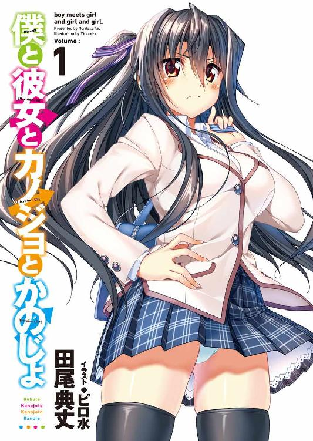

| 僕と彼女とカノジョとかのじょ 1 (オーバーラップ文庫) | |
| 田尾典丈 | |
| (2013) | |

イラスト／ピロ水
バッシャアアアアアアン!! と、けたたましい水音が響く。
古池や 女子飛び込み 入水かな
......なんて、そんな一句を脳裏に浮かべている場合じゃなかった。
「黒恵ちゃん！ 大丈夫!?」
池に落ちてしまったのは暴力的で、粗野で、僕を所有物と言って憚らない僕の幼馴染み。
でも、さすがに溺死して欲しいとまでは露程も思っていない。
水面がビックリしたように大きく波紋を広げたが、黒恵ちゃんは未だに池から上がってこなかった。そこまで深い池じゃなかったはずなのに。その上、水泡も浮かんでこない。
直径三十メートル、水深は一メートル強ほどの、ごくごく一般的な公園に作られた、代わり映えのしない池。
「も、もしかして、頭を打ったりとか......？」
不安が過る。もし、そうだとしたら、助けにいかないと黒恵ちゃんが水死してしまう。
咄嗟に池を上から覗き込むが、水面が夕日に照らされて水中はよく見えなかった。
その照らされている光は、さらに強く輝くように──。
「って、ええええええええ？」
光量が尋常じゃない。
公園を覆い尽くすような光輝が、爆発的に溢れていく。
温かさを感じさせながらも、その光は周囲を真っ白に染めていく。
だけど、目を瞑らなくても眩しいとは思わない。
すごく不思議な光だった。むしろ、瞳を優しく愛でられている感じだ。
でも、僕はそれ以上に驚くしかなかった。
水面は未だにそのすべてが黄金色に光っていたのだから。
尋常ではない。この光は、夕日の反射なんかじゃないぞ!?
「うふふふふふ、なんか願いとか感じたんですけどー。こんな純粋な願いは久しぶりだねー」
どこからか声が響く。
気付くと、水面の上に薄いドレス――ふわふわのネグリジェのようなものを着込んだ女の人が立っていた。
美人さんのような気がするのだけど、そんな気がするだけでなぜかその姿は判然としない。曖昧すぎる存在が目の前にあった。
体の大きさすらふわふわしていて定まっていない。服を着ているようだけど、それは水で作られたかのように、形状も常に歪むように変化していた。
あたかも、ＳＦの物語で出てくるような、立体ホログラフィーのよう。
幽霊のようでありながら、とても神々しくて、思わず跪きたくなる気持ちに駆られる。
反面、少し気味が悪くもあった。
「さて、そこな男子」
「は、はい!?」
いきなり話しかけられて、咄嗟に返事をしてしまう。
都市伝説とかで怪異にあった場合、返答しただけでアウトみたいな話がなかったっけ？ いや、うちの町ではそんな危険な都市伝説、聞いたことないけど......。
でも、最悪の事態を思い浮かべてしまい、少し背筋がうすら寒くなった。
「そんな怯えないでいいって。私は女神、願いを叶える者ぞ――なーんて、うふふふふ」
「め、女神、さま......？ 願いを叶える？」
「左様」
そこにいる女神を自称した女性は、右手の指をパチンと鳴らす。
すると、池の中から水の音も立てずに、何かが現れた。
そこに現れたのは――ひとりの少女。
池の中に落ちた黒恵ちゃんと同じ制服を着込んだその女の子は、直立姿勢のまま糸に吊されたように浮いている。
あらゆる部位が精巧にできた人形のようで――だけど、人間そのものだ。
目を瞑っている。けれど――顔が黒恵ちゃんにとてもよく似ている。
大なり小なりの違いはあるけれど、彼女の姉だと言われたら信じてしまいそうだった。
区別が付いた大きな理由は髪や眉が艶やかな黒じゃなくて、黄金色を帯びているからだろう。あとは胸が黒恵ちゃんよりも大きそうだ、とか......。
そんな彼女の雅やかな金髪は、穏やかな風に心地よさそうにたなびいていた。
「おーい、何を呆けてるのー？ こっちも慈善事業じゃないんですよー」
「えっ」
まじまじと見入ってしまっていたが、一体何が起こってるんだ？
だが、目の前にいる女神さまは混乱する僕に構わず尋ねてくる。
「で。今、落ちたのはこの金髪系女子のオノ？」
「え？ い、いや！ 違います！」
「え、ダメ？ そっかそっか」
女神さまは次に左手の指をパチンと鳴らす。
すると、今度は金髪の女の子のすぐ隣に、またひとりの女の子が浮上する。
金髪の少女と並ぶとかなり小さい。小学生ぐらいの背丈だ。そして、やはりうちの学園の制服を着ていた。
線が細く色白で、触っただけで崩れ落ちてしまいそうな儚さを醸し出している。
この子もまた目を瞑っているけど、やっぱり黒恵ちゃんに顔の作りがよく似ている。
黒恵ちゃんの妹と言われても、違和感がない。
黒恵ちゃんと違うのは身長と、もうひとつ。やはり髪だ。
彼女は、絹のように細い艶やかな銀色の髪を持っていた。それがさらさらと風になびいている。
「では、この銀髪系女子のオノ？」
「ち、違います違います！」
「この子もダメなの？」
少し頭が冷静になってくる。
なんだ、これ。もしかして、イソップ寓話にあった金の斧の話？
女神とか言ってたし。
でも、金の斧の原本ってヘルメス神だった気も......。ここが日本だから、日本ナイズされたのかな？ あー、うち、日本だからさ。横文字の神様禁止なんだよね。マジ？ じゃあ、女神にしておくわ、みたいな。
いやいやいや、海外の都市伝説や寓話が御丁寧に日本の絵の具に染まる必要なんて別にないような......。
「あっ！ っていうか、黒恵ちゃん！」
現実離れした事態に混乱して、落ちてしまった黒恵ちゃんのことを失念してしまっていた。
「落としたのは、このふたりじゃないのー？」
「え、えっと......落ちた女の子はもっと黒くて......」
「腹が？」
「違いますよ！ 髪がですよ！」
そう答えると、ざばぁっ！ と黒恵ちゃんが池から這い出てきた。浮き上がってきたふたりと違って、水が滴っている。
陸に上がった黒恵ちゃんは息を整えるのに必死で、周囲の異常にも気づいていない。
「じゃ、素直なご褒美に黒髪系女子のオノはお返しするとしますよー。金髪系女子のオノと銀髪系女子のオノもついでにあげちゃう」
「は？ ......え!?」
あげちゃうって......。
「そんじゃねー、少年。やることはやったからあとは頑張ってねー」
そして、女神を自称した女性は、忽然と消えてしまった。
それと同時に世界を覆っていた目映い光も薄くなり、徐々に元の光景を取り戻していく。
今まで起こったことが、まるで夢だったかのように元通りだ。周囲にいた僅かな人たちはこちらに注目していたが、それはどちらかと言えば黒恵ちゃんが落ちたことを心配してたような視線で、女神さまが出ていたことには気付いていないらしい。
池の上に浮いていたはずの金髪と銀髪の女の子たちはというと、いつの間にか僕らの傍へと降り立っていた。
そして、彼女たちの瞳が開く。まるで魂を入れられたかのように。
金髪の子はブルーの瞳、碧眼だ。金髪と相まって、まるで外国人のように見える。夕日に煌めくその瞳は、まるで夜空に浮かぶ星を思わせた。
銀髪の子はグリーンの瞳。北欧に多いというが、これも銀髪に誂えたかのように綺麗だった。芸術品のように映るそれには、不思議と引き込まれるような力がある。
だけど......本当によく似ている。黒恵ちゃんに。
「.........」
「.........」
「.........」
「......げほっげほっ」
黒恵ちゃんが咳き込みながら立ち上がる。そして、状況を把握するようにふたりを交互に見た。
四人で向かい合い、黙ってしまう。
だけど、それも束の間。
金髪の子の表情がパッと花開いた。
「社っ！」
いきなり、僕に抱き付いてくる。体を僕にピッタリとくっつけてきて、しかも頬ずりまでされ始めた。大きな胸の感触までふにょんふにょんと伝わってくる。
あと、すごくいい匂い。ふわっとした、なんだか安らぐような匂いだ。
「え......あ......」
お、女の子って柔らかい......って、場違いな感想だよ！
「もう我慢することないの！ 社っ！ 大好き、大好き！」
クラッときた。
大好き――こんな魅惑的な言葉だったなんて。
女の子に言われて、こんなに嬉しいなんて。
なんだか天にも昇る気持ちだった。
「って、おいっ！ 誰だか知らねーけど、あたしの社に気安く抱き付くな!!」
黒恵ちゃんの怒声が僕の浮ついた心に冷や水を浴びせた。
ついでに黒恵ちゃんの服に染み込んだ水が飛び散り、物理的にも冷や水を浴びせてくる。
この怒声具合は、相当怒っているなぁ。池に落ちちゃったし、当然かもだけど......。
「別に社はあなたのものじゃないでしょう、黒恵。だったら、わたしが抱き付いてもノープロブレムよねー！」
「何言ってんだ。社はあたしのものだっ！ 離れろッ！」
黒恵ちゃんの馬鹿力によって僕たちは引き離された。
穏やかな温もりが消えていく。後ろ髪を引かれるような感覚だけが残った。
「ちょっと何するのよー。社の体温、味わってたのに～」
「うっせーうっせー！ 触れんな触れんな！」
「うわ、何その語彙？ あなたの辞書にはそんなシンプルな単語しか載ってないの？ 可哀想......」
「あんだよ、お前はぁ！ 気持ち悪い顔しやがって！」
ふたりの言い合いは止まらない。
不倶戴天の敵が久しぶりに出会ったみたいな勢いだ。
「.........」
ふと、背後に感じる静かな息遣い。
次いで袖を控えめに引っ張ってくる感触。
「ん？」
斜め後ろに振り返ると、銀髪の子が小動物のように縮こまって、僕の背中にひっそりと寄り添っていた。彼女の体温がほのかに伝わってくる。
そんな彼女が僕を切なそうな表情で見上げていた。
「やしろ......」
この子もとても可愛い。守ってあげたくなるというか、父性愛が強制的に引き出されるというか......。
「「あ――――――――――――――――――っ！」」
いきなりの大声にビクリとする。
「ちょっと！ 銀花、ズルい！」
金髪の子が叫ぶ。察するにこの銀髪の子の名前は、銀花ちゃんというらしい。
「......金恵が先走り過ぎなだけ」
銀花ちゃんがぼそっと呟く。なるほど。金髪の子は金恵ちゃんって名前か。
......って、冷静にこんなことを考えてる場合じゃなかったような。
「何が起こってんのか、説明しろこらああああああああああああああああああああ！」
公園に黒恵ちゃんの絶叫が響き渡った。
ホントに、何がどうなってこんなことになったんだろう......？
冷静になって、数時間前までのことをふと思い返した。
「遅いぞ、社！ 早く来いよ！」
「ま、待ってよ、黒恵ちゃん......」
奴隷という言葉がある。
いい意味で言えば、あるひとつのことに心を奪われ、そのためだけに行動する人の喩えだ。
恋の奴隷。
金の奴隷。
探せばいくつかは出てくると思う。辞書にも載ってる。
だが、奴隷という言葉は、概ね悪い意味で捉えられるもの。
『奴隷』
それは人間としての権利・自由を認められず、他人の私有財産の一つとして扱われた人のことを指す。僕の持ってる辞書にはそう印字されてる。
求められるのは、絶対服従。
彼女が主人で、僕が奴隷。
それが僕、神座木社と彼女、小野黒恵の関係だ。
腰まで伸ばした艶やかな黒髪を小さく揺らして、彼女は小さなぬいぐるみコーナーへ向かう。可愛らしいぬいぐるみを物色する目は、まるでナイフを品定めしているかのように鋭く吊り上がっている。今は黒いダッフルコートを着込んでいるから見えないけど、制服も少し改造されていて、だから周りの人には不良だと誤解されがちだ。どちらかというと、姉御肌と言った方が正しいけど。
「おっ、これもいいな。買っとこう。ほら、持っとけ」
「あ、うん......」
黒恵ちゃんの投げた小さなぬいぐるみが緩やかな放物線を描いて飛んでくる。
両手で丁寧に掴んで、手に取ったぬいぐるみを右手首に提げている紙袋に入れた。左手首の方に提げてある紙袋はご飯を山盛りにされた茶碗みたいになっていてもう入らない。零さないようにバランスを取っている状態だ。
「ナイスキャッチ、社」
「ま、まあ、この距離なら......」
こんなことばっかり上手くなっていく。
とても悲しい。虚しくなってくる。自分の境遇にせつなさが炸裂しそうだ。
毎日のように、学校帰りに荷物持ち。そして、買い食いや買い物に付き合わされる。
今日は百円ショップでご満悦だ。
お金に関してはさすがに取られていないけど、彼女が遊んでいる時、僕に自由な時間はなかった。
「よっし、次行こう！ 次！」
満足したのか、意気揚々と彼女は歩き出す。
僕はそれに静かに付いていくだけだ。機嫌を損ねると夜叉という言葉が生温くなる危険な生物が爆誕してしまう。
「はぁ......」
小さく溜息を吐く。
「......どうかしたか、社？」
「い、いや、なんでもない......」
思えば幼稚園の時からの付き合いで、小学校に上がった辺りからヒエラルキーは固まった気がする。
その頃から彼女に振り回され、フォローをして、必死に付いていって......。
幼稚園の頃はそんなでもなかったんだけど、小学生になってから彼女は自分勝手というか......僕に対して、躾のなってない犬の飼い主みたいになってしまったのだ。もちろん躾のなってない犬扱いされているのは僕だ。
公衆の面前だろうとふたりきりだろうとデコピンされ、罰と称して竹箆をされ、それは年を経るごとにエスカレートしていった。
そんな関係が嫌で、僕は中学の時、心に秘めたる炎を灯した。
黒恵ちゃんと僕の家は近い。歩いて五分もしない。
私立ならともかく、公立に行くのでは同じ中学になるのは必然だった。
だけど、高校ならば話は変わる。
僕は黒恵ちゃんの理不尽に巻き込まれなかった時間を最大限、有効に活用して猛勉強をした。
県下、公立トップに君臨する尾敷陽光高校に受かるために。
彼女はよく授業をサボっていたし、試験での成績もいいとは言えなかった。
自然、偏差値の低い学校に行くことになる。
彼女がどこの高校に行くかなんてそこまで興味もなかったし、彼女が僕に高校を合わせろと言ってきたところで、一般的な学校ならそれを許すはずがない。
僕の進学希望はそのまま通り、それに対しての邪魔もなかった。
僕が尾敷陽光高校を受けると言った時、
「そうかよ」
彼女は顔を逸らして不機嫌そうにそう呟いただけだ。
それから。
僕は尾敷陽光高校を受験し、見事合格。
受験番号を見つけた時は、これまでの理不尽から解放されるのだ、新しい生活が待っているのだ、と涙した。
家が近くと言えど学校での縁がなくなれば、黒恵ちゃんに理不尽な要求をされることも少なくなるだろう。
初めての嬉し涙だった。
そして、入学式。
新しい学校生活に思いを馳せつつスキップを踏みながらウキウキ気分で校門に到着すると、
「よっ、ご機嫌じゃん」
と、笑顔の悪魔が立っていた。黒い翼と尻尾まで見えた。
甘かった。
僕の考えは、砂糖で作った城の如く、甘くて脆くて崩れやすいものだった。
中学三年の夏辺りからちょっかいをかけてこないと思ったら、彼女も僕と同じ高校へ進むべく勉強をしていたらしい。
黒恵ちゃんは普段やらないだけで、本気を出せばすごい女の子だということを僕はすっかり失念していた。中学時代も体育祭では、陸上部の人たちと競ってたぐらいだったからな......。
いくらなんでも、もう勉強のリカバリーは利かないだろうとか、そこまでして僕を奴隷扱いすることはないだろうとか。
そんな常識をパズルのピースのように嵌めていけば、この地獄から抜け出せると思っていたなんて、僕はあまりにも浅はかだった。黒恵ちゃんは、そんな完成した常識のパズルを嬉々として壊す女の子だというのに。
校門で再会した時、本当に僕は顔色を失った。鏡で見たわけではないけど、信号機みたいに赤になったり青になったりしていたと思う。
単に彼女を否定するだけなら、少し遠いけど男子校に進めばよかったのに......。
ただ、男子校って少し怖いような気がして......でも、きっとそれは覚悟が足りなかっただけなのだ。もっと僕は黒恵ちゃんと離れるべく、断固たる決意をするべきだった。
でも、時はすでに遅く。
そして。
僕の奴隷ライフは入学式開始のチャイムと共に再開の鐘を鳴らし――。
あとは、お決まりのパターン。
彼女は僕の自己紹介の時に、『こいつはあたしのものだから、手を出すなよ』と横から口を挟んできて、クラスメイトたちは『へぇ、そうなんだ。お幸せに』という雰囲気を醸し出した。
そして、今に至る。
「さーて。じゃ、そろそろ帰るか！」
彼女はようやく気が済んだようで、僕たちはようやく帰路につくことになった。
店から出た僕たちは凍えるような寒空の下、人通りの多い繁華街を抜けて、交差点に辿り着いた。青信号が点滅し始めて、早くしないと赤になっちゃう。
僕が走ろうとして――黒恵ちゃんに襟を掴まれた。
「げふっ。く、黒恵ちゃん、首絞まっちゃうよ！」
「しゃーないだろ。むしろ点滅してるのに飛び出す方が危ねぇよ」
......もしかして心配してくれたのだろうか。
いや、黒恵ちゃんは妙に過保護な面を見せるときがあるんだよね。
ここの交差点の点滅は長いのに。どういう風の吹き回しだろう。
「あ、ありがと」
「礼なんかいい。慌てて荷物が散乱する方が困るからな。......ほら、青に変わったし、行くぞ」
しばらく歩いて僕たちは公園に入った。少し大きめの自然公園に吹き抜ける風は肌を凍らせ、すでに葉の散った防風林の枝を寂しげに揺らしていく。そんな霜を貼り付けそうな風が、冬の到来を否応なく感じさせた。
今日も何人かの散歩やウォーキングをしている人などと擦れ違う。声を出して挨拶はしないが、なんとなく会釈した。
それからサイクリングコースを道なりに歩くと、柵に囲われた小さめの池が目に入る。いつもと代わり映えもしない、直径三十メートルほどの池だ。周囲は遊歩道で整備されており、さらにその周りを囲むようにクスノキが植樹されている。柵の内側にも入れるように一部が開いており、その狭いスペースにはベンチもあった。そこは池を眺めながら休める休憩スペースなのだ。
この公園は学校から彼女の家までの近道で、もう十分ほど歩けば彼女の家なのだけど......。
荷物が重くて、腕がキツくなってきた。
足を使って紙袋が少しでも持ちやすくなるよう直す。
「ん？ なんだよ、もう持てないのか？」
その仕草を黒恵ちゃんに見られた。呆れたような視線が刺さる。
「しゃーねーな。そこのベンチに下ろしていいぞ」
「ご、ごめん」
言葉に甘えて、僕はデパートや百均で買ってきた荷物を、黒恵ちゃんが指し示した近くのベンチへと下ろした。
「はぁー......」
僕は荷物を下ろしたベンチに座って、背もたれに背を預ける。大きく息を吐くと、寒々しい白い息が目の前で散っていった。
目の前にある池を見ながら背筋を伸ばすと、疲れが少しだけ癒やされる。
「まったく、だらしねぇな」
彼女が背もたれの後ろで、溜息を吐いて、呆れたように僕を見た。
「ごめん......」
色々言い訳はできるけど、機嫌を損ねないためにも僕は謝るしかなかった。
いつまで、続くんだろう。この生活......。
「ちゃんとご飯食ってるのかよ」
両肩に手を置いて、僕の肩幅を確かめるように揉んでくる。ちょっと気持ちいい。
「た、食べてるよ」
「三食？」
「うん」
「だったら、ちゃんと筋トレしろよな」
帰ってからそんな気力が使えるほど残っていないんだけどなぁ。
学校の授業についていくのが精一杯で勉強漬けだし。
偏差値的にはかなり無理をして今の学校に入学したから、平均を保つだけでもすごくキツかった。ちょっとでも予習復習をサボれば、成績はあっという間に急降下する。
「......ったく。ちょっと飲みもん買ってくる。お前はいつものウーロン茶でいいな？ ちゃんとここで休んでろよ」
彼女は僕から離れ、自販機へと向かった。
「ふぅ......」
もう一度、白い息と一緒に息を吐く。
結局、彼女がいない時が一番安らぐんだよね。
本当だったら、もっと穏やかな高校生活を送ってた気がするんだけどな。
どこで間違えたんだろう。
でも......。
彼女がいなかったら、もっと不幸になってたような気がするのはなぜだろう。
身体も小さいし気も弱いものだから、よくガラの悪い人たちに絡まれていた。それを何度も何度も黒恵ちゃんは助けてくれる。
『あたしのものに何の用だ』という枕詞が毎回付いていたけど......。
「少し、風が出てきたなぁ......」
池の周りに植樹された木々の枝葉が、その風を非難するように葉音を鳴らしている。
その音は徐々に強くなり、枝も大きくしなった。池の水面にも細波が広がり始めている。
そして、最後の一吹きとばかりに突風が襲ってきた。肌を突き刺すような寒風が吹き荒れる。
「寒っ」
この季節の風は寒くて嫌いだ。
「社っ！ 荷物！」
怒声が響く。
その声に釣られて見てみれば置いた荷物が倒れそうになっていた。風に煽られたのだろう。今まさにベンチから落ちようとしていた。
咄嗟に手を伸ばすが、僕の手は届かない。
そこへ、すごい速さで走ってきた黒恵ちゃんが袋を掴もうとして――掴めずに、そのまま前へ。
「うああっ!?」
目の前は、池。
勢いの付いた黒恵ちゃんは止まれない。
僕も止めることができなかった。
バッシャアアアアアアン!! とけたたましい水音を響かせて池へと落ちてしまう。ベンチからも袋が落ち、詰め込んでいた荷物が地面に散らばった。
それが黒恵ちゃんが池に落ちるまでの経緯だ。
黒恵ちゃんが池に落ちて。
女神さまが降臨して。
金恵ちゃんと銀花ちゃんが出てきて。
人生で一度しか起こらないことが三つも起きて、脳内情報の倉庫番がストライキを起こしているもんだから、考えも何もまとまらない。
取り敢えず落ち着いて話をするため、あとずぶ濡れになった黒恵ちゃんの服をどうにかするため、四人で黒恵ちゃんの家へとやってきた。
家々が肩を寄せ合うようにしている場所に建つ、二階建ての木造住宅。
外で黒恵ちゃんを待っていると、軋んだ音を立てて玄関が開く。
「ほら、入れよ」
黒恵ちゃんは、ルームウェアのジャージに着替えていた。
僕たちは家に上がる。そう言えば黒恵ちゃんの家に来たの久しぶりだな。
今日はまだおじさんもおばさんも帰ってきていないみたいだ。
リビングに通されて、僕はテーブルに着く。
「社の隣はわたしね」
金恵ちゃんが僕の隣に座って横から抱きしめてくる。わ、悪い気分じゃ決してないんだけど......は、恥ずかしい！ 身体の柔らかさとか体温とかが直に伝わってくる。
「は？ 社の隣はあたしだ！」
黒恵ちゃんが表情を怒りの朱色に染めて、抱きついている金恵ちゃんを剥がそうとする。
金恵ちゃんの手が僕から離れ、金恵ちゃんは立ち上がらされた。
「......じゃあ......ぎんかが、ここ......」
そんな中、ひっそりと席に上半身を覆い被せて、僕の隣に座ろうとする銀花ちゃん。なかなかしたたかだ。
「駄目に決まってんだろ！」「銀花と言えど、それは駄目よ！」
黒恵ちゃんと金恵ちゃんが揃って駄目出し。銀花ちゃんが不満そうな表情を作る。
黒恵ちゃんと金恵ちゃん、仲は悪そうだけど妙にシンクロしてるなぁ......。
「ま、仕方ないわね。黒恵に譲るわ」
「......いたしかたなし」
で、結局、金恵ちゃんと銀花ちゃんがこの場は退いて、黒恵ちゃんが座ることになった。
僕の真正面に金恵ちゃんが座り、黒恵ちゃんの前には銀花ちゃんがいる。
それにしても、本当に黒恵ちゃんによく似てるな。顔が似てるからっていうのはあるんだけど、性格とかは丸っきり違いそうだし、髪の色とかも違う。でも、傍にいる時の雰囲気みたいなものがまったく同じなのだ。黒恵ちゃんが三人に増えたみたいに。
黒恵ちゃんに言ったら怒りそうだから言わないけど......。
「さて、単刀直入に訊くけど、お前ら――何？」
着席するなり黒恵ちゃんが口火を切った。その訝しげな目は丸っきり不審者を見るそれだ。
......まあ、いきなり現れたわけだし、不審者と言えば不審者かもしれないけど。
「わたしはあなた」
「......ぎんかは黒恵だよ」
金恵ちゃんと銀花ちゃんは、似たような言葉を黒恵ちゃんに返した。
「え......？」
「は......？」
僕も意味がわからない。
黒恵ちゃんは早くも頭を抱えた。もどかしさでもあるのか、苛ついたように頭を掻く。
「あたしが分裂したとでも言うのか!?」
「ま、手っ取り早く言えば。あなたの中からわたしが出てきたのは確実ね。理屈は知らないわよ。それはあの泉の主に訊いて。わたしも出てきた理由なんかわからないしー」
金恵ちゃんの説明だけでは、さすがに僕も納得できない。
「ねえ......えっと、金恵ちゃん、だよね」
「そーだよ、社。ああ、いいわー。呼ばれるだけでゾクゾクするぅー」
「あ、あはは......」
突っ込んでもやぶ蛇な気がしたので、ここはスルーしよう。
「なんで出てきたのかって、理由はあるのかな？」
「......黒恵が......泉に、落ちたから......」
今まで黙っていた銀花ちゃんが横から答えてくれる。
「それはきっかけでしかなかったような......あ、というか、あの泉のアレは何？」
「......泉の主さま......。普段は......姿を見せないけど、きまぐれで......いろいろする......。正体はわからない......」
いろいろ。それが、この分裂ってことなのかな。
「金とか銀って......。まるでイソップ寓話の金の斧の逸話みたいだ」
木こりの人が泉に斧を落としたら、
『あなたが落としたのは、この金のオノですか？ この銀のオノですか？』
『いえ、ただの鉄のオノです』
『正直者のあなたには、この金と銀のオノも差し上げましょう』
――みたいな。
実際のところ、金も銀も柔らかすぎて斧本来の目的は果たせないから、売ってお金にしろって話だよね、あれって。
伝えたいことは、単純に嘘を吐かず正直に生きろってことだろうけど。
それに、この話には、その後にちゃんとオチがついている。
別の木こりが鉄の斧をわざと落として、
『あなたが落としたのは、この金のオノですか？ この銀のオノですか？』
『その金の斧です』
『嘘吐きのあなたには、何もあげません』
と、嘘を吐いた方は鉄の斧まで失ってしまうのだから。
欲張って嘘を吐くと、前よりも損をするのだぞ、という戒めだ。
「ま、答えはほとんどソレよね。黒恵が泉に落ちて、あの泉の主がそうしたってこと。理由はわからないけどね。わたしも泉の主の正体なんて知らないし」
「なんで、そんなことしたんだろう？」
そもそも、そんなことができるというのがそもそも凄まじいけど。
元々、この尾敷という町には不思議な話がいっぱいある。少し変わった都市伝説とか怪談のように見せて怪談になっていない怪談とか。
......にしたって、実際に起こるなんて思わないよ。
それにしても......黒恵ちゃんは女神様にあんまり驚いてなかったな。分裂しちゃったことも嫌がってはいるけど、そこまで怯えても不安がってもいなさそうだ。鋼の精神と呼ぶべきか。
「何で分裂したかなんて、あの主の気まぐれとしか言い様がないかなー」
「気まぐれ？」
「名字が小野だったから、とかじゃないの？」
「え」
金の小野、銀の小野。
.........。
いやいやいやいやいやいやいやいや！
「まあ、取り敢えず正体はわかった。何もわからないこともわかった。じゃ、あたしらにはもう二度と関わるんじゃねー。つーわけで、あんたら帰れ」
黙って話を聞いていた黒恵ちゃんは、いきなりシッシッとまるで犬を追い払うように手を振った。黒恵ちゃんがよくやる仕草で、子供の頃からの癖だった。
......って、ちょっと待って。追い出したりしたら。
「ま、待ってよ。黒恵ちゃん、この子たちどうするの!?」
「知らねーよ。帰れよ」
帰れって......。
「どこに帰ればいいのよ」
「泉に決まってんだろ」
「帰れるわけないじゃない。わたしたちは肺呼吸してるんだし、溺死するだけだわ」
「だったら溺死してくれ。あたしが面倒を見る謂れはねぇよ。まあ、エラ呼吸ができるようになるよう祈るぐらいはしてやる。泣いて感謝しろ」
「ま、待ってよ！ れ、冷静に話し合おうよ！ 銀花ちゃん、泣いてるし！」
銀花ちゃんは溺れ死ぬ想像でもしているのか、顔を蒼白にしている。うっすらと涙まで浮かべていた。
「だったらどうしろってんだよ。世話しろっての？ 警察に迷子で届け出た方が早えーよ」
正論だ。金恵ちゃんも銀花ちゃんも、黒恵ちゃんに似ていると言ってもいきなり出てきた不審人物で身元不明。
でも、警察は泉から出てきた女の子たちを相手にしてくれるだろうか。身元を証明するものもない。冗談と取られて追い出されるだけなんじゃ......。
「で、でも、こんな寒空の中、放り出したら......！」
こんな冬空で一晩過ごすとか、ちょっと考えたくない。今日の天気予報で、今夜は珍しく雪が降るかもしれないと言っていたはずだ。
泉から出てきたりとか、黒恵ちゃんが分裂しただとか、まだよくわからないことは多いけど。
それでも、この子たちは人と同じ――そんな気がしていた。
金恵ちゃんに抱き付かれた時も、銀花ちゃんに寄り添われた時も。
人と同じ温もりを感じたんだから。
少なくとも、悪い子たちじゃなさそうだし。
「じゃ、じゃあ。ふたりとも僕の家に来る？」
せめて住むところが決まるまででもいい。
僕の家には今、姉も妹もいないから、お父さんもお母さんも喜びそうな気がするし。
寝るところだったらたくさんあるしね。
「いいの、社!?」
「......い、いいの？」
金恵ちゃんが嬉しそうに、銀花ちゃんが恐る恐ると上目遣いで聞いてくる。
「うん、もちろ――」
「ふざけんなあ！」
黒恵ちゃんが僕の声をかき消すような叫びをあげた。
「社のところに住む!? 認めらんねえ、絶対認めらんねえ！」
「えええええええええええええええええええええ......」
なんでだろう。
僕が多少抗議の意志を込めて黒恵ちゃんを見つめていると、黒恵ちゃんが諦めたようにがっくりと肩を落とした。
「ああ、もうわかったよ！ 気が済むまでうちに住めよ！ どうせ、兄貴ふたりが出ていってちょうど部屋も二部屋空いてるしな！」
「いいの？ 黒恵ちゃん......」
さっきまでふたりのこと、あんなに嫌がってたのに。
「どうせ、お袋は面白がって受け入れるだろうし、親父なんか大喜びだ」
「よかった。ありがとう、黒恵ちゃん」
「うっさい！」
「あ、痛っ！」
拳骨で殴られた。涙が浮かぶほど痛い。
「ちょっと黒恵！ 社に何してんの!?」
「しょ、所有物を殴ることのどこが悪い!?」
「全部悪いに決まってるじゃない！ まったくなんて乱暴な女なのかしら......信じらんない」
金恵ちゃんは席を立って僕の後ろに来る。
「ほら、痛いの痛いの飛んでけー」
そして、殴られた箇所を優しく撫でてくれた。
恥ずかしいけど......ちょっと気持ちいい。
......でも、この僕の肩に乗ってる心地よい柔らかさと重さを持つものは、もしかして......。
「ああ、もう気安く社に触んな！ あと、肩に胸なんぞ乗っけてんじゃねー！ 社が妙な病気にでもかかったらどうする！」
「病気って何よ、失礼ね。あなたの口の悪さの方が病気じゃないかしら？」
「やかましいわ！ とにかく！ そういう恥知らずな行為は禁止だ！」
黒恵ちゃんまで立ち上がった。金恵ちゃんの身体を掴んで僕から引きはがす。
「もう用はないだろ！ 社はさっさと帰れ！」
もうちょっとふたりと話してみたかったんだけど、仕方ないか。
「そ、それじゃあね......」
そう言って僕が玄関に向かっている時も、
「あんたは社に対して厳しすぎるのよ。そんな器が小さいくせに、お尻ばっか大きくなっちゃって」
「うっせー！ 人の気にしてること言うんじゃねーよ！ このホルスタイン金牛女が！」
まだやっている。
銀花ちゃんだけが、控えめに手を振ってくれていた。
階段を上って鳥居を潜ると、境内が見えてくる。
すでに空には夜の帳が下りており、とても暗くて静かだ。外灯は神社側には付けていないため、より一層暗く見える。今日は新月で月の光もない。
神座木神社。ここが僕の住む家だ。
もう参拝客は誰もいない。僕が砂利を踏む足音しか聞こえなかった。
僕は社務所へと向かう。僕ら家族はそこで生活していた。
「ただいま」
玄関を開けて中へと入ると、奥から「おかえりー」とふたりの声が聞こえてくる。お母さんとお父さんだ。
「晩ご飯だから着替えて早く下りて来なさいねー」
「はーい」
ふたりとも今日の仕事が終わっていたらしい。両親の仕事は神主で、時々帰りが遅くなることがあるが、概ね社務所に戻ってくるのは早い。そこまで繁盛してる神社でもないしね。
僕は一人っ子なので、そのまま跡を継ぐことになるのかなぁ、とぼんやりと思っているが、お父さんもお母さんもその辺りについては触れないんだよね。
そんなことをうっすらと考えながら、一度自分の部屋に戻って鞄を置き、着替えてから居間に向かう。
居間ではすでにいくつかの皿が並んでいた。
「ご飯、つぐよ」
「ありがとね、社」
三つの茶碗にご飯をよそっていく。お母さんは普通盛り、お父さんは大盛り、僕は少なめだ。
「まーたそれだけしか食わないのか。男だったらもう少し食え」
「入らないから無理だよ......」
お父さんはいつも豪快だ。親戚には会う度にまったく似てないと言われ続けているほどに。本当にこの人の息子なのか、自分でも疑ってしまうレベルだ。
「でも、食べないと大きくなれないわよ？ 成長期なんだし」
「お母さんまで......。大丈夫だよ。足りてるし......」
実際に、そこまで食べられないしね。僕の胃袋は小さいらしい。
「いただきます」
テーブルに着いて、いつものように晩ご飯を食べ始めると、
「そう言えば、今日は遅かったわね」
と、お母さんが気楽な様子で聞いてくる。
黒恵ちゃんと一緒に帰っていたら、泉に落ちて分裂しちゃった......なんて言ったらどう思うかな。
お父さんもお母さんも、この町の住人の大部分がそうであるように超常現象を受け入れる方だから、言うだけ言ってみようか。
「実は......」
ふたりに説明してみた。
予想通り、お父さんもお母さんも笑うだけだ。
「ははは、黒恵ちゃんも大変だな。昔から巻き込まれやすいみたいだったけど」
「そうねぇ。特にその女神様にも悪意はなさそうだし、大丈夫じゃない？ それに......いいことじゃないかしら」
「ああ、小野さんの家なら歓迎するんじゃないかな？ ふたりの女の子なんて」
そして、とても楽観的だ。
「黒恵ちゃんはすごい怒ってたけど」
「まあ、自分が分裂しても人によっては受け入れられないだろう。オレだったら分裂した方に仕事をやらせて、オレはゆっくりゴロゴロするが」
「私がもうひとり増えたら、家事が楽になりそうねぇ。私も泉に落ちてみようかしら」
分裂した側がオリジナル――大本の言うことを聞いてくれるならそりゃそうだけど。
僕も代わりに学校に行ってもらうとかしてほしい。
でも、今回の場合、黒恵ちゃんはあのふたりを学校に行かせて自分は休むなんてできないだろう。
金恵ちゃんや銀花ちゃんが従うかどうかではなく、登校させた時点で別人だってわかっちゃうしなぁ。あの金髪や銀髪はとても目立つ。
首を捻って頭を悩ませていると、お父さんが僕の方を見た。
「そうだ、社。夜遅くに悪いんだが、御神木に行ってきてくれないか」
「御神木に？」
うちの山の裏手には一本の巨大な木がある。
学校からでも見える大きな木で、樹齢は何年かわからないが相当に古い木だ。
「祈願をしたときに、どうも薦を置き忘れてきたみたいでな。取ってきてくれ」
薦とは筵――藁で編んだ敷物のことだ。
「うん、わかったよ。せっかくだから掃除もしてくる」
「ああ、ありがとうな。暗いから気をつけろよ」
「大丈夫だよ。懐中電灯も持っていくし、もう慣れてるし」
「そうか、頼んだぞ。ああ、掃除のついでに今のことを報告しておけば、そのうち神様が力を貸してくれるかもしれんぞ」
「えー......」
「まったく。お前は神社の息子だってのに信じてないな」
うちにある御神木は、神座木神社で昔から祀られており、神様が住まうという。
霊験あらたかとは言うけど......僕はあんまり実感がない。
「当主の願いを一度だけ叶えてくれるありがたい木なんだぞ」
「じゃあ、父さんはどんな願いを叶えたのさ」
「それは秘密だ」
またこれだ。
一応、神座木神社の当主の願いを一度だけ叶えてくれるという言い伝えはあるらしいけど、お父さんもお爺ちゃんもそのことについては笑って誤魔化すか、秘密にされている。だから僕はあんまり信じていない。
でも......。
「ご飯食べたら行ってくるよ」
御神木のあるあの場所を、僕はそんなこととは関係無しに好きだった。
ご飯を食べ終えた僕は部屋で上着を羽織ってから、物置にある箒とちりとりを持って、御神木のある場所へと向かった。
土を整えて木を埋め込んだだけの階段を一段一段上っていく。周囲は木々で埋め尽くされていた。そのせいかどうかはわからないけど、とても静かで空気が澄んでいる。
聞こえてくるのは、風で葉が擦れ合う音だけだ。
ここからだと空は周囲の枝葉に覆われていて星の光も見えない。
昼だと木漏れ日が入ってきて、まるで天国に上る道だなぁ、なんて子供の頃は思ったっけ。
今は月明かりもないから右も左もわからないほど真っ暗だ。
でも光がなくても懐中電灯がなくても、ここの道は何度も行き来したから身体が覚えている。
しばらく階段を上って、山の頂上に出た。
「ふぅ......」
登りきってすぐのところに、ちょっとした広場があり、その中心に御神木がある。
今日もいつもと変わらず、そこに鎮座していた。
神の住まう木と言われる御神木。
この御神木も好きなのだけど、ここから見る町の景色もやっぱり僕は好きだ。
町の明かりも首都圏ほど明るくはない。まばらにぽつぽつとあるだけだ。
お父さんは物足りないと言うけど、でも、このぐらいの明かりの方が優しい感じがするからね。
御神木の前には薦が敷かれていた。重石をどけて、薦を丸めて脇へと置いた。ちゃんと忘れずに持ち帰らないとね。
「さて、掃除もしなきゃ」
僕は周囲に落ちている御神木の葉っぱを集める。この葉っぱは大事に保管され、大事な行事に使われるから雑な扱いはできない。
ふと、風が流れて御神木の枝葉が音を立てた。
気のせいだとは思うけど、なんとなく「どうしたんだ？」と聞かれた気がした。
「黒恵ちゃんが分裂しちゃったんです」
ただの独り言だ。
だけど、ここに来て悩みを打ち明けると、少し気分が晴れる。悩みは打ち明けた方がいいというけど、僕はこうして御神木に打ち明けていた。
必ず解決するわけじゃないから本当に気分の問題だけど、解決するとなんとなく神様のおかげなのかな？ と思ったりもするんだよね。
「黒恵ちゃん、それで怒っちゃって......。またその怒りの矛先が僕に向くのかな？って気がするんです」
本気で殴ってくることはないし、大きな怪我をさせられたこともない。
ただ、奴隷のような扱いだけは、やめてほしかった。
僕がそんな目に遭うのが嫌だというのもあるけど、僕を虐げる彼女の姿を見たくないんだ。時折、なぜかわからないけど、無理しているように僕の目に映ったりする。
最初にやり始めてから、もう引っ込みが付かなくなってるのかな......って思ってるんだけど。
それを面と向かって指摘することも、僕は怖くてできなかった。
「神様。何をどうしたらいいんでしょうか......」
愚痴にもなっていない愚痴を漏らす。
だけど、御神木はいつものように葉音を鳴らすだけだった。
黒恵ちゃんが図らずも分裂しちゃった次の日。
「えー、転校生を紹介しますねー」
ホームルームが始まったと同時に、ほんわかとした笑顔で笑う可愛いうちの担任が、この日の連絡事項を伝えるノリで穏やかに告げた。
朝から気になっていたのだけど、教室の後ろには誰も座っていない席がふたつ。
「入ってくださーい」
扉が開いて、入ってきたのは金髪の女の子と、銀髪の女の子。
「小野金恵です」
「......おの......ぎんかです」
ふたりが黒板にそれぞれ自分の名前を書いて、頭を下げた。
どういうことなの。昨日の今日なのに。
外国人の留学生でも来たかのように、教室がにわかに活気づく。
「小野？」「小野って」「もしかして......」「だよね？」
クラスメイトたちが一斉に黒恵ちゃんを見る。僕も釣られるようにしてそちらを向いた。
「.........」
すっごく不満そうな顔をしている。それを見たクラスメイトたちは逆再生した。
僕の視線にも気付いた黒恵ちゃんは、シッシッと犬を追い払うような仕草を見せる。
僕も慌てて逆再生。機嫌を損ねるのはよくないしね。
「えー、このふたりは小野黒恵さんの姉妹だそうですー。いろいろ事情があって離れてましたけど、戻ってきたそうなんですよー。仲良くしてあげて下さいね」
「「「「はーい」」」」
先生がそう簡単に紹介すると、みんなはあっさりと受け入れる。
あんまり深く考えない、踏み込まない、追及しないってクラスだけど、この時ばかりは助かった感じがした。
「いやー、ふたりとも可愛いなぁ」
後ろの席に座る佐藤君がそんなことを言ってくる。彼のこんな満面の笑み、初めて見た。好きなアイドルを語る時ですらこんなキラキラとした目じゃないのに。鼻の下も緩くなってるのか、使い込んだゴムのように伸び気味だ。
「黒恵ちゃんの姉妹がいきなり出てきても驚かないんだね」
「え、そりゃあ、家庭の事情じゃ仕方ないだろ。それにこの辺りじゃ人が増えるのなんて日常茶飯事だしな」
「日常茶飯事ってほどじゃないでしょ」
「でも、聞かないわけじゃないだろ？ あの雪山の山小屋で一泊した話とかさ」
「ああ、あったねぇ......」
有名な怪談のひとつだ。
ある大学生四人が登山していたその途中、強烈な吹雪に襲われた。
このままでは吹雪で死んでしまうと思われたその時、山小屋を見つけ、どうにか吹雪を凌げる場所を得た。
しかし、中には暖を取るための設備も装備もなく、寒さで少しずつ体力が奪われてしまう。
寝たら、死は確実。
そこでリーダーがあることを発案した。
それはそれぞれが四隅に立ち、壁沿いに走って次の隅にいる者にタッチする、というものだ。
タッチされた者は次の隅に行って、そこにいる者にタッチする。その繰り返しをして周回し、少しでも動いて身体を温めようというのだ。
さっそく始め、闇の中、彼らは部屋をぐるぐる回る。
だが、ある時にふと気付く。これを行うためには五人目が必要なのではないかと。
これを続けるためには、四隅にそれぞれひとりずつと、移動するひとりが必要なはずなのだ。
いつの間にかいた五人目。
その五人目は果たして？
――というのが、この話のポイントであり、怪談やミステリーとなるのだけど......。
「うちの地域の話だとその五人目は......すげー快活で、朗らかで、大学生四人と意気投合したわけだろ？ その上、なぜかその五人目が持っていたカイロや酒で暖を取って、その大学生たちは無事に下山したわけで。他の地方だとこの話、五人目が幽霊とかいう話になってるらしいぜ」
戸籍も記憶もなかった五人目は、その四人の尽力によって戸籍を得、今もその四人と共に山を登っているという。
「まあ、うちの地元らしい話だけどさ」
「メリーさんと結婚した人もいるし、口裂け女と恋人になった人もいただろ。ちょっとやそっとのことじゃ驚かないって」
「それも都市伝説だけどね......」
こういうのも地域性というのだろうか。内側にいるとなかなかその異常性に気付けない。
佐藤君は再び金恵ちゃんと銀花ちゃんに向き直って、目の保養をするようにジッと見つめる。
「......にしても、こう言っちゃ何だが姉妹ってわりに似てないな」
「え。そう？ そりゃ髪の毛とか身体は全然違うけど、そっくりだと思うよ」
目の色とかも違うけど眉の形とか、頬の膨らみ具合とか。
「うーん、オレには似ているように思えないが......。雰囲気もなんか違う気がするし」
「雰囲気も似てると思うんだけどなぁ」
確かに性格はかなり違うんだけど、傍にいる時の空気というか存在感はかなり似ている気がする。学校って空間になっても、それは変わらない。
「オレにゃわからん......」
会話が終わったところで、
「じゃ、質問タイムね。ホームルームで連絡事項はないから、時間いっぱい使っちゃっていーよー」
先生が質問を促した。次々と手が上がる。
長髪を靡かせて、ひとりの女の子が自発的に前に出た。うちの厳しい委員長だ。
「はい、まず最初に男子の五番」
......なんで委員長は人を番号で呼ぶのだろう。
そんなんだから、前世は監獄の看守とか言われるのに......。
「趣味はなんですか？」
男子五番の猪之頭くんが質問する。
「身体を動かすことー！」と金恵ちゃん。
「......本を、よむことです......」と銀花ちゃん。
実にふたりの趣味はそれらしい。
それに少し黒恵ちゃんの趣味も混ざってる気がした。中学時代は黒恵ちゃんはよく部活の助っ人とかやってたし、それまでは本を読むことが多かったしね。
「じゃ、次の質問に移るぞ」
委員長の発言から、また手が上がる。
「女子九番」
「前はどこに住んでたんですか？」
「「泉」」
ふたりのシンクロニシティ溢れる発言に、みんなの頭の上に一斉に疑問符が浮かんだ。
「え、えっと！ どっかにある泉市とかって意味じゃないかな!?」
「ああ、なるほど」「そういうことか」「何のことかと思っちゃった」
僕がフォローすると、みんな納得したらしい。よかった......。
さすがに泉というか、池の中から生まれましたとか、ありえないし......。
「はいはーい！」「はい」「はーい！」
「次は男子一三番」
「好きなものはなんですか？」
「社」
「やしろ」
彼女たちが僕に視線を向けてくる。
それに釣られて、一斉にクラスの皆が僕を見た。
僕は初めて視線という概念が内臓――主に胃に影響を与えるものだということを知った。
質問タイムが終了すると、そこからは僕の羞恥タイムだった。
クラスのみんなにいっぱいからかわれ、その間、ずっと黒恵ちゃんは不機嫌そうにしているし......。
ホームルームが終わった今も金恵ちゃんと銀花ちゃんへの質問攻めは続いている。
そんなふたりを遠目から見守っていると、
「ちょっと来い」
僕は黒恵ちゃんに腕を掴まれ、教室から連れ出された。
で、階段の踊り場に来る。
「どーすんだよ、あれ」
「どうするって言われても......」
昨日の今日で学校にはどう転入したの？ とか、学校に入るのに戸籍必要じゃなかったっけ？ 制服はどこで調達したの？ とか、聞きたいことはあるけど、うちの学校だし......。
見たことはないけど、うちの理事長は変人ともっぱらの噂だ。かなり適当な性格のようで、ワールドカップに合わせていきなり学園内でサッカー大会が開催されたり、道徳の授業がいきなりアナログゲーム大会に変わったりする。
その上、妖怪や天狗、雪女、そんな諸々を生徒にしたという噂まである。どこまで本当かわからないけど......。
「というよりも、黒恵ちゃんはどうしたいの？」
「一刻も早く、消すなり追い出すなりしたい」
「言葉だけ聞くと物騒だなぁ」
「うっさい」
ビシッという音と共にデコピンされた。思わず額を押さえる。我ながらいい音だった。痛いけど......。
「つーか、あいつら、あたしから分裂したとか言ったよな。だったら元に戻す方法もあるんじゃねーの？」
「どうなんだろ......」
「社。お前、神社の倅だろ？ なんか、そういう超常現象とかに詳しくないのかよ。お祓いとかないのか」
「いや、お祓いとかとはまた別次元の現象な気が......」
「だとしたら、この町っておかしな都市伝説結構あるだろ。それと同じ類の怪奇現象か？」
「でも、泉の女神さまの逸話なんてあったかなぁ？」
娯楽も少ないし、噂好きな人が多いというのもあるのだろうけど、都市伝説を体験した、見た、聞いたという話は枚挙に暇がない。
さっきの雪山での五人目の話もそうだ。
他にも、トラックと併走するお婆ちゃんだとか。
木に住み着いている神様だとか。
三匹の猿が空中で踊っていただとか。
ここ最近聞いた話だけでも、相当数に上る。
ただ、どれも人に危害を与えたという話は不思議と聞かない。どれも幸せそうな結末となっている。
そんな中に、泉の女神さまの逸話は聞いたことがない。
こうして、新しく生まれていく......ということなのかな？
「あー、もう。どうすりゃいいんだ、あれ......」
黒恵ちゃんはとても苛立っているらしい。頭を手でがしがしと掻いていた。不機嫌な時の仕草だ。
どうやって機嫌を取ったものかなぁと考えていると、
「話は聞かせてもらったわ！ その都市伝説は実在する！」
いきなり、踊り場に甘く澄み通った高い声が響く。
階段の上に、片眼鏡をかけたポニーテールの女の子が、白衣を着て腕を組んで立っていた。
「げ、蒔埜蓮......」
「あ、蓮ちゃん」
「やあやあ、黒っちに、社っち。とうっ！」
その女の子はジャンプして一気に踊り場に着地する。バサッと白衣をはためかせて、ポニーテールの尻尾も元気に揺れた。
横に立つと僕と同じぐらいの身長だというのがわかる。ほっそりとしていてバランスのいい体つき。
悪意などまったく見えない無邪気そうな瞳に、馴染みやすい丸顔。
彼女は、僕らの小学生の頃からの知り合いというか。
都市伝説部という、そのまんまな部活の部長さんである。
「ねーねー、社っちー。そろそろ御神木見せてよーいいでしょー？」
「だ、駄目だってば！ あそこはうちの家族しか入っちゃいけない決まりだから！」
で、会って以来、こうしてうちの神社の御神木を見せろ見せろと僕の腕を掴んでは迫ってくる。
なんで家族以外が近づいちゃいけないのかは僕も知らないけど、お父さんとお母さんにはとにかくダメだと言い含められていた。
「ちぇー。当主の願いがひとつ叶えられるんでしょ？ 社っちに私のお願い叶えて欲しいんだけどなぁ」
「え、えー......いや、その話は眉唾だし......」
「うーん、私としては本当の気がするんだけどなぁ」
そう言いつつ、蓮ちゃんはさらに身体をひっつけてくる。周りに人がいないとは言え、照れくさかった。
「前々から入ったら駄目だって社に言われてるだろが。つか、どさくさに紛れて社に触んな、蓮」
「おうおう、あたしのものに触るなーって？ 純情ですなぁ」
「うるせい！」
「あだっ！」
黒恵ちゃんは女の子に対しても容赦なくデコピンする。いい音がした。
「だ、大丈夫、蓮ちゃん？」
「あー、大丈夫大丈夫。社っちはやさしーなぁ。もう大好き」
「あはは......」
相変わらず口癖みたいに大好きって言うよなぁ。この口癖に騙される男子の多いこと多いこと。
まあ、女の子にも言うもんだから、最近では口癖だって浸透しつつあって、さすがに騙される人は少なくなってきたらしい。
「で、何しに来たんだよ」
「ああ、話は聞いたよ。転校生が来たんだって？」
「え......蓮ちゃん、何で知ってるの？ 一番離れているＥ組なのに」
「転校生が来たなんて話はこの学校じゃすぐに蔓延するからねぇ。そっちのクラスの子からコミュニケーションアプリのＷＩＲＥで情報が送られたのよ。転校生が来た、ってね」
「で、見に来たってわけか。暇人め」
黒恵ちゃんは苦々しい視線を蓮ちゃんに向ける。少し呆れているようにも見えた。
「面白そうだし、見に行くしかないじゃない！ 見ないことの方が、面白くなるかもしれない世界への失礼に当たるわ！」
「おーい、もう少しわかりやすく喋れよ。で、何でこっちに来たんだっての」
「金と銀のふたりを確認したら、あんたたちがいないからさ。捜してたってわけよ。で、あれさ。姉妹じゃないっしょ？」
「え、そ、いや、でも......」
いきなり核心に触れられ、僕は二の句が継げなくなる。
「あっちの金と銀、教室の外から見たわよ。見りゃわかるけど似すぎでしょ、あれは。あんた、実は三つ子だったとか、そういう話聞いたことないしー」
「......まあ、そうだけど。よくわかったな」
特に隠すつもりもないのか、黒恵ちゃんはいともあっさりとバラした。
「あらま。あっさりと教えてくれるのね。いいの？」
「別にお前はこの手の話を広げる奴じゃないってこた知ってるしな。それに、お前こういう話詳しいだろ」
「都市伝説系の話に巻き込まれたって話なら、私の大好物だからね。で、何があったの？」
「解決できんのか？ あたしはお前にそれ以外を期待してねーけど」
「それは内容次第としか言えんでしょ。料理も来てないのに、それが美味いか不味いかなんてわからないわよ、さすがに。せめて材料ぐらいは教えてもらわないとね」
教えろ教えろと迫る蓮ちゃんに、黒恵ちゃんは渋々語る。
「ほーほーほー、あの泉に落ちて。で、何か女神っぽいのが出てきて分裂と。何それ？ イソップ寓話の金の斧？」
「う、うん。そうとしか思えないんだよね......」
「ぶはははははははははははは！ 金の小野、銀の小野って！ ギャグ？ 出オチもいいところじゃないの！」
「笑ってんじゃねぇ！ こっちゃいい迷惑なんだよ！」
「で、何。小野っちが落ちて、金と銀が出てきて、これじゃない、もっと汚いの、って言って正直者には全員あげましょうって流れ？」
「汚いって何だ！」
「く、黒いの、とは言ったけど」
「黒いって腹が？」
「しばくぞ、お前！」
髪が黒って意味だったんだけど......。金恵ちゃんも銀花ちゃんも金髪だったり銀髪だったりしたし。
......にしても、女神さまといい、蓮ちゃんといい、なんで黒恵ちゃんを腹黒くしたがるんだ。デコピンするのに躊躇がない程度に僕を困らせることはあっても腹黒くはないのに。
「なるほどねー。あの金と銀は綺麗な方か」
黒恵ちゃんがもう諦めたのか、次の質問を飛ばした。
「お前、あの泉の話って何か知ってるか？」
「あの泉の逸話で有名なのは、『願いを叶える』のと『縁を切る』の辺りかしらね。結構マイナーで、ここ何十年かは記録にないわよ」
「は？ 願いを叶える？」
「そ。何でも落ちた人間の願いを叶えるらしいわよ」
「じゃ、違うかな。あたしは三つに分裂したいなんて思ってないし」
興味津々の黒恵ちゃんだったけど、あっさりとそっちの噂を切り捨てる。
「縁を切るってのも、なんだか違う気がするぞ」
「まー、その辺りは追々わかっていくんじゃないの？ それよりも、もう少しで考えがまとまりそうなのよねー」
そして、蓮ちゃんは顎に手を当てて、しばらく考える。
１、２、３、４、５、６、７、８、９、10。
「判明したわ！」
蓮ちゃんがいきなり叫ぶ。考えがまとまった時の口癖だ。
「な、なんだよ、いきなり。お前が唐突に叫ぶのは、いつものことだけどよ」
「分裂した理由については今のところお手上げだけど、どう分裂したのかはなんとなく予想できるわ」
「マジかよ」
「というわけで、その金と銀に会わせて。私の予想に裏付けが欲しいから」
黒恵ちゃんは疑わしそうに目を半眼にしてたけど、結局会わせることになった。藁にも縋る思いなのかもしれない。
「やーやー、どもどもー」
呼ばれてやってきた金恵ちゃんと銀花ちゃんを前に、蓮ちゃんは物怖じすることなく接している。まるで前からの友だちのような気さくさだ。
「あ、えっと......。確か、蓮だったわよね？」
「おや、私のこと知ってるの？」
そう聞かれ、金恵ちゃんが困った表情を浮かべた。失敗したなぁ、と顔に書いてある。というか金恵ちゃん、蓮ちゃんのことを知ってるの？
「いーよ、別に。こいつに初対面を装わなくても」
「え。黒恵ちゃん、どういうこと？」
「こいつら、クラスメイトのことを知ってたからな。でも、姉妹で戻ってきたってことにすると、それはおかしいだろ？ だから、初対面を装えって言ってあったんだよ」
なるほど。まあ、分裂したって話を言えない以上、そうするしかないのか。
「変な感じだけど、改めてよろしく。蓮」
「......よ、よろしく」
金恵ちゃんと銀花ちゃんが蓮ちゃんに頭を下げる。
銀花ちゃんは金恵ちゃんの後ろに隠れているけど......。やっぱり、この子は人見知りなんだなぁ。僕に対してはそうでもないのに。
昔の黒恵ちゃんが、僕以外に対してはこんな感じだったことを、ふと思い出した。今じゃ見る影もないけど......。
「おう、よろしく！ それじゃおふたりさん、さっそくだけど、いいかしら？ 社っちが中学二年生の体育祭でやらかしたことって覚えてる？」
「え、蓮ちゃん、それは......っ！」
「おい、蓮。お前、それは......！」
体育祭。やらかした。
そのふたつが意味することはひとつしかない！
でも、それは僕じゃなくて、むしろ、黒恵ちゃんの黒歴史ッ！
「覚えてるわよ。社とー、二人三脚してー、転んでー、下着見せちゃったーってあれでしょ？」
金恵ちゃんの口から楽しそうにスラスラと紡がれる。
まるで自分に起こったことみたいな口調だった。
「かなちーは、そういう記憶......っと。銀の字はどう？」
「おなじ......。転んで短パンが脱げて......お尻にやしろの顔が――」
「ストーップ！ ストーップ！」
そこまで仔細に説明しなくてもいいんじゃないかな......！
思い出す。体育祭の時のことを。
本当なら僕は棒倒しに参加することになっていた。
『危ねぇからやめろ。攻撃側でも守備側でも、お前は鈍くさいから絶対大怪我する。二人三脚にしとけ』
という黒恵ちゃんの鶴の一声で二人三脚になったのだ。もちろん、ペアは当の黒恵ちゃんだ。
で、問題はここからで......。
「競技中に転んじゃって、絡み合って......社っちは倒れまいとして黒っちの短パンをずり下げた上に、お尻に顔を埋めちゃったんだよねー」
「何でそこまで詳しく言うんだよ！」
「れ、蓮ちゃん！ なんで事細かに説明するのさ！」
......あれは本当に柔らかくて――じゃなくて！ 本当に鈍くさいな、と自己嫌悪に陥った。
あの後、一発ビンタを食らって、終わった後にデコピンを二発頭に食らったっけ。
「オッケーオッケー」
蓮ちゃんが何やらペンでメモ帳に書き込んでいる。メモを終えると、ペンを回しながら次の質問を投げた。
「じゃ、社っちと一番楽しかったイベントは何？」
「んー、川で一緒に泳いだこととか？ 中学の林間学校で社とふたりだけだったけど、体を動かせて、流れる水も気持ちよくって、すっごく楽しかったなー」
「......お泊まりして、一緒に絵本を......読んで......。途中、怖いお話だったけど......やしろが大丈夫って......手を握ってくれて、温かくて......。物語の最後がすごく感動的で......一緒に読んでよかったって思ったの......」
ん？
川で一緒に泳いだのは、中学生の時のことかな？ 学校のイベントか何かで、それはやったはずだ。
お泊まりして絵本を読んでたのは小学生の頃だ。あの頃はまだ黒恵ちゃんはそこまで活動的でもなかったし、本をよく読んでいた。
「黒っちはどう？」
「ねぇよ、んなイベントなんざ」
「ホントにぃ？」
「うっせー！ いいからお前は金と銀の調査でもしてろっての」
黒恵ちゃんは金剛力士像のように厳つい顔をして、金恵ちゃんと銀花ちゃんのふたりを突き刺すように睨みつけている。
「はいはい。でも、これで調査は終わり。大体概要は掴めたし」
「ほんと？ 蓮ちゃん！」
「私の仮説でしかないけどね」
蓮ちゃんが僕に得意そうな顔を向ける。
そして、人差し指を立てて説明を始めた。
「かなちーと銀の字は、髪の色に誤魔化されがちだけど、黒っちと同一人物だと思うのよね」
「はぁ？」
黒恵ちゃんが素っ頓狂な声をあげる。
「私を知ってるとか、クラスメイトを知ってるとかでピンときたと思うけど、あんたたち三人、全員同じ記憶を持ってるのよ。分裂して以降は個別の記憶っぽいけど。ま、あとで自分だけしか知らない情報を出し合ってみなさいな。絶対に知ってるはずだから」
「へー、そうなのかな？」
金恵ちゃんが首を傾げて気楽そうに呟く。
「で、違っているのは趣味や趣向、考え方。まあ、体つきも違ってるけど」
ふと、三人をちらりと見る。
確かに金恵ちゃんは黒恵ちゃんよりもちょっとだけ背が高くて、かなりグラマラスだ。
銀花ちゃんは黒恵ちゃんよりも小さく、ほっそりと色白だ。
「......おい、社。今、どこを見た？」
「あ、いや......！」
黒恵ちゃんが怒ってる！ 女の子は特別な感覚器官を持つほど自分への視線に敏感と言うけど......。
「はいはい。まあ、体つきについては今は措いときなさい。で。今し方、私の得た情報によると、かなちーは身体を動かすことが好きで、銀の字は本を読むことが好きなんでしょ？」
水を向けられたふたりは肯定するように頷いた。
「そうねー。身体を動かしてると、気持ちいいじゃない？ 思いっきり動かして、汗掻いて、お風呂入ってさっぱりしてコーヒー牛乳とか飲むと、すっごく美味しいし！」
「......本はいい。共感できる本は......主人公になりきれるし......、ファンタジーはわくわくする......。本を読んでると......しあわせ......」
言葉遣いとかは違うけど、中学生時代と小学生時代の黒恵ちゃんだったら言いそうな気がするな。今の黒恵ちゃんからは思い出しにくいところはあるけど、紛れもなく黒恵ちゃんだからこその言葉だ。
「じゃあ、このふたりは性格が変わった黒恵ちゃんってこと？」
「簡単に済ませるなら。ただ、私としてはもう一歩踏み込みたいところね」
そして、中指と薬指も立ててさらに詳しい話をし始める。
「私の見立てだけど、かなちーも銀の字も、たぶん黒っちがなりたかった――ううん、抱えていた人格のひとつといったところかしら？」
そう言われて、当事者三人が絶句する。
抱えてた人格って言われても......。
「で、でも別に黒恵ちゃん、多重人格ってわけじゃ......」
「そういう意味じゃないわよ。なんつーのかな。社っちにもあるでしょ？ なりたい自分とかさ」
そりゃあ、ある。
もっとしゃきっとした男になりたいと常々思っているし。
もっと頼れる男になりたいとも思っている。
もっと明るくなりたいとも......。
でも、それはなりたいと思っても、簡単には上手くいかない。
それで上手くいくかどうかわからないし、いきなり変わったら友だちだって戸惑う。
人には生きて行くにつれ、立ち位置というものができるものだ。
リーダー、お調子者、弄る人、弄られる人、スポーツマン、天才――。
それぞれの歯車は、形を変えることもあれば、強固に形を変えずに回ることもある。
それらが折り重なって、時計の機構のように人間関係は構築される。
リーダータイプが全員集まったら、その中でまたリーダーができるだろうし。
弄る人が集まったら、その中で弄られる人が出るだろう。
人間関係を円滑に回すためには、潤滑に歯車が回らなければならない。
誰かが歯車の形を変えたり、回るのをやめたりすれば、その関係には簡単にひびが入るのだ。
「このかなちーと銀の字は、黒っちのなりたい自分が顕在化したものなのさ」
「えー。黒恵のぉ？」
金恵ちゃんはあからさまに嫌そうで、抗議するように声を上げる。
「お前に嫌がられる筋合いはねーよ。こっちの方が迷惑なんだからな。第一、このホルスタイン金牛女があたしのなりたい自分？ ちゃんちゃらおかしいね」
黒恵ちゃんも挑発気味に応じた。
「お尻が膨張してる女に言われてもねぇ」
......金恵ちゃんも負けてない。
ホントに仲が悪いな。一触即発だから、見てるだけでこっちの胃がキリキリと痛む。
「まー、仮説だしね。間違いもあるかもだわよ。でも、じゃあ、かなちーや銀の字の性格はどこから来てるのかって話になるじゃない」
「か、勝手になりたい自分だなんて結論づけてんじゃねぇよ！ こいつらの性格はあの女神とかいうのが、面白がって付けただけだろ！」
黒恵ちゃんは顔が真っ赤だ。
でも、確かに黒恵ちゃんは小学生の時は本が好きだったし。
中学生の時は身体をよく動かしていた。「一位以外に意味はねぇ！」が口癖だったはずだしね。
蓮ちゃんの仮説は、なんだか正しいように思えてくる。
金恵ちゃんは中学生の時に黒恵ちゃんがなりたかった自分。
銀花ちゃんは小学生の時に黒恵ちゃんがなりたかった自分。
そう考えれば、しっくりくる。
「つーか、体つきも髪の色も違うんだから、あの女神が適当にやっただけだ！」
でも、黒恵ちゃんの言う、面白がって適当に付けただけというのも、間違いではない気がした。だって、金恵ちゃんも銀花ちゃんも、僕に対してストレートに好意をぶつけてくるし。
彼女たちがなりたかった自分というのなら、僕に対して好意をぶつけたかったという話になってしまう。でも、黒恵ちゃんに限ってそれはない。
「仮にそれが事実だったとしても、あたしが知りたいのは元に戻す方法だ！」
「え？ 戻さなくていいじゃん。面白いし」
「ここまでやっといてふざけんな！ お前、面白がってるだろ!?」
「いいじゃない。減るもんじゃないし」
「増えてんじゃねーか！」
「あら、何か上手いこと言ったつもり？」
「違うっての！」
「やれやれ、わがままねー」
「何がわがままだー！」
黒恵ちゃんと蓮ちゃんは、そのまま口喧嘩を始めてしまった。
結局、彼女たちの正体は朧気に見えてきたけど、むしろ謎が増えてしまった気がする。
黒恵ちゃんは解決する方法を蓮ちゃんからしつこく聞き出そうとしたが、
「私も全知全能じゃないしねぇ。わからないわよ」
「じゃあ、何しに来たんだ。お前は」
「んー、状況確認？」
「役立たず」
「はあ？ 聞き捨てならないわね」
......まあ、黒恵ちゃんサイドからすると、この終わらせたい状況が終わってないわけだしなぁ。
「解決したいなら、張本人に頼むのが一番でしょ」
「張本人って誰だよ」
「その女神様に決まってるでしょ」
「出てくるのか？」
「そこまでは知らないわよ。元々、願いを叶える泉なんだし、願えばなんとかしてくれるんじゃないの？」
と、まあ、蓮ちゃんは面倒くさそうにそう言った。大体の事情を把握したからもう興味がなくなったのかもしれない。新しい事実が出てくるまではもう聞いてこないだろう。
で、相談の結果、黒恵ちゃんと僕は学校が終わってから再び、公園に来た。金恵ちゃんと銀花ちゃんも一緒だ。
「女神だかなんだか知らねーけど、責任取って出てこい！」
池を前にして、黒恵ちゃんがいきなり叫ぶ。
周囲にいた人たちは、不審者に関わり合いになるのはごめんとばかりに僕たちから離れていった。
「すいません、すいません」
「ちょっと黒恵、それはどうなの......」
「......ドン引き」
ふたりの忠言に耳を傾けることなく、黒恵ちゃんの叫びは止まらない。
「出てこーい！ 責任取れー！ この駄女神！」
その叫びはまるでストレス解消だ。
黒恵ちゃんの奇行によって人が少しずついなくなって――池が突然、輝いた。
あの時と同じように周囲を覆うような白い光。
そして、その白く輝く池から何かが浮上してきた。
曖昧な身体を象る、女神さま。
見て女神さまと思うのは、その身体のラインが女性っぽいからだ。
「私の眠りを妨げるのは誰――ってあんたたちか。あれからどう？ 最近どんな感じ？」
本当に現れてしまった。しかも、まるで話に聞く飲み会のようなノリだ。
「不思議な感じだけど悪くないわよ」
「......何か解放された気分」
「うんうん、そうでしょそうでしょ。うふふふふふふ」
金恵ちゃんと銀花ちゃんのふたりは女神さまと和気藹々とした雰囲気になっている。
しかし、逆に黒恵ちゃんは絶句していた。
少ししてスイッチがオンになったのか、すぐさま女神さまに向き直る。
「どんな感じもこんな感じもねーよ。そもそも、やってくれたのは昨日だ！」
「あー、そーだったっけー。悪いわねー。うちら、時間の概念ってちょっと、いや、かなり？ 薄いからさー。もう数年ぶりのように感じるわー」
ふと周囲を見渡すと、やはり真っ白。
視界を白で塗り潰されたかのように。
この状況を観測している人はいないみたいで、ここがまるで現実から切り離されたみたいだ。
そんな中、周囲の状況にも女神さまにも、物怖じしない黒恵ちゃんは凄い。
「いいから。分裂戻せ。今すぐ」
「えー。面倒くさーい」
「い・い・か・ら！ さっさと責任取れよ！」
「責任って言ってもねぇ。この泉は別に人を分裂させるような代物じゃないからさー。私が面白いと思った願いが落ちてきたら、それを叶えるものだし？」
「はぁ!? ぜんっぜん、叶ってないし！」
「そりゃ～そ～でしょ。私はきっかけを与えるだけで、そのまま願いを叶えるなんて悪魔みたいな真似はしないし？ 私たちの願いの叶え方は、〝力は貸してやる。ただし、自分でどうにかしろ〟ってな」
それは、ある意味でははた迷惑な神様という気がした。
まあ、人もちょっとしたことで神様にお願いしすぎな気がするから、どっちもどっちだろうか......？
「そもそもあたしは、叶えて欲しいなんて言ってない！」
「えー、本当に？ 誓って言えるー？」
「え、どういうことだ、よ......」
「別にいいけどねぇ。あなたの奥底にある願いをこの場で言っても？」
「ふ、ふざけんな！ は、恥ずかしいだろ......」
「うふふふふふふ。いい反応だわねぇ」
「ぐぬぬぬぬぬぬぬ......」
黒恵ちゃんはとても悔しそうに歯ぎしりしている。
「ま、そんなに慌てなくても、そのうちなるようになるけどねー。そんなに早くひとつに戻りたいなら、方法はちゃんとあるっちゃあるけど」
「ほ、本当か!?」
「うん。そこの少年と添い遂げれば」
「えっ......」
思わぬ言葉に黒恵ちゃんが絶句する。
というか、え？ 僕!? 添い遂げるって!?
「い、いいい、い、意味がわからねぇよ！」
「１．困難を乗り越えて望みどおり夫婦になる。２．一生夫婦として暮らす。こういう意味よ。最近の子供は教養ってもんがないわねぇ」
「辞書の解答は求めてねーよ！ な、な、な、何で社と、って言ってんだ！」
僕もわからない。
そこへ金恵ちゃんが女神さまに向かって背伸びをするように手を上げた。
「はいっ、女神さま。もしかして、それはわたしがひとり残るってこともあり得たり？」
「もちろん。早い者勝ちよ」
次に銀花ちゃんが控えめに手を上げる。
「......じゃあ、ぎんかも？」
「うんうん。健闘を祈ってるよ～」
「祈ってんじゃねー！ 他の方法はねーのかよ！」
黒恵ちゃんは不満たらたらだ。対象が僕だからなぁ。
「まったくわがままだねー。面倒だけど、まあ、方法ならもうひとつあるっちゃあるけど」
「それは？ 可及的速やかに教えろ」
「みんなで同じ気持ちを共有できれば、ひとつに戻れる......かもね？」
「同じ気持ちを、共有？ というか、かもねって何だ！」
「こういうことするの久しぶりだからなー。ちょっと手違いのひとつやふたつあるかもしれないけどー。あったらゴメンねってことでひとつ」
「む、無責任だろ！」
「無責任を貫かずして何が神か！ ......なんちゃってなんちゃって！ ちょっとキマってた？ まあ、あれよ。責任取る神様なんてそうそういないってこと。面倒だし」
......言われてみれば、人間に対して責任を取った神様なんてあんまり聞かないな。
基本的に神様は人間を弄ぶ側というか、こっちのことは何も考えていない気もする。神話や逸話にも拠るけど......。
「お互い、素直になりなさいな。そんじゃねー」
女神さまは黒恵ちゃんに言い残して、池の中に消えていった。
「ちょっと！ おいこら、話はまだ終わってねーぞ！」
黒恵ちゃんは不満そうだが、少しずつ白が元の背景に塗り潰されていく。
あっという間に元通りとなった。
「意味わかんねー」
黒恵ちゃんはしみじみと呟く。腰に手を当てて、やりきれなさそうに大きく息を吐いた。
「わたしにとっては、チャンスってことかしら。社と添い遂げるだけでいいんでしょ？」
「......ぎんかも、楽」
「おい、あたしがそれを認めるとでも思ってるのか？」
「だったら、黒恵も社と添い遂げればいいじゃない」
「ざっけんな！ 意味不明なこと抜かしてんじゃねー！」
でも、ひとつに戻るための手段はあるってことだよね。
当てになるのかわからないけど。女神さまの言い分は曖昧だったからなぁ。
「少なくとも女神が役に立たないのはわかった。こんな駄女神だったなんてな。鰯の頭の方がまだ信仰されるっての」
その瞬間――抗議をするかのように池が爆発した。
空へと盛り上がった大量の水が黒恵ちゃんだけに降りかかる。
「.....................」
髪や制服から水が滴った。
黒恵ちゃんの拳を握る音が耳に届く。怖くて黒恵ちゃんの顔を見られない。
「上等だああああああああああああああああああああああああああああ！」
天に届くような絶叫。
「その池から引きずり出してやる！」
「ちょ、ちょ、ちょっと黒恵ちゃん、待ってよ！」
池へと向かっていくずぶ濡れの黒恵ちゃんに、後ろから抱きついて慌てて止めた。
「は、離せ社！ 一発殴らないと気が済まない！」
「い、いるかどうかわからないじゃないか！ は、早く帰って着替えないと風邪引いちゃうよ！」
たっぷり数秒ほど僕が全力で引き留めると、どうにか黒恵ちゃんは池に入るのを諦めてくれた。
そして、足取り重く踵を返す。引き摺るように歩いた箇所に水が染み込んでいった。話に聞く濡女みたいだ。
「ど、どこに行くの」
「帰る。着替えなきゃいけねーし、つめてーし......。ほら、ホルスタイン金牛に、銀。おめーらも帰るぞ」
とても疲れたような顔だった。
「ぼ、僕も行くよ」
「......勝手にしろよ。どうせあっちの影響はないだろうし」
そして、僕らは黒恵ちゃんの家に向かった。
家に帰って、着替えた黒恵ちゃんはふたりを居間に集めて、
「明日、遊びに行くぞ」
唐突にそう宣言した。
黒恵ちゃんの狙いは間違いなく女神さまの言ったアレのことだろう。
『同じ気持ちを共有できれば、ひとつに戻れる......かもね？』
同じ気持ち。そして、共有。
一緒に遊んで『楽しい気持ち』を共有する作戦......かな？
黒恵ちゃんらしく、ど真ん中の剛速球だ。
「いきなりねー。狙いがあからさますぎない？」
「......どこで何をして遊ぶの？」
ふたりはとても訝しげな目を黒恵ちゃんに向けていた。
黒恵ちゃんは「んなことねーよ」と笑顔で誤魔化しているけど、この作戦はふたりを消す行為ってことになる。金恵ちゃんの言う通り、あからさますぎるよ......。
「まあ、いいけど。受けて立とうじゃない。もちろん、社は来るのよね？ そうじゃなかったら行かないわよ」
「......やしろ、来るなら、行く」
ふたりはふたりで、僕と添い遂げることが目的――ってことになるんだけど。
でも、ふたりとも、それでいいのかな？
「ふ、ふたりとも。も、もう少し考えた方が......」
「ううん。わたしはそれ以外考えられないし」
「......ぎんかも、同じ」
ふたりして、そんな調子だった。
黒恵ちゃんは、少し苦い顔をしていたが、しぶしぶと提案を承知する。
「ま、社が来ても来なくても、別にどっちでもいいけど。いいよな、社」
「う、うん。わかった。行くよ」
僕が頷くと、金恵ちゃんと銀花ちゃんは揃って笑みを浮かべた。ふたりとも、ふわっとしたとろけるような笑顔だ。
「やったー。楽しみ楽しみ」
「......いっぱいたのしも？」
そんな笑顔に、僕も嬉しくなる。
にしても、女の子三人と僕ひとり。両手に抱えきれない花とか、居心地が悪いんですが。
「あの、ちなみに、他の男の子とかを誘ったり......」
「冗談」「却下」「......やだ」
速攻で三人に抗議された。それも、すごく嫌そうに。息ぴったりだった。
「本当はふたりきりがいいのよ？」
「......ふたりなら、何してもいい」
......何で金恵ちゃんも銀花ちゃんも、ここまで僕に好意を向けてくれるんだろう。
まったくわからないものだから、ふたりには悪いんだけど戸惑ってしまう。
「えーい！ そこ、あたしの社と見つめ合うのは許可してねーぞ！ とにかく！ 明日は駅前に十一時集合！ 遅れたら針千本飲ますからな」
「う、うん」
「はい、もう用事も終わり。だから帰れ！」
僕は黒恵ちゃんに背中を押されて、家から追い出された。
「もう乱暴は止めなさいよねー」
「......らんぼー、よくない」
金恵ちゃんと銀花ちゃんが黒恵ちゃんに抗議する声が聞こえる。
「うっさい！ あたしの社に何しようと自由だろうが！ それに背中押すだけで乱暴とか、どんだけ過保護なんだ！」
「過保護はどっちなんだか」
「......黒恵の方がかほご」
「うっせーうっせー！」
そんなやり取りをうっすらと耳にしながら、僕は家に帰って明日に備えた。
◇ ◇ ◇
僕たちは遭難していた。
そこは山の中だ。
崖下の獣道らしき場所を進んでいた。周囲はすべて枯れた木が壁のように植わっており、今にも圧迫してきそうな雰囲気があった。視界もほとんど確保できない。
隣には幼い時――幼稚園児の姿をした黒恵ちゃんがいる。
同じように幼い僕は黒恵ちゃんの手を引っ張って、どこに行くでもなく、枯れ気味の長い下草を掻き分けてただ歩いていた。
音は何も聞こえない。
風の音も。足音も。全くの無音だ。
ただ、この時期――冬の寒風が肌に突き刺さるような冷たさだったことはよく覚えている。
それと、
「やしろと一緒だったら......こわくないから......」
黒恵ちゃんが、そう言ってくれたことも......。
そうこうしているうちに、何の脈絡もなく落石が起こった。
凄い勢いで落ちてきた拳大の石は僕の頭に当たり、僕は気絶してしまう。
黒恵ちゃんが、必死で僕に呼び掛けていた。
声は聞こえない。
でも、必死さは伝わってくる焦り顔を浮かべていた。
涙まで浮かべていて、その滴が僕の頬に落ちる。
そして、黒恵ちゃんは気配を察したかのように後ろを振り返った。
そこには、ナニかがいた。
わからない。
ソレが何なのか。
ただ、得体の知れないプレッシャーを感じた。体が締め付けられているような感覚。
ソレと黒恵ちゃんが何かを言い合っている。
何を言っているのか、内容は聞こえなかった。
そして、世界は――白に染まる。
ぱっ、と目が覚めた。
目を開けると、カーテンの隙間から朝日が差し込んでいるのがわかる。いつもの、自分の部屋だった。山の中じゃない。
今のは......夢、だよね。
「ふぅ......」
少しだけ寝汗をかいていた。
朧気ながら記憶の引き出しからそっと取り出す。
アレは昔の話――幼稚園のレクリエーションか何かで山に登った時のことだ。
途中で黒恵ちゃんがはぐれちゃって、それを僕が捜しに行って。
それでみんなのところに戻ろうと早足で歩いていたところで落石があって、僕は意識を失った。
気付いたら病院のベッドの上だったっけ。
だから、気絶した僕に必死の形相で呼び掛けていた黒恵ちゃんは......たぶん、僕の妄想か想像だろう。実際にそうだったかどうかなんて、見てなかった僕にわかるわけがない。
「それにしても、自分が見えるなんて不思議な夢だったな」
硬くなった身体をほぐすように伸びをすると、時計が目に入った。
すでに時間は午前十時を指している。
「あ、そろそろ着替えないと待ち合わせに間に合わないかも」
僕は急いで寝間着から着替えた。
待ち合わせ時間は十一時。
「はぁはぁ......」
時間的にちょっと危なかったから走ったけど、どうにか三十分前には間に合ったみたいだ。
黒恵ちゃんは待たされるのが大嫌いなので、三十分は早く出る必要があった。
待ち合わせ時間の前でも、黒恵ちゃんよりも遅れるとひどい目に遭ってしまう。
時折、黒恵ちゃんが早く来た場合とかデコピン三連発とかされちゃうし。
周囲を見渡す。
駅前の広場、その中央で落とす水量を調節して文字を表示する仕組みの水時計は、今日も正常に稼働中だ。定期的に表示される時間は、10：32とあった。
広場は普段より行き交う人も多く、水時計の周りでスマホを弄りながら待っている人もたくさんいた。
路面電車にも、お客さんが多く乗り込んでいる。
少し寒いけど、空が雲ひとつない青空だから、外に出たくなった人が多いのかもしれない。
それから五分ほど待っていると、
「やっしろー！」
と僕を呼ぶ甲高い声がその場に響いた。
振り返るとぶんぶん手を振りながら金恵ちゃんがこちらにやってくる。
金色の髪を尻尾のように靡かせながら軽快に走っていた。陽光に反射して、金箔が周囲に舞っているかのように煌めいている。
そんな姿に周囲の男の人たちの視線が集中していた。明らかに衆目を集めている。
すぐ近くの男の人が、隣の女の人に「どっち見てんの!?」とほっぺたをつねられていた。
今日の服装は黒のジャケットに、ベージュのジーンズととてもかっこいい。黒恵ちゃんが持ってた服だと思ったけど、借りてきたのかな。
「お待たせ！ 待った？ 待った？」
「ううん、さっき来たところだから」
「ごめんねごめんね。待たせちゃって。いつもいつも待たせてばっかりだったから、今日は早く行かなきゃって思ってこの時間に来たんだけど、まさか社の方が早いなんて。足疲れてない？ 揉んだ方がいい？」
「別に足疲れてないから！ それにまだ待ち合わせ時間の前だし大丈夫だよ。......って、いつも待たせてばっかりってよく知ってるね？」
「そりゃあ、記憶あるもの。なんかこう、自分の記憶じゃないみたいで気持ち悪いけどね。わたし、社には絶対そんなことしないし。なんだか自分で自分が信じらんない」
実際、黒恵ちゃんは僕を待たせてばっかりだった。本当に、黒恵ちゃんの記憶があるみたいだ。
聞けば黒恵ちゃんの秘密とか教えてもらえるのかな？ でも、教えてもらったことが黒恵ちゃんにバレたら怖いしやめておこう。
「さて、行こっ、社！」
と、金恵ちゃんが僕の右腕を掴んで引っ張ってくる。
「えっ、まだふたりが......」
そう言えば、なんで金恵ちゃんだけしか来てないの？
「いいのいいのっ。今日はふたりで遊びましょ？」
「え、いや、で、でも......」
四人で遊ぶって約束してたわけだし......。
「......金恵。抜け駆け、だめ......」
ふと聞いたことのある声が耳朶を透き通る。思わず聞き逃しそうなほど小さな声だったけど、はっきりと聞こえた。次に左手の袖が引っ張られる感触。
そちらを振り返ると、銀花ちゃんがいた。
フリルの付いた服が可愛らしい銀花ちゃんにとても似合っている。確かかなり昔に黒恵ちゃんのお母さんが買って来て、恥ずかしいからとすぐに脱いでしまった服だ。よく残ってたなー、と別のところで感心してしまった。
今日も銀髪が綺麗で、太陽からの光が彼女の髪を強く輝かせている。反射してる部分は頭を囲うように円になっており、天使の輪っかみたいだった。
「......おはよう、やしろ」
「お、おはよう、銀花ちゃん」
挨拶を交わすと、袖を引っ張る強さがちょっと増した。心地いい感触だ。
「......じゃ......いこ？」
そして、銀花ちゃんはさらに袖を強く引っ張ってくる。
「そうね。じゃあ、いこっか三人で」
金恵ちゃんに右腕を掴まれて、銀花ちゃんには左腕の袖を掴まれて、腕の自由がないんだけど......。
「ま、待って！ 待って！ く、黒恵ちゃんは？」
「いいんじゃない？ 待ってなくても」
「......待たせる方が......悪い」
「だ、ダメだってば！ まだ待ち合わせ時間過ぎてないし！」
ふたりの好意はすごく強く感じる。ストレートだし。
何でここまで僕を好いてくれるのかわからないけど......。
「えー、別にいいじゃない。乱暴な黒恵がいたら、また痛い思いするでしょ？」
「で、でも......」
「黒恵の乱暴が怖いなら、ちゃんとわたしが守ってあげるからさ」
「金恵ちゃん......」
「......ぎんかもがんばるよ？」
「銀花ちゃんまで......」
確かに黒恵ちゃんの横暴な行動は常々、嫌だと思ってる。痛いのも嫌だし、黒恵ちゃんが僕に乱暴してくる姿も見たくない。
でも、だったら......なんで僕はここで黒恵ちゃんを置いていくという選択肢がそもそもなかったんだろう。
怖いから？ でも、金恵ちゃんと銀花ちゃんが守ってくれると言ってくれた。だったら、その選択肢を選んでもよさそうなものだ。
だけど、それを選びたいとはまったく思わない。
「お――――ま――――え――――ら――――――！」
突然地の底から響くような、血も凍るようなおどろおどろしい声が耳に届く。
振り返るまでもない。
「何勝手に先に行こうとしてんだあ！」
怒った表情をした黒恵ちゃんが僕たち三人の間に割り込んでくる。
あっという間に僕たちは離された。
「まったく......油断も隙もねぇな」
「なーにがよ、黒恵。わたしたちは社をひとりにする時間を作りたくなかっただけだし。ひとりなんて寂しいでしょ」
「だからってあたしを置いていくとか本末転倒だろ！」
「......黒恵、素直じゃない......。行く前からあんなに鏡の前で服装のチェックを――」
「あに言ってんだ、はっ倒すぞ!?」
「ソワソワもしてたわよね。初デートの乙女みたいに」
「適当なこと言ってんじゃねー！ こっちの気も知らないで！」
三人は騒がしく言い合いを始めて、火花を散らし始める。
よくよく見やれば、黒恵ちゃんの服装は今までに見たことのないものだった。
冬だというのにショートパンツを穿いている。でも太ももまでカバーする厚手の白のサイハイソックスが暖かそうではあった。上半身にはキャメル色のダッフルコート。留め具が毛玉のぽんぽんで可愛い。
「なーに、もしかして社を毎回毎回三十分も待たせてたことに理由でもあるのかしら？」
「ね、ねーよ、んなもん！ あたしは待つのが嫌いなだけだ！」
「......だとしたら、それはそれでサイテーだと思う......」
「いいんだよ！ こいつはあたしのものなんだから！」
「そっちの言い訳でもサイテーなことには変わりないからね？」
火花が収まりそうもない。むしろ、巨大な花火になりかねない勢いだ。
さすがに声が大きくなって、周囲の注目も集まり始めてくる。
「あ、あの......」
割って入ると、三人の視線が一斉に僕を向いた。みんなして、今大事な話をしてるの邪魔をしないでと顔に書いてある。でも、言わなきゃいけない。
「いいんだよ。僕のことで喧嘩しなくても......」
すると、途端に金恵ちゃんの表情が悲しそうに眉を寄せる。銀花ちゃんも小さく顔を俯かせた。
「ねえ、社。社は嫌じゃないの？ 黒恵にこんな扱いされてさ。わたし、心配だよ......。別に弱みを握られているわけじゃないでしょ？」
「う、うん......」
金恵ちゃんから心配されると、なんだか黒恵ちゃんに心配されているみたいで少しむず痒い。
「......もしかして、やしろ、マゾ？」
「ち、違うよ！」
銀花ちゃんの口からそんな単語、聞きたくなかった！
「ほれ。社も言ってんだからいいじゃねーか。さっさと行くぞ」
黒恵ちゃんに背中を押されて、僕たちは歩き出す。
本当に、なんで僕は黒恵ちゃんに付き従っているんだろう。
少し考えたけど、結局答えは出なかった。
「ねえねえ、一緒にお昼とかどう？ オレら奢っちゃうよ？」
四人で歩いていると、いきなり男四人組がナンパをしてきた。
首、指、手首、こういう手合いはなぜかどこかに銀細工を付けているけど、この人たちも例に洩れず銀細工を付けていた。茶色や金色に髪を染め、いかにも軽いというかチャラい感じ。
首都圏ではこの手合いは絶滅寸前というが、うちのような地方都市にはまだまだ多かった。
それにしても、だ。黒恵ちゃんと歩いていると時々あることだけど、命知らずだなーと思ってしまう。
ただ――。
「みんな、可愛いよねー。四人とも」
......なぜ僕まで女の子扱いなのか問い詰めたい。確かに女の子に見られることは多いけどさ！
「は？ 消えろよ。あたしはお前らに付き合ってる暇なんかねーんだよ」
黒恵ちゃんはいつものように鋭く睨み付けてドスを利かせていた。こういう時に見せる夜叉みたいな吊り目の顔は見慣れている僕でも結構怖い。
男たちもビビってか、一歩退いていた。
「あと、ごめん。僕、男だから」
そんな僕の言葉か声か、どっちかに反応したのかはわからないけど、男たちは石像のように固まった。
「お、お、お、男ぉ!?」「マジかよ、なよっちすぎんだろ......」「好みだったのに......」
なよっちいと言われるのは自覚してるけど、好みだったとか言わないでよ！ 背筋に氷でも入れられたみたいな悪寒が走ったよ！
「奢ってくれるなら昼ぐらいいいかな、って思ったけど、ダメね。社をなよっちいなんて言った時点で、あんたたちに奢らせる飯なんて欠片もないわ」
金恵ちゃんも静かに怒っている。元々が黒恵ちゃんなだけに、怒りを顔に貼り付けると迫力があった。
厳しいお姉さん、っていうのはこういう感じなのかもしれない。
「......うせろ......ちゃら男ども」
銀花ちゃんが舌っ足らずな声で、まるでその顔にそぐわない言葉を吐いていた。僕の方がビビる。
もしかしたら、この子、怒ると言葉遣い悪くなる？
声色はまったく違うけど、なんとなく黒恵ちゃんの言葉遣いに似ている気がした。
「おいおい、マジで嫌われてんぞ」「チャラくしすぎた？」「いや、こんな美人三人を逃したくないし」「オレはこっちのやつでも別に」
ナンパ男たちはひそひそと何かを言っている。こっちにまで聞こえてるんですが、それは......。あとそこの人、僕を熱っぽく見ないでほしい。お願いだから。
「おい」
「ひっ!?」
ダンッ！ と重い音が響く。黒恵ちゃんが、壊しかねない勢いで地面を踏んだのだ。
男四人は完全に気圧されている。
「こっちは虫の居所、よくねーんだけど？ さっきからおめーら視界に入れてるだけでストレスが溜まっていくんだが」
そして、黒恵ちゃんがさらに凄む。泣く子も黙るような怖い顔だ。
「「「「す、すいませ――――ん！」」」」
で、普段と同じようにチャラ男たちは逃げてしまった。
「ったく......」
不機嫌そうに溜息を吐く。
「あなたって、いつもあんな態度なの？ わたしの記憶ではそうなってるけど」
金恵ちゃんが少し感心したような、呆れたような顔で尋ねた。
「そーだよ。悪いか」
「別にそれはあなたの自由だけど......」
「ああいう手合いは最初にガツンとやらないと調子に乗るからな」
「なるほどね。ま、今回は助かったわ。しつこくされてたらどうなってたかわかんないし」
「......ぎんかたちの元が、黒恵なのは納得がいかないけど......」
銀花ちゃんがぼそっと呟く。幸いなことに黒恵ちゃんには聞こえていないようだった。
それにしても......。
「あ、あの。別に僕のことを気にしてくれなくてもいいんだよ？ あっちの四人に付いていっても......」
「はあ？」「へ？」「ほえ？」
三人に揃って呆れた顔をされてしまった。そんなに変なこと言ったかな？
「だ、だって......」
このお出掛けは、黒恵ちゃんが、みんなとの気持ちをひとつにするためのもので......とは言えず、口を噤んだ。
そもそも三人の問題だとしたら、僕は必要ないような......今更言うべきことじゃないけど。
「やーよ。わたしは社がいなかったらついてこなかったもん」
「......やしろ、ぎんかといてもつまらない？」
金恵ちゃんと銀花ちゃんが不安そうな顔を浮かべる。
「いや、つまらないなんてことは......。むしろ、金恵ちゃんと銀花ちゃんが......」
「わたしは社と一緒にいれれば楽しいから」
「......やしろが一緒じゃなかったら、どこに行ってもつまらない」
不意に、そんな言葉を聞いて一気に頬が赤くなる。
こんなストレートに好意を向けられて、照れない男なんているのだろうか。
「おい社、でれでれすんな」
「あ、いたっ！」
デコピンされた。ビシッと我ながらおでこで小気味のいい音が響く。
「ちょっと！ 社に何してんの!? 頭蓋骨が陥没したらどうするつもりよ！」
「う、うっせーな！ デコピンしただけだろ!? 陥没するわけねーじゃねーか！ あたしのデコピンはハンマーか何かか!?」
金恵ちゃんと黒恵ちゃんは啀み合いながら、また火花を散らし始めた。
僕が止めようと機を窺っていると、袖を引っ張られる感触がくる。
「......ほっといて、行こ？ やしろ」
当然、銀花ちゃんだった。
「だから、ふたりで行くんじゃねーよ！」
「銀花ー。抜け駆けはダメって言ったでしょー」
「......そんなの聞いてないし......。やしろはぎんかのもの」
銀花ちゃんは僕の腕を両手で抱き込むようにする。控えめな胸が僕の腕にちょっとだけ主張してきた。ぷにっと。
「社の所有権はあたしにあるんだ、離れろっ！」
「もう黒恵ったら、乱暴ねー。社」
銀花ちゃんと黒恵ちゃんがやり合っていると、僕の空いた腕に金恵ちゃんが抱きついてくる。そして、僕の腕にその巨大な胸を乗せた。どっしりと凄い重さ、その上、下着の感触が腕に纏わり付いてくるようだった。
「あー、乗せてると楽ー。重いと大変なんだから」
「確かに胸が大きいと大変って話は聞くけど、楽する方法が間違ってるよ！ 乗せないで！」
「......金恵、ずるい」
「だからお前らいい加減にしろー！」
三者三様の角突き合いはまったく終わる気配を見せなかった。
でも......。
三人とも少し活き活きしてるように見えるのは僕の気のせいだろうか？
しばらくして気が済んだのか三人は一時休戦となり、今は黒恵ちゃんを先頭に目的地へ向かっている。
どこに向かっているのかはわからないけど、金恵ちゃんも銀花ちゃんも大人しくついてきていた。
「それにしてもちょっと懐かしい感じがしたわね」
「はあ？ 何言ってんだ、お前」
「ナンパのことよ。前にもこんなことがあったなぁって」
「確かにあたしにはあったけど......お前にあったわけじゃねーだろ」
「何言ってんのよ。あなたから分裂したわけなんだし？ わたしの記憶でもあるのよ」
「納得いかねぇんだけど」
「割り切りなさいよ」
そこで銀花ちゃんが恐る恐る手を上げた。
「中学三年の......卒業したあとの春休みの話？」
そう言えば、前に男がナンパしてきたのはそのぐらいだった気が......。
「よく覚えてるな。あたしは、もう覚えてねーぞ」
「わたしも時期まではよく覚えてなかったわね」
「......あ、そう」
それで銀花ちゃんは納得がいかないように首を少しだけ傾げた。
「......まあ......関係ない、かな......」
と、特に気にしないことにしたらしい。
なんだったんだろう......。
「にしても、毎回毎回、なんでわたしが凄んでナンパ男を退散させてるのか、すっごい違和感があるんですけど」
「知らねえよ。じゃあ、お前だったらどう退散させるってんだよ」
「そりゃもちろん」
そう言って金恵ちゃんが僕に頭から覆い被さってくる。僕は思わず中腰になった。
「彼氏がいるからゴメンネーに決まってるじゃない。ねー、社」
「か、金恵ちゃん......」
「ん、なーにー、社？」
「む、胸が、頭に......」
「乗せてるの。気持ちいい？ 柔らかい？」
無邪気に答えられた！
いや、まあ、うん、柔らかいし、何か頭の上が幸せだけど......。
「毎度毎度、なんで僕のどこかに胸を乗せるのさ!?」
「だって、楽なんだもん。ずっとこーしてたい」
またも無邪気な答えが返ってきた！
ふと突風みたいなプレッシャーを感じたので、見上げてみると黒恵ちゃんが今にもキレそうな表情で絶句していた。
「て、て、て、て、てめー！ あたしより大きいからっていい気になってんじゃねーぞ!?つか、離れろホルスタイン金牛！」
「あらー。八十のＢさんたら、悔しいのかしらー？」
「......金恵は卑怯。そんな大きさ勝てるわけがない......」
「つーか、そもそもなんであたしの大きさ知ってるんだ！」
黒恵ちゃん、八十のＢだったのか。知ってはいけないことを知ってしまったような......。
「あなたの記憶があるんだから当然でしょ。だから逆にわたしのは正確な数値はわからないけど、まあ、八十八から八十九ぐらいかな？ Ｅってところね」
......Ｅカップのおっぱいが、今僕の頭に......。
そして、銀花ちゃんは絶望的な表情で自分の胸をぺたぺた触っていた。
「......ない」
そして、懇願するような目で僕を見てくる。
「......やしろは......おっぱいが小さい方がいい人だよね......？」
「えー、大きい方がいいわよねー社ー？」
「手の平に収まるぐらいでちょうどいいんだよ！」
銀花ちゃんに続いて、金恵ちゃんも黒恵ちゃんも、三人が三人、そんなことを尋ねてくる。
「む、胸の大きさで人を判断しないよ！ 僕は！」
「あ、じゃあ触り心地かな？」
「なんでそうなるの!?」
「......感度......？」
「だから、違うって！」
「いいからさっさと答えろよ。大きさじゃないならなんだよ！」
「黒恵ちゃんまで!?」
何がどうなってるの？ 普段の黒恵ちゃんだったら絶対こんなこと聞いてきたりしないのに！
「と、とにかく！ 胸の話はもう終わり！」
「じゃあ、お尻の話にする？ わたしは八十六だけど、黒恵は九十よ」
「て、てめー、人の身体に言及すんな！」
「......黒恵のお尻、金恵の胸より大きいんだ......」
「うるせーよ！ 幼児体型のお前に言われたくねー！」
「だから、もう身体の話はやめようよ......！」
僕がそう大声でお願いすると、
「あ、じゃあ、ブラ買いに行かない？」
金恵ちゃんがあたかも牛乳でも買いに行こうかという気軽さで、いきなり恐ろしいことを提案した。
「最初から付けてたこれ一個しかないから、雨が降ったら替えが利かないのよねー。夜のうちに洗濯して乾かさないといけないし。下はコンビニで買ってきてもらったけど」
すると黒恵ちゃんも少し考え込んでいたようだったが、
「ああ、なるほどな......ま、それなら買いに行くか。あたしも新しいの欲しかったし」
「......ぎんかも、替えの下着が欲しい......」
「お前、別にいらねーだろ。付けなくてもいいんじゃないのか？ スポブラで充分じゃね？」
「......がーん......。分裂元にひどいこと言われた......」
何か話がまとまりつつあるけど、それは......。
「ぼ、僕も下着売り場に行くの？」
まさか、違うよね？
「え、行くのよね？」
金恵ちゃんはまるで僕が来ないことを想定外だと言わんばかりのご様子。
「ど、どう考えても針の筵になるから止めようよ！」
「でも、社が来ないと見てもらえないし」
「え？ 見て、もらえ......？ どういう......」
「だって、社に選んでもらいたいし？」
「む、無理無理無理無理無理無理無理無理無理無理無理無理無理無理無理無理無理！」
女の子の下着を選ぶ!?
何で僕は今、そんな状況に陥ってるの？
「......ぎんかのも、選んで？」
「銀花ちゃんまで!?」
「......それとも小さい胸のブラなんて選ぶ価値もない？ ひどい......」
「何でいきなり自虐!? そんなことまったく思ってないよ！」
そして、黒恵ちゃんはさっさと歩き出してしまった。
「いいから行くぞ。替えの下着がないのはさすがに嫌だろうしな」
次の目的地が下着売り場に決定した瞬間だ。
こういう気の利くところも黒恵ちゃんには、ちゃんとあるんだよなぁ......。
雅やかだった。
初めて入ったけど、カラフルで可愛くて......見ているだけで恥ずかしくなってくる。
「おい、じろじろ見るな」
「ええええええええええええええ......」
黒恵ちゃんが連れてきたんじゃないか。
僕らが今いるのは、町では一番大きなショッピングモールの中、その最上階の五階にあるランジェリーショップだ。
基本的にレディースのここまで上がってくることはないからなぁ。下の階もレディース用の服が売られてて、黒恵ちゃんが服を買う場合、もっぱらこっちだ。今まで何度も買い物に付き合わされてきたけど、下着を一緒に買ったことはさすがにない。
「外で待ってたいんだけど......」
「あいつらが、お前が一緒がいいって言ってんだから仕方ないだろ。あいつらはあいつらで、さっさと試着室行っちまうし、まったく」
「じゃ、じゃあ、どうすれば......」
「天井でも向いてろ」
そんなご無体な。
「......まあ、下着見るぐらいならいいよ。ただし変なことするなよ」
「変なことって......」
「そ、その......下着を被るとか」
「し、しないよ、そんなこと！ 黒恵ちゃんは僕がそんなことをすると思ってたの!?」
「だ、だって、お前、中三の時の体育祭、騎馬戦であたしの短パンの中に手ぇ入れて下着を掴んだじゃねぇかよ......」
「こ、故意じゃないよ！ あ、あれは不可抗力で」
そこで、少しくすくすと笑い声が聞こえてきた。
「あら、初々しい」「彼氏も大変ね」「一緒に下着選びかな？」
生暖かさを伴った声が耳から入ってきて、身体中が熱くなる。
相当注目を集めていたらしい。周りの人が興味深そうな目でちらちらとこちらを窺っていた。
「馬鹿。声が大きいだろ！」
黒恵ちゃんが小声で非難してくる。
「だ、だって黒恵ちゃんが変なこと言うから......」
「あたしのせいだってのか!?」
「うわあ、黒恵ちゃん。声が大きいってば......！」
またクスクス笑いが聞こえてくる。すごく恥ずかしい......。
「あたしも試着してくるけど......覗くなよ」
「の、覗かないよ！」
そんなことを言って黒恵ちゃんはさっさと行ってしまった。
結局、僕はここにいないといけないのか。
ひとりで残されていると、それはそれで注目を集めている気がする。
でも、ここから逃げたら逃げたでまた酷い目に遭いそうな......。結局、八方塞がりじゃないか。
「はあ......」
溜息を吐きつつ待っていると、
「社、社っ！」
と、試着室から出てきたらしい金恵ちゃんが傍に来た。
「どうしたの？」
「いいからいいから」
そう言って僕を引っ張っていく。店の外に出るわけじゃないみたいだけど――。
「って、なんで僕を試着室に連れ込むの!?」
「下着を見て欲しいからに決まってるじゃない」
「いやいやいやいやいやいやいや」
抵抗したけど、あっさりと試着室の中に入れられてしまった！ 自分の腕力のなさが悲しい......。
中には、持ってきたのであろう、いくつかの下着がハンガーに掛けられていた。目のやり場に困る。
「下着ぐらいだったら社に見せてもいいし。社に喜んでもらいたいし」
「べ、別に今後見る機会があるわけじゃ......」
「......ないの？」
金恵ちゃんは少し中腰になって僕のことを上目遣いで見てくる。
......なんだか、普段とはギャップがあってとても可愛らしい。
「だ、だって見る機会ってそれって......」
どう考えても最後まで行き着いた時なんじゃ......。
「まあ、下着ぐらいだったら言ってくれればいつでも見せるわよ？ 中身を見せるのはさすがにちょっと恥ずかしいけど」
「下着でも恥ずかしいって羞恥心を持って！」
「まあまあ、いーからいーから」
金恵ちゃんは軽口を叩きながら、僕を試着室の奥側へと押し込んだ。
ここから脱出するには金恵ちゃんを避けて行くしかないんだけど、すごく難しそうだ。
金恵ちゃんの気の済むまでここでどうにか耐えきるしかない......！
「み、見ないからね！」
僕は目を瞑って、金恵ちゃんとは逆の方を向く。
だが、金恵ちゃんは構うことなく着替えを始めた。衣擦れの音がこの狭い中、ＢＧＭとなって耳に入ってくる。心臓に悪すぎだ。
「ほら、こっち見てこっち」
いきなり肩を掴まれて、僕の身体は反転させられた。
そして――何か抱きしめられた感触が顔にくる。
「見てくれないと窒息させちゃうぞっ☆」
「む――――――――――――――っ！」
可愛く言ってるけど、殺人未遂だからね、それ！
そして、頬に当たるちょっと柔らかい挟まれたような感触、これってもしかして金恵ちゃんの......って息苦しくなってきたぁ！
「ぷはっ！」
どうにか顔を離して、思わず目を開けると眼前に――巨大な双丘。
それが、フリルの付いた下着に覆われていた。
上半身の裸体が、きめ細やかな肌が、言葉では言い表せないほど、とても綺麗だった。
えっちな感じはせず、どちらかと言えば芸術品のような......。
「どうかな？」
不安そうに聞いてくる。
「す、すごく可愛い感じだと......思う」
下着の褒め方なんてわからないけど、思い浮かんだ感想を述べた。
すると、金恵ちゃんは弾けるような笑みを浮かべる。なんとなく、心がほっこりした。
「よかった、ありがとう！」
「もがっ！」
また胸の谷間に挟まれた！
す、すごく、こう、なんとも言えない男の夢を堪能してるはずで嬉しいのに、凄まじい後ろめたさがある！
「もう、金恵ちゃん！ 苦しいよ！」
「あ、ごめんごめん。お詫びに、触ってみる!?」
「触らないよ！」
「あははは、怒った社も可愛いなっ」
「......もう」
あんまり金恵ちゃんを怒る気にはなれないんだよなぁ。
純粋で可愛くて......悪気がないし、あっけらかんとしてるし。
あと、すごく話しやすいっていうのがある。
大人っぽいし、なんとなくお姉さんみたいな感じで......。
何に対しても動じないし、黒恵ちゃんにもはっきり物を言うし。
敢えて言葉にするなら、僕は彼女を尊敬しているのかもしれない。
でも、さすがにもう付き合いきれない。
「と、とにかくもう見ないからね！ あとはひとりで試着してね！」
僕は一瞬の隙を衝いて試着室の外に出た。さすがに金恵ちゃんも追いかけてこない。
「ありがと、社。あとはこの下着を中心に買うから大丈夫～」
試着室のカーテン越しにそんなことを言ってくる。
「あの、自分の買いたい物をゆっくり選んでいいからね......」
「社の好きな下着だけ買うもん」
さすがにまた連れ込まれても困るので、僕はゆっくりと金恵ちゃんのいる試着室から横へと離れた。
「はぁ......」
そして、一息吐いた瞬間――油断していた僕は、いきなり身体を引っ張られた。
引っ張り込まれた先は......もちろん試着室。
そこには上半身裸の銀花ちゃんがいた。隣の試着室だったのね......。
もう片方の腕で胸を隠しているが、チラチラと見えそうで見えない――って、見てる場合じゃない！ すぐに顔を背けた。
「な、なに!?」
「......やしろに下着選んで欲しい」
またそれなの!?
「で、でも......」
「......かなえはよくて、ぎんかはだめなの？」
そ、その聞き方はズルい！ そう言われたら、さすがに断れない！
「......ぎんかの身体は未熟だから、きっとやしろも欲情しない」
そんなこと言われても、さっきチラッと見えてしまった銀花ちゃんの身体も充分、綺麗だったんだけどなぁ。
「......見て、やしろ」
僕は諦めて銀花ちゃんを真正面に見据えた。
そして、銀花ちゃんは掛けられていた下着を手に取って、胸の上に当てる。
本格的に着る気はないらしい。
「......どう？」
白い頬を朱に染めて、不安そうに聞いてきた。
「で、でもそこまで下着の善し悪しなんてわからないんだけど......」
「......直感的な感想でいい......」
「直感と言っても......」
銀花ちゃんが手に取った下着は、すごく妖艶さを主張するような紫で。
「紫は合ってないんじゃないかな......」
「......がーん......」
そう言ってとぼとぼと次の下着に手を伸ばす。
今度はバラのように鮮やかな赤い色だ。
「赤もちょっと......」
「......大人っぽくきめたいのに」
肩を落としてしゅんと意気消沈している。
「あ、あのさ......」
「？」
「無理して大人っぽくしなくてもいいんじゃないかな？ 銀花ちゃんに似合う下着はあると思うよ」
......言ってて思ったけど、少し歯が浮きそうだった。
でも、銀花ちゃんが落ち込んでると元気づけたくなる。
妹のような感じだけど、守ってあげたくなるというか。傷付くところを見たくないというか。
「そ、それにちょっと大きいの選んでるから上から見えそうだし......」
「......むー......」
そして、銀花ちゃんは少し不満そうにピンク色の下着を手に取って身体に当てる。
「......どう？」
それはとても銀花ちゃんに似合っていた。
桜色の淡いピンクの下着は、銀花ちゃんの可憐さをより引き立たせている。
「似合ってる、と思うよ」
「......よかった」
ホッとした表情を浮かべる銀花ちゃん。
そして、油断でもしたのか、その手からブラがこぼれ落ちる。
「銀花ちゃん!?」
咄嗟に手を出して、僕はブラが溢れるのを防いだ。
銀花ちゃんの胸に手を押し当てる格好で......。
「.........あ、ん......」
銀花ちゃんから艶めかしい声があがる。
し、下着越しとは言え、触ってしまった......。女の子の胸を......！
「............やしろ、大胆......」
「ち、違うから！ は、早くブラを押さえて！ 落ちちゃうから」
「.........焦るやしろ、可愛い......」
「面白がってる場合じゃなくて！」
触られているのに、銀花ちゃんは楽しそうなのはなんでだ！
そこへシャッとカーテンが少しだけ開き、ふたつの顔が覗いた。
「社......声が聞こえてると思ったら、ここで何をしてるんだ。第一、体に直接試着してんじゃねーよ！」
「むうう、銀花ずるいー」
黒恵ちゃんはとても怖い顔をしている。目尻を吊り上がらせて、怒りゲージがマックスなのが一目でわかった。
金恵ちゃんはすっごく頬を膨らませている。まるで餌を目一杯頬張ったリスみたいだ。
「こ、これは色々な事情があって......！」
「へー、ほー、ふーん」
僕の言い訳が、黒恵ちゃんの耳にまったく届いていない！ まずい！
「まあ、詳しい話は外でなっ！」
そして、僕は黒恵ちゃんに腕を掴まれ、試着室から引っ張り出された。
ランジェリーショップを出て、僕はショッピングモールの中央通路から外れた目立たない場所にいた。
正座で。
「あのな？ 女にとって胸は大事ってことぐらい知ってるだろ？ 何で見たの？ 下着は見てもいいって言ったけど、下着を着けた女を見ていいとは言ってねーぞ」
そして、黒恵ちゃんに胸の大切さを訥々と説かれていた。
いや、もちろん、知らないわけじゃないけど......仕方がなかったんじゃないかって思うんだ。
でもなぁ。大事なところは見えなかったとは言え、下着姿を見ちゃったのは確かで。その上、銀花ちゃんは下着越しに触っちゃったし......。
脳内メモリーには鮮明に刻まれて、当分忘れられそうにない。
そして、あの温もりが手から離れない。
いけない想像ばっかりしてしまう。
「まったく、黒恵ったらしつこいわねー。あなたも見て欲しいんだったらそう言えばいいじゃない」
「ば、馬鹿じゃねーの!? 何で見せなきゃいけないんだよ！」
「蓮が言ってたけど、わたしはあなたがなりたかった人格みたいなものなんでしょ？ってことは、わたしが見せたがってるってことは、あなたが本当は見せたがってるってことじゃない。違う？」
「ち、ち、ち、違うっての！ 第一、蓮の話なんか信じてんじゃねーよ！」
「あら？ わたしはいいところ突いてると思うんだけどなー。納得はいかないけど」
「あ、あり得ねーあり得ねー。天と地がひっくり返ってもあり得ねー」
「まあ、あなたがそう思いたいならいいけど？ 社、もう説教に付き合う必要ないわよ。わたしが見せたかったんだから、別に怒られる必要ないからね？」
「か、金恵ちゃん......」
そう言われると少しだけホッとする。
そこで、金恵ちゃんは何かを思い出したかのように、眉根を寄せて少し不満そうな顔をした。
そして、僕の手を取って――自分の胸に押し当てる。
「うあわうあああうあうあうわうああああああ!!」
「やっぱり銀花だけ触るってのは不公平じゃない？」
「ふ、不公平とかそういう問題じゃ......！」
「何やってんだ！ 手を離せ！」
黒恵ちゃんが力尽くで胸と手を離す。
......すごいボリュームだった。腕や頭に押しつけられた感触とは違って、服越しだったのに手から溢れそうで......。
「お前は痴女か!? 下着姿見せたり、胸揉ませたり！」
「失礼ね。痴女なんかじゃないわ。ただ、好きな人には見てもらったり、触ってもらいたかっただけなんだけどなー」
「それを痴女って言うんじゃないのか!? つーか、場所弁えろ！」
「特定男子のみだからセーフですー。周りに誰もいないからセーフですー」
「あたしがいるだろーが！」
「あ、もう帰ってもいいわよ？」
「冗談じゃねぇ！ お前だけと一緒にいさせたら、社がどんな階段上るかわかったもんじゃねー！」
そこへ、たったったと足音が聞こえてくる。
「......おまたせ......」
銀花ちゃんだ。手には紙袋を抱えていた。
「まったく、遅いぞ」
黒恵ちゃんが金恵ちゃんとの罵り合いを止めて、悪態を吐く。
「......ごめんなさい」
「まあまあ、選ぶのが遅くなっちゃっただけみたいだし......。気にしなくてもいいよ。銀花ちゃん」
「......やしろ、やさしいね。お礼に下着姿見せたげる」
「だからそれはいいってば！」
「お前もお前で痴女なのか！」
「......痴女じゃない。やしろには全部を知って欲しいだけ」
「はっ。そんなつるっつるのぺったんこ、知るまでもないだろうよ」
「......ケンカなら......買う。人の身体的特徴をあげつらうのは、分裂元でも許さない」
「まったく子供ねぇ。胸如きでそんな熱くなっちゃって」
「なんだ、その上から目線!? その胸、ねじ切るぞ!?」
「......提案。その双丘に......脂肪吸引をほどこそう......」
「妬んでもあなたたちの胸は大きくならないのにー。ねー、社」
金恵ちゃんはまたも僕を後ろから抱きしめる。また僕の肩に金恵ちゃんの胸が乗った。
「あー、これ楽だわー」
こっちもちょっと癖になりそうで怖い。逃げようにもがっちりと抱きしめられ、逃げることも出来なかった。
それに対して黒恵ちゃんと銀花ちゃんは、明らかに不満そうだ。
「上等だ。そのケンカ買った!!」
「......その胸の大きさをこーかいするイベントを発生させる。かくご......」
休戦協定破棄。
......これ、どう収拾を付ければいいんだろう。
三人の間で第二次休戦協定が結ばれ、お昼ご飯を食べようということになった。
ショッピングモールの中にも地下一階に食事処はあるのだけど、値段が高いから外で食べようということで満場一致。僕らは一旦、外に出る。
「腹減ったし、ゴッドバーガー行こうぜ」
黒恵ちゃんの提案に、金恵ちゃんや銀花ちゃんから反対意見は出なかった。
「なんにしよっかなー」
「......うーん、あそこ、メニュー豊富だからなやむ......」
むしろ、ふたりはすでに何を食べようか悩んでいる。
僕たちが向かうのは駅前にあるバーガーショップだ。ゴッドバーガーという名前で、僕らが生まれる前からあった店だ。この界隈では人気で、今日も多くの人で賑わっている。
そして、僕たちは店に入って並びながら三人は何を食べるか決めるために、メニューを見ていた。
「わたしロイヤルゴッド行くー」
「......ゴッドも捨てがたいけど、今日はごまだれポークの気分......」
「あたしは、ビーフデミかな」
そして、あっという間に決まった。
僕はあんまり食べられないから大体普通のハンバーガーなんだけど......。時々チーズバーガーを食べるぐらいだ。
黒恵ちゃんはお腹がすいてる時だとハンバーガーふたつぐらいはぺろりといく。
......にしても。
「黒恵ちゃん、同じものじゃなくていいの？」
黒恵ちゃんだけに聞こえるように言う。
元々このお出掛けの趣旨は、同じ気持ちを共有するとかそういう目的だったような。
そう指摘すると、黒恵ちゃんは今思い出したかのように目を見開いた。やっぱり忘れてたんだね......。そのためにランジェリーショップで下着を一緒にするのかな、って思ってたけど、そんなこと全然しなかったし......。
「全員、ビーフデミにしないか」
そして、遅ればせながらそう提案した。
「ビーフデミもいいけど、今日はゴッドよ」
「......ごまだれポーク一択」
「じゃ、じゃあ、ゴッドでいいよ。銀花、ゴッドにしようぜ」
「......やだ」
黒恵ちゃんの額に怒筋らしきものが浮かび上がる。僕、余計なことを言ったかな......。
「そ、そう言うなよ。ゴッド美味いじゃん」
「......美味しいのはわかる。でも、今日はゴッドの気分じゃない......ごまだれでいく」
すると黒恵ちゃんは、次に金恵ちゃんに目を向けた。
「じゃあ――」
「わたしはゴッドで行くから。ごまだれもいいけど、やっぱりゴッドでしょ」
「......ぐぬぬ。わがままな連中め」
言われる前に言われて、黒恵ちゃんは絶句してしまう。自分のことは棚に上げているのは気にしていない。
「まあまあ、無理に同じものを食べなくても――」
僕がそう宥めると、黒恵ちゃんにヘッドロックされた。
「お・ま・え・は！ どっちの味方なんだよ！」
「あいたたたたたた！」
拳で頭がぐりぐりされてる！ 痛い！
「やめなさいよっ。社の脳が壊れちゃうっ」
「......乱暴よくない」
金恵ちゃんと銀花ちゃんが間に入って、ヘッドロックは外された。
不満そうな表情を隠さない黒恵ちゃんだったけど、何か思いついたのか獰猛な笑みを浮かべる。実に女の子らしくない笑顔だと思った。
「じゃあ、社の選んだものをみんなで食うってのはどうだ？」
そして、黒恵ちゃんは獰猛な笑みを引っ込めて、そんなことを提案した。
すると今度は金恵ちゃんと銀花ちゃんが押し黙る。
「で、でも僕が頼むのはハンバーガーかチーズバーガーなんだけど......」
「いいんじゃねーの」
「......やしろと同じのだったら、いい」
「わたしも社と同じならいいわ。まあ、足りなかったら追加で頼むしー」
「はあ？ 誰の金だと思ってるんだ！」
「お父さんとお母さんからもらったんだから、少なくともあなたのものじゃないわね」
「......お父さんとお母さん、むすめに平等」
「うぐぐぐぐぐぐぐ......」
「あははは......」
一本取られて返されて......目まぐるしい展開だった。
でも、金恵ちゃんも銀花ちゃんも、黒恵ちゃんのおじさんとおばさんに受け入れられてるってことかな。
おじさんとおばさんには、ふたりが黒恵ちゃんから分裂した子だっていうのが、本能的にわかってたりするのかなぁ。
「そのせいで小遣いが減らされちまったんじゃねーかよ！ さすがにいきなり三人に増えて、そのままは無理って！」
そうだったのか。それはキツいな。
「こっちだって感覚的には減ってるんだから我慢してよね。あーあ、欲しい服あったんだけどなぁ」
「......そーだ、そーだ。ぎんかは欲しい本が買えてない......」
「うるせー！ 分裂したお前らが言うな！」
結局、ケンカになるんだね......。
注文をしてから、僕らは一旦席に番号札の書かれたトレイを置いた。
ここの店は独特で飲み物のついたセットメニューがない。だから、店に備え付けられた自販機でジュースを購入した。僕はウーロン茶、黒恵ちゃんはアイスコーヒー、金恵ちゃんはコーラで、銀花ちゃんはオレンジジュースだ。こんなところにも妙な個性がある。
今日は席順にこだわって周りの人たちに迷惑を掛けるのを嫌ったのか、すんなりと決まる。僕の隣に銀花ちゃん、差し向かいに金恵ちゃん、その隣に黒恵ちゃんがそれぞれ座っている。
そして、少しして包み紙に入ったバーガーがやってきた。
僕たちはハンバーガーを手に取ってかぶりつく。
「あー、素のハンバーガーって久しぶり。これはこれでいいわよねー」
「金恵ちゃん、その、フォローしてもらわなくても......」
「フォローなんかじゃないってー。これはこれで美味しいじゃない」
「あ、ありがと......」
黒恵ちゃんも普通に食べているし、銀花ちゃんはハムスターのようにちびちびと食べている。
「はい、あーん」
目の前にいる金恵ちゃんがいきなり自分の食べたバーガーを差し出してきた。
「え、なんで......」
同じものだと思うんだけど。
「間接キッス♪」
「ば、馬鹿じゃねーのか！ このホルスタイン金牛！」
「もー。別にいいじゃない。そのぐらい自由にさせなさいよ」
「よかねーよ！ 公序良俗考えろ！」
やっぱりケンカになった！ 割合、一方的に黒恵ちゃんが捲し立ててる感じだけど！
第二次休戦協定の破棄だけは避けたい！
「ま、まあまあ。こ、こういうのはせめて、違うメニューだったら......」
「うーん、残念......。社ったら照れなくてもいいのにー」
「社。違うメニューだったらやるのか、お前は」
「う」
いや、でも。
やれと言われても無理な気がする。
周囲の目が気になるところで、あーんとか難易度が高すぎる。
「じゃあ、ちょっと別のバーガー買ってくるから、今度はふたりでそれを食べましょ？ それならいいでしょ」
「よかねーよ！」
「......金恵、お金は......？」
銀花ちゃんのツッコミに、うっ、と立ち上がって注文しに行こうとする金恵ちゃんは踏み止まった。
「ただでさえ、下着に使っちゃったのに、ここで無理したらキツいわよねぇ......」
下着の値札とかちらりと見えたけど、結構高かったもんなぁ。
それで金恵ちゃんは、諦めて座った。
「......今日はがまん......」
「そうね。なんだったら口と口で直接しない？」
「ぶっ！」
すごいこと言ってきた！
「いい加減にしろよ......。いい加減、怒る気力もなくなってきたぞ......」
「だって、社とのキスなんて――」
......幼稚園児の時、そういえばお遊びのような感覚でキスしちゃったんだよなぁ。黒恵ちゃんと。
黒恵ちゃんから言ってきたはずだ。「やってみよ？」って。
すごい柔らかかったよなぁ......レモンの味はしなかったけど。
「......したことがあったような、気がするんだけど、なんでだろ。覚えてないというか......」
「......ぎんかも、覚えてない」
ところが金恵ちゃんと銀花ちゃんの記憶は曖昧なようで、覚えていないようだった。語られても恥ずかしいけど......。
「ふん、どうでもいいじゃねーかよ。んなこと。忘れてよかったじゃねーか」
黒恵ちゃんが目を逸らしている。頬が少し赤くて、妙にホッとしたような顔をしていた。
目を逸らしているのは誤魔化している時の仕草だから、黒恵ちゃんはあの時のことを覚えているんだ。
でも、だとしたら黒恵ちゃんの記憶を持っている金恵ちゃんも銀花ちゃんも覚えていないのは、なんでだろう。
ふたりも首を傾げていた。賑やかだった場が、僕たちのところだけ静まり返る。
喉の渇きを感じて買ってきた飲み物を少しだけ流し込んだ。
「甘ッ!?」
あ、あれ？ 僕確かウーロン茶を買ってきたはずなのに！ なんでオレンジの味が!?
ふと見ると銀花ちゃんのトレイの上に、僕のウーロン茶があった。
そう言えば、銀花ちゃんの買ってきたジュースはオレンジジュースだったはず......！
「......大、成功」
銀花ちゃんが小さくピースしている。イタズラした子猫のような表情だった。
やられた！ 知らない間に入れ替えられたんだ！
ぼ、僕は何も気付かずに、銀花ちゃんと間接キスを......！
「おい、社......」
「い、いや！ き、気付けないよ！」
缶が入れ替わってるなんて思わないもの！
「もう、銀花にしてやられた感じ。社、わたしのも飲・ん・で？」
「え、で、でも......！」
「だから軽々しくそういうことすんなって言ってんだろ！ せめてもう少し女子高生らしく振る舞えよ！ 盛りの付いた雌犬か!?」
「はぁ？ そっちなんかドーベルマンみたいなもんじゃない」
「誰がドーベルマンだ、このホルスタイン金牛が！」
「だーれが、ホルスタイン金牛よ。土佐犬女に言われたくないし？」
あああああ、毎度の如く休戦協定が......！
そんな中、銀花ちゃんは僕のウーロン茶を大事そうにこくこくと飲んでいる。
この銀花ちゃんのオレンジジュース、どうすればいいのだろう......？
バーガーショップを出てから、僕らは駅を挟んで逆側のゲーセンへとやってきた。
「ゲーセン行きましょ」
と、提案してきたのは金恵ちゃんだ。
この界隈だと大きなゲームセンターで、土日は盛況でどの筐体にも人がいる。ゲームセンターはここぐらいしかないので、時折クラスメイトと遭遇したりもする。
一階が景品を吊り上げて取るクレーンゲームや景品を落として取るプッシャーゲームの置いてあるプライズ、二階が巨大な筐体を使ったビデオゲーム、地下一階が対戦ゲームになっていた。
黒恵ちゃんは基本的にビデオゲームには興味がないので、ゲーセンに来てやるのはもっぱら一階のプライズだ。
ゲーセンの中に入ると、黒恵ちゃんと銀花ちゃんはさっそくお菓子を落とすゲームをやり始めて、そっちに集中していた。
僕と金恵ちゃんはクレーンゲームを見て回る。
「あ、新しいぬいぐるみ、置いてある」
金恵ちゃんが筐体の中にある狐のぬいぐるみを凝視し始めた。手の平サイズよりかは少し大きい、そんな寸法。
とても欲しいと、顔に書いてあった。
「......取ろうか？」
「あ、社、上手いんだよね！ お願い！」
百円を入れてアームを動かす。
ここのアームは少し癖があるけど、その癖さえ把握していればちゃんと景品を掴んでくれる。
この景品の配置なら、ダクトが近いし、たぶん一発で取れるはず。
「よっ、と......」
縦に動かすアームボタンから手を離すと、アームが少しだけ揺れて止まった。よし、良い位置だ。
次に横に動かすボタンを押す。アームは横にスライドしていった。
ボタンを離すとアームはそこで止まり、その爪を開きながら下へと向かう。
下に落ちたアームは、爪を閉じながら再び上昇した。その爪はぬいぐるみを掴んでいないけど大きく横へと動かした。ぬいぐるみが動いた先はダクトだ。ぬいぐるみはダクトの中に落ち、無事に獲得。
蓋を開けて、ダクトからぬいぐるみを取り出した。
「はい」
「やったー！ 社、ありがと！ 大好き！」
抱きついて頬ずりしてくる。ふわふわした狐は僕と金恵ちゃんの身体に挟まれて潰れていた。
「み、みんな見てるよ！」
「見せつけようよー」
「は、恥ずかしいから！」
すぐに離れると、金恵ちゃんは不満そうにぷくっとリスみたいに頬を膨らませた。でも、恥ずかしいものは恥ずかしいのだ。
「......金恵ばっかり、ずるい......」
いつの間にか銀花ちゃんが不満そうな顔をして、こちらを見ていた。
「あはは......。銀花ちゃんも欲しいものがあったら取るよ」
「おなじの......」
銀花ちゃんが指さしたのは、金恵ちゃんと同じ狐のぬいぐるみだ。
傾きや位置的にはちょっと厳しいけど......。
「二回やればいけるかな」
百円を入れて、ぬいぐるみの上へとアームを動かす。
アームはぬいぐるみを掴んだが、上昇した時に横に倒した。
「......あう、惜しい......」
銀花ちゃんが恨めしそうにアームを睨んでいた。
「大丈夫だよ。今のは計画通りだから」
もう一枚百円玉を入れて、アームを動かす。
アームは横倒しになったぬいぐるみの紐を引っかけ、それをどうにかダクトへと運んでくれた。ダクトの中から、狐のぬいぐるみを取り出して手渡す。
「はい、銀花ちゃん」
「......ありがと......嬉しい......」
銀花ちゃんは大事そうにぬいぐるみを抱きしめ、そのぬいぐるみにキスをした。
「......今日からこの子の名前はヤシロ」
「ええっ!?」
「ちゅっ」
名付けてからまたぬいぐるみにキスをする。
なんだか自分にキスをされているみたいでむず痒い！
「ちょっと銀花。わたしのぬいぐるみの名前も社なんだから真似しないでよー」
「......やしろは何人いてもいい」
「それもそっか」
納得しちゃうの!?
そして、銀花ちゃんはふんわりとした笑顔でまじまじとぬいぐるみを見つめ始めた。ただ、少しずつ不思議な物体を見るような表情へ変わっていく。
「......あれ？」
「銀花ちゃん、どうかしたの？」
「......これ、昔、もらったような......」
「え」
いや、幾つかぬいぐるみは黒恵ちゃんにあげたはずだけど、狐のぬいぐるみなんてあげたことあったかな......。
「......ったく、お前ら何勝手に社にクレーンゲームやらせてんだ」
そこに黒恵ちゃんも戻ってきた。
その両手いっぱいにお菓子を持っている。
「だって、社が取ってくれるって言ったんだもーん」
僕の後ろから肩に手を置いて、金恵ちゃんが得意げだ。
「......ったく」
「黒恵も取ってもらえばいいじゃない」
「ばーか、別にいらねーし」
「そ、そうだよね。いつも従妹の女の子が欲しいだけだもんね」
僕がクレーンゲームが上手い理由は、子供の頃から黒恵ちゃんに何度も何度もせがまれてきたからだ。
ただ、黒恵ちゃん自身が欲しかったわけじゃない。
『従妹がほしがってるんだ。だから、取ってこい。金は出すから』
で、ずっと取ってきた。
いかに黒恵ちゃんのお金といえど、下手だとガンガン減るものだから、インターネットとかでいっぱい調べてちょっとでも少ないお金で取れる方法を研究していったんだよね。おかげでクレーンゲームで困ったことはない。
まあ、自分の欲しいものが入ってることはあまりないし、あまり自慢できることじゃないけど......。
「はぁ？ 従妹？ 全部、あなたの部屋に――」
「ぎゃ――――――――――――――――――――――――――――――――っ！」
金恵ちゃんが何かを語ろうとしたところで、黒恵ちゃんは慌てたように金恵ちゃんの口を塞ぐ。
黒恵ちゃんが持っていたお菓子が床に散らばった。
「む――――――――――――――――っ！ ん――――――――――――――っ！」
「え、何？ どうしたの？」
気になって尋ねてみたが、黒恵ちゃんは渋い顔をするだけだ。
「いいから忘れろ！」
そう言われると、それ以上、突っ込むことができなかった。ちょっと気になったけど、深く追及すればきっと不機嫌になることを考えると、これ以上は怖い。
「まったく素直じゃないんだから......」
口を解放された金恵ちゃんは黒恵ちゃんに向かって、呆れたように言う。
「......もったいない」
そんな中、銀花ちゃんはマイペースに、せっせと床に落ちたお菓子を集めていた。
「......いっぱい」
お菓子を両手いっぱいに持って、銀花ちゃんは目をキラキラさせている。
「わたしも取ってこよっかなー」
「金恵ちゃんも得意なの？ プッシャーゲーム」
「もちろん。だって、黒恵だって得意でしょ？」
黒恵ちゃんはクレーンゲームは苦手だけど、プッシャーゲーム――いわゆる景品を押して落とすタイプのゲームは得意だった。
まあ、黒恵ちゃんが分裂したのが金恵ちゃんってことなら、金恵ちゃんも得意だよね。やっぱり。
「......ぎんかは、たぶん無理」
金恵ちゃんが言った言葉に対してか、銀花ちゃんが少し不可解そうに呟く。
「え？」
「は？」
金恵ちゃんと黒恵ちゃんが揃って声を上げた。
「......プッシャーゲームって、やった記憶がないし......」
銀花ちゃんは不得意どころか、やった記憶がないって......。
「黒恵ちゃんから分裂したと言っても、それぞれに得手不得手があるのかな？」
「わたしと黒恵は気持ち悪いほど似てるけど......」
「気持ち悪いは余計だし、あたしの台詞だ」
そして、さも閃いたように、銀花ちゃんが目を見開く。
「......あ、......れ......？」
「ど、どうしたの？ 大丈夫？」
「......やっぱり、そうだ......」
銀花ちゃんはひとり納得をしているようだが、僕にはわけがわからない。なんだかいつもと様子が違っていて、妙に落ち着きがないように見える。
「......ぎんか、かなえと違う......」
「え？ え？ どゆこと？」
金恵ちゃんが妙な声をあげた。
「......蓮は、かなえとぎんかが、黒恵のなりたかった自分って......言ってたよね？」
「う、うん」
「......たぶん、ぎんかは黒恵のなりたかった自分じゃ......ないと思う」
「え」
「......黒恵とかなえは、共通してる記憶が多いけど、ぎんかはところどころ違ってるから......まだ、はっきりとは見えてこないけど......」
「じゃあ、君は......」
銀花ちゃんは口を一度引き結ぶ。
そして、躊躇するようにソワソワしながら言った。
「......すごく、おかしなことを言うかもしれないけど......」
「いいから言ってみろよ。言うだけならタダだ。それに蓮の言ってることは信じなくてもいい」
黒恵ちゃんが促すと、銀花ちゃんは恐る恐る口を開く。
「ぎんかは......本来、黒恵がなるかもしれなかった自分......」
「なるかもしれなかった？」
金恵ちゃんが、なりたかった自分で。
銀花ちゃんが、なるかもしれなかった自分。
似ているようで、だけど、大きな違いだった。
「銀花ちゃんは、どうしてそう思うの？」
「......わからない。でも、なんとなくそんな気がするの......。それに......」
銀花ちゃんが戸惑いながら、続ける。
「......忘れてることがある......。幼稚園の時の記憶......」
「忘れてる？」
「......ないんじゃない。ぎんかは忘れてる......。幼稚園の時の記憶を......。朧気に思い出してきてるけど、まだ思い出せない......。ときどき見える記憶だと、なんだか、やしろがたおれて......」
声を出すたびに、銀花ちゃんの息遣いが荒くなる。
まるで苦しんでいるような......。
「銀花ちゃん？ 無理しないで......？」
「......う、うん」
「思い出せる時に思い出せばいいからさ。そんなに焦ることないよ」
「......やしろ......」
僕の名前を小さく呟き、
「......ありがと......」
本当に囁くようにお礼を言ってくる。
「......でも、ぎんかだけ仲間はずれな感じだね......」
うーん、でも、銀花ちゃんも黒恵ちゃんみたいな雰囲気は持ってるし。
なりたかった自分でも、なるかもしれなかった自分でも、黒恵ちゃんから分裂したっていうのは間違ってないと思う。
髪の色とか身長とかは違ってても、銀花ちゃんは昔の黒恵ちゃんにそっくりだし。
「全員一緒でも困るだろうし、それはそれで銀花ちゃんの個性なんじゃないかな？」
「......そう、かな？」
「うん」
「......えへへ......」
銀花ちゃんが抱きついて、胸の辺りで顔をすりすりしてくる。
こそばゆい感触だった。
「ったく、いきなり神妙な話をし始めたと思ったら......離れろっ！」
「......あう......。やしろのぬくもり......」
「まったく黒恵は乱暴なんだから。銀花もちょっと抱きつきすぎだし」
「......かなえに言われたくない......」
「まったくだ。お前だってなんだかんだ凶暴じゃねーか」
「あなたが怒らせるからでしょ!?」
「はっ、怒らせてるのはどっちだ!? こっちはお前の存在そのもののせいで怒りゲージが常時マックスだ！」
そして結局始まる口喧嘩。なんとなく仲の良い証拠なのかなーって思った。
金恵ちゃんや銀花ちゃんがどういう女の子だったとしても、別に何か変わるわけじゃないよね。
「って、こんなことでケンカしてる場合じゃねーんだよ。おい、社。あの狐のぬいぐるみ取ってこい」
「ええ？」
「......従妹がほしがると思うんだよ」
「まったく素直じゃないんだから」
横から金恵ちゃんが、なぜかニヤニヤとした表情を浮かべている。
「うるせーな！ 従妹が欲しいんだから仕方ねーだろ!?」
「......はいはい、いとこいとこ」
銀花ちゃんも呆れたような口調だ。
まあ、取る分には問題ないけど......。
ぬいぐるみの位置調整、ぬいぐるみの角度修正、最後に掴む、で三百円かな。
まあ、このぐらいなら......。
「よっ......」
予定通りに三百円使って、ぬいぐるみをゲットする。
ダクトから取り出したぬいぐるみを黒恵ちゃんに渡した。
「はい」
「さ、サンキュー......」
「どう致しまして」
こういうお願いなら、個人的には全然構わない。
荷物持ちをさせられたりとか、デコピンされたりするのに比べたら、雲泥の差だ。
「これで、これが一番価値があるってことだな」
「はあ？ 意味がわからないしー」
「......訂正を要求する」
「あたしのぬいぐるみは三百円使った。銀花のは二百円で、金恵のは百円だろ？ 社はその分、苦労した。つまり、これが一番価値があるってことだ」
黒恵ちゃんがぬいぐるみを指しながら得意げに語る。
......そういうものだろうか。ぬいぐるみはぬいぐるみだと思うんだけど......。
「価値は――同じよ」
「......使ったお金で価値は決まらない......。やしろは、ぎんかに一番やさしく手渡してくれた。これはプライスレス......」
金恵ちゃんも銀花ちゃんも、まんまと黒恵ちゃんの挑発に乗ってるし！
「はっ、吠えてろ吠えてろ。これの価値が一番高いことは変わんねーし」
「ふん、部屋に社からもらったぬいぐ――」
「だから止めろって言ってんだろおおおおおおおおおおおおおおおおおおおおお!?」
また黒恵ちゃんが金恵ちゃんの口を塞ごうと頑張っている。
このふたり、本当に飽きないなぁ。
「だったら、ぬいぐるみに価値なんて付けないことね、黒恵」
「うっせー！ これが一番いいぬいぐるみだ！」
「......ぎんかのが一番もふもふしてるし」
でも、三人ともやっぱり楽しそうで......なんだかホッとした。
「あー、なんか楽しかった！」
「......うん、たのしかった......」
お出掛けもすべて終わり、夕方。前を歩く金恵ちゃんと銀花ちゃんが、満足したようにそう呟く。
そう言われると、なんとなくホッとした。
「......結局、消えたりはしなかったな」
黒恵ちゃんが僕にだけ聞こえるように囁く。
「そうだね......」
でも、同じ気持ちを共有っていうのは、すごく曖昧な条件だ。
今日、一緒に行動している限りでは、ところどころで同じ気持ちになっててもおかしくはなかったと思うし。
だから、黒恵ちゃんがひとりに戻っていないっていうのは、結局のところ失敗したっていうことの証左なんだけど、なんで失敗したのかはわからない。
もしかしたら、同じ気持ちを共有というのに、この時間内ずっと、みたいな時間設定があるのかもしれないし。あるいはもっと深い部分で、まったくブレがないように同じ気持ちになっていないといけないのかもしれないし。
でも、今はわからないことが多すぎる。
それに――。
如何に元が同じとはいえ、すでに別人の三人で同じ気持ちを共有なんてできるのかな......。僕としては、それが一番不可解というか、疑問視してるところだ。
「なあ。お前はふたりに残って欲しいのか？」
黒恵ちゃんは、いつものようにぶっきらぼうに聞いてくる。
ただ、その表情は少し普段とは違っているように見えた。
どこが？ と言われると言葉にするのは難しいのだけど......。
黒恵ちゃんの感情もわからない。ただ、とても真面目に聞いているのだということはわかった。
「残って、欲しいよ」
これは僕の本心から出た言葉だ。
曖昧にして濁すこともできそうだけど......嘘は吐けない。
ふたりがいると楽しい。
金恵ちゃんはまるでお姉ちゃんみたいで、いつも僕に優しくしてくれる。
銀花ちゃんは妹のようで、守ってあげたくなる。
何よりも黒恵ちゃんも楽しそうだと......僕は思っている。
「......結局、お前にとってあたしはその程度の存在ってことか」
だけど、黒恵ちゃんから戻ってきた言葉はとても冷たくて、それは僕の身体から体温を奪った。
黒恵ちゃんは一瞬寂しそうな表情を浮かべて、しかし、すぐにその顔を怒りの朱に染め上げる。
「そりゃ、あいつらの方がいいよな......。あたしはお前を不幸にするだけで、何ひとつ幸せにできやしないんだから......」
「え、黒恵ちゃん？ そんなこと言って――」
「うっせぇよ......残ってほしいってことは、そういうことだろうが」
「ぼ、僕は三人が一緒で楽しそうだと思ってたよ？ 違うの？」
「は!? 楽しい？ お前はどこを見てたんだよ！」
頭に血が上りつつあるのか、僕の言葉を聞いてくれそうにない様子だ。
「ちょっとちょっと、どうしたのよ」
「......けんか、よくない......」
金恵ちゃんと銀花ちゃんが、一緒に僕たちの方を向く。
「なんでもねぇよ！ あたしは先に帰るからな」
黒恵ちゃんは踵を返して、走って行ってしまう。
「ま、待ってよ！ 黒恵ちゃん！」
すぐに追いかけたものの、黒恵ちゃんと僕の運動神経で言えば、追いつくわけがない。
逃げる時、一瞬だけ見えた黒恵ちゃんの表情は、まるで遥か昔に見た泣き顔に似ていて、心の底によくわからない焦燥感が汚泥のように溜まっていく。
わかったのは......地雷を踏み抜いたらしいということだけだ。
金恵ちゃんと銀花ちゃんの手引きで、黒恵ちゃんの家にあげさせてもらったけど、黒恵ちゃんの部屋には鍵がかかって入れなかった。
「ちょっと黒恵！ 開けなさいよ！」
金恵ちゃんがドンドンと木製のドアを叩く。しかし、反応しない。完全に籠城を決め込んでいた。
「もう。放っておいていいんじゃない？ 社」
「そ、そんなわけにはいかないよ」
未だに何が地雷だったのかなんてわからない。でも、怒らせてしまった以上、それを見つけて謝らないと。
「......やしろは黒恵に甘い」
「甘いとか、そういうわけじゃないよ」
「......じゃあ、からい？」
「いや、そういうわけでも......」
僕は甘いのだろうか。いや、でも、あんな黒恵ちゃん見たら放っておけないし。
「長くなりそうだし、作戦会議でもしましょ？」
「......さんせい。じゃあ、かなえの部屋で」
「え......わたしの部屋で......？ 銀花の部屋にしましょ？」
「......一度、やしろに見てもらうといい」
銀花ちゃんはすたすたと隣の部屋に行き、その扉を開けて中へと入った。金恵ちゃんが止める間もない。
「わー！ きゃー！」
続いて金恵ちゃんがダッシュで部屋の中へ。そして、バタンと扉を閉め、どたどたとやり始めた。鍵まで閉めて、何をしてるんだ？
しばらくして、
「ど、どーぞー」
と、一仕事終えたような声で迎え入れられた。
金恵ちゃんの部屋――元は一番上のお兄さんの部屋へ、身構えるように入ると普通の部屋だった。ベッドが置かれて、机があって、本棚があって......本の入れ方が少し雑な気がするけど、そのぐらいだ。
「......やしろは、ふつーの部屋だなって思ってる」
「え、あ、う、うん......」
「......でも、ここにこんなものが」
ベッドの台と布団の隙間に手を差し入れた銀花ちゃんの指に、まるで手品のように薄いピンク色のショーツがあった。
「って、ちょっと銀花ちゃん！ そういうの、見せないでよ！ というか、なんでベッドの下にあるのさ!?」
「銀花、ちょっと!?」
「......かなえはとても出不精。下着は放っておくし、部屋は汚いし......。自分に関することは本当に面倒くさがり」
よくよく部屋の中を見渡せば、人が来たので色んな物を押し込めたみたいになってる。
金恵ちゃん、ここに来てからまだ三日経ってないのに、そんなに散らかしたのか......。
「きょ、今日は偶々だから」
誤魔化すように笑う。
黒恵ちゃんの部屋がどうなっているのかは知らないけど、昔は散らかってなかったはずだし、掃除の時は結構真面目だ。もし、金恵ちゃんが黒恵ちゃんのなりたい自分だとしたら、本当は掃除とかやりたくないんだろうか......。さすがに部屋の掃除を任されたことはないんだけど。
ま、まあいいや。今はそれよりも重要なことがある。
僕たちはカーペットの上にそれぞれ適当に座った。金恵ちゃんがリモコンを取ってボタンを押すとエアコンから温かい風が出て、部屋の中が暖かくなっていく。
「黒恵ちゃん、どうしちゃったんだろう......」
「そもそも、黒恵はどうして怒ったの？」
「えっと......金恵ちゃんと銀花ちゃんに残ってほしいのかって言われて、うんって答えたら――」
「あー。だとしたら、そりゃ拗ねてるだけね」
僕の言葉を途中で遮って、金恵ちゃんはそんなことを言う。
「拗ねてる？」
「そー！ 拗ねてるのよねー！ 黒恵！」
壁を突き抜けるかのような大声。
すると、返事の代わりに、ゴン！ と壁を叩く音が返ってきた。不機嫌だと隠していない音だった。
「ま、社の一番でないと気が済まないってことじゃない？」
「......よーするに、あたしがいれば、ぎんかとかなえはいらないって言いたいんだと、おもう」
「そんな......」
決してそういう意味で頷いたんじゃないのに。
「言葉ってのは色んな受け取り方ができちゃうしねー。意思の疎通っていうのは難しいものだと思うわ」
すらすらと語りながら、金恵ちゃんは「でも」と続けた。
「あれだけ社をぞんざいに扱っておいて一番になりたいだなんて、ちょっと厚かましすぎないかしら」
少し機嫌が悪そうに、そんな言葉を壁に向かって。
「わたし、それだけが納得いかないのよね。なんで黒恵は社をこんな風にしてるのかしら」
「......ぎんかも、ヘンって思う。でも、あんなことする理由がわからない」
小学校に上がる前までは普通の関係だったはずなんだけどな。僕も理由はわからないし、教えてもくれない。
「......黒恵本人に聞くしかない」
「でも、その本人が天の岩戸の話みたいに引きこもってたらねー。まったく黒恵ったら」
僕も聞けるなら聞きたいけど......。
「......なら」
と、銀花ちゃんが、僕を横目でチラチラと見ながら金恵ちゃんに耳打ちした。
金恵ちゃんの口の端が小さく吊り上がり、ニヤリと笑う。それは楽しそうだ、と言わんばかりに。
「な、何？」
金恵ちゃんと銀花ちゃんがゾンビのようにゆっくりとにじり寄ってきた。
僕はベッドの方へと後ずさる。
「ほら。口うるさい黒恵も今はいないし？」
「......きせーじじつを作る」
「要するに裸の付き合いってやつかな？」
「ええええええええええええ、ちょ、ちょっと！」
「ほら、早く社も服脱いで？」
「ちょ、ちょっと金恵ちゃん、上着を脱がさないで！ 銀花ちゃん、なんで脱いでるの!?」
上着を脱がされ、金恵ちゃんと銀花ちゃんもシャツ一枚になってしまった。
ヤバい。さすがに貞操の危機を感じるぞ!?
「おい、ゴルァ！ 家ん中で何をやろうとしてやがる！」
黒恵ちゃんが扉を開けて怒鳴ってきた。
「ほらきた」
「......けーかくどーり。にやり」
金恵ちゃんと銀花ちゃんは、したり顔で飛びついて、戸惑う黒恵ちゃんの身を拘束した。
「て、てめぇら！ だ、騙したな!?」
「騙される方が悪いのよ。こんな簡単な演技に引っかかるなんて単純ねぇ」
「......来なかったら、さいごまでいってたけど」
銀花ちゃんがぼそっと怖いことを呟いたけど聞かなかったことにしておこう。
それにしても、さっきのは演技だったの？ 本気だと思った......。
「くそ、放せ！」
「やーよ、放したらまた引きこもるでしょ。そのままでいいから社の話を聞きなさいよ」
「......うう」
珍しくやり込められたという顔の黒恵ちゃん。
「ねえ、黒恵ちゃん......」
「絶対言わねぇからな」
「まだ何も言ってないのに！」
拠り所となるはずの島が取り付かれるのを拒否している。
「......つまり、やしろの扱いがぞんざいなのは......理由があると」
「ね、ねーよ、そんなん！」
「あるって言ってるようなもんじゃない。顔にも書いてあるし」
「言ってねーよ！ いつ言った！ 何時何分何十秒地球が何回回った日!?」
黒恵ちゃんの言動が滅茶苦茶だ。実際、黒恵ちゃんは今までに見たこともないほど焦っている。
「ねえ、黒恵ちゃん。僕、そんなに無神経なこと言ったかな？」
少し怖かったけど、そう尋ねると黒恵ちゃんは小さく頷いた。
「......言った。お前には......あたしだけでいいって、ずっと思ってた。他の誰もいらないって。十年以上、そう思ってたんだ......！」
「黒恵ちゃん......」
「だっていうのに、突然しゃしゃり出たあたしに似た女が、まるでかっ攫うように社にひっつきやがる。そいつらと同等で......じゃあ、あたしはこの十年間も何をしてきたんだって......！」
「要するに、社を取られるのが嫌で駄々こねたってことでしょ。そんなんだったら、もっと可愛げを出しなさいよ」
「うっせーな！ お前に何がわかるんだよ！ 幼稚園の記憶がねーくせに！」
黒恵ちゃんが唐突に幼稚園の記憶に言及した。金恵ちゃんや銀花ちゃんにはない記憶。 ってことは、やっぱりそこに何かがあるの？
「黒恵ちゃん、幼稚園の時に何があったの？ ねえ!?」
「.........」
だけど、黒恵ちゃんは決して口を割るまいと、唇を真一文字に結んでいる。
そんな様子を見て、金恵ちゃんと銀花ちゃんが黒恵ちゃんから離れ、立ち上がった。
「もう好きにすれば。好きな子を虐めるなんて今日日流行らないわよ」
「ちげえって言ってんだろ!? ああ、もう！」
黒恵ちゃんも苛立ったように立ち上がる。そして、部屋を出て行こうと踵を返した。
「黒恵ちゃん」
「......幼稚園の時の話ならしねーぞ」
「うん。もう聞かないから」
「じゃあ、なんだよ」
「散々奴隷みたいな扱いされててこう言うのも変かもだけど......僕の中では優劣を付けられないぐらい大事だからね、黒恵ちゃんのこと」
黒恵ちゃんの足が止まり、振り返る。
「そうかよ」
黒恵ちゃんは僕の答えに、嬉しいでもなく怒るでもなく、とても複雑な表情を返してきた。
ふたりが一緒の方がいいと言った僕の答えは、無神経だったかもしれない。
何しろ僕は分裂した本人ではないのだ。
実際のところ、僕が気楽に〝残って欲しい〟なんて言えるのは自分が不利益を被ってないからだ。
例えば、僕の分身が出てきて好き勝手やり始めたら、やってられないだろうし。
でも、残って欲しいと言ったのは、別に僕だけの都合というわけでもないんだ。
「黒恵ちゃんは、楽しくなかった？」
今日のお出掛け中、黒恵ちゃんは怒ってばかりだったけど、すごく活き活きしていたように思う。
僕にデコピンとかをしている時が、一番活き活きしていたんじゃないかと思わなくもないけど......。
それでも、今日の黒恵ちゃんは仲良くしていた時のような、昔のような、そんな雰囲気を感じたから。
「......バーカ。楽しいわけねーだろ」
少し言葉に詰まるように、黒恵ちゃんはそう答える。
「ま、でも。お前がそういうなら、もう無理に消そうとするのはやめといてやる」
「黒恵ちゃん......」
「それに......少し気になることもあるしな」
「気になること？」
「......お前にゃ関係ねーよ。とにかく！ 所有物にもたまにはいい目を見させてやらないとな」
「......やっぱり所有物なんだね」
「そうだよ。お前は..................ずっとあたしの所有物だ」
所有物。
その言葉を、僕は昔からずっとずっと嫌だった。
だけど、今のはなぜかはわからないけど、心に、綺麗にすとんと落ちてきた。
とても心地よい感覚で......。
なんでだろう？
「ふん」
そして、黒恵ちゃんは部屋を出て行き、自分の部屋へと戻った。
「機嫌、直ったかな？」
「そうね。直ったんじゃないかしら？ まったく、素直じゃないんだから」
「......ほんとに。丸わかり」
金恵ちゃんと銀花ちゃんだからこそ、確信しているのかもしれない。
「じゃあ、またいなくなったことだし」
「......つづき、する？」
「え。なん、の？」
「えい」
そして、僕はベッドに押し倒された。
「ちょ、ちょっと！ また黒恵ちゃん、怒らせちゃうから！」
「大丈夫大丈夫」
「......へーきへーき」
このあとの展開は火を見るよりも明らかでした......。
黒恵ちゃんが分裂しちゃってから、一週間ほどが過ぎた。
学校生活も平和で、金恵ちゃんも銀花ちゃんも昔からいたみたいにクラスに馴染んでいる。
「金恵ー。さっきの小テスト、どうだったー？」
「んー。ちょっと引っかけ問題が嫌らしい感じだったかなー。でも、それなりに点数は取れたと思うよ」
金恵ちゃんと四人の女の子たちが、和気藹々と小テストについて会話していた。運動部に所属する活発な四人グループと話が合うのか、楽しそうに話していることが多い。
「銀花ちゃん、銀花ちゃん。昨日、渡した本、もう読んでくれた？」
「......ん。もう全部読みおわったから返す......。男の子がかわいくて、おもしろかった」
「そーそー、って、読み終わるの早っ!?」
銀花ちゃんは大人しい文化部系の三人のグループの中で可愛がられている。特に本の貸し借りは多いようだ。
金恵ちゃんも銀花ちゃんも、学校に来ては仲良くやっている。もちろん、他のクラスメイトとの関係も良好だ。
黒恵ちゃんはというと、元々ひとりで過ごすことが多いけど、クラスメイトたちには頼りにされていて、黒恵ちゃんも頼られたら「しょーがねーなー」みたいな顔で、文句ひとつ言わずに引き受けている。他のクラスの人たちには不良っぽいと誤解されてるけど、そういうわけでもないんだよね。
......まあ、今までと変わったところといえば、金恵ちゃんとはしょっちゅう口喧嘩してて、クラスの名物になりつつあるってことだ。あと、体育の時間でもよく張り合ってて、金恵ちゃんの方がいつも優勢だとか。
金恵ちゃんは本当に身体能力が高いらしい。黒恵ちゃんも運動神経はいい方だから、潜在能力を十全に発揮してるように見える。
「ふーむ、興味深いわねぇ」
「わっ、蓮ちゃん。い、いきなり現れないでよ......」
別クラスの教室なのに、蓮ちゃんは何でこんなに馴染んでるのか。
「まあまあ、細かいことは気にしないの。で、どう？ 黒っちが今いないみたいだから聞いちゃうけど、上手くやってる感じ？」
「上手くやってるのかどうかはわからないけど、特に問題なくやってると思うよ」
「で、ふたりが、なりたい自分だっていうのを黒っちは認めた？」
「認めるわけないよ......」
銀花ちゃんは、なりたい自分じゃなくて、なるかも知れなかった自分って言ってたし......。
それに彼女たちが黒恵ちゃんのなりたい自分だというのなら......。
「ま、そりゃそーね。その考えで行くと、かなちーと銀の字が社っちをいじめたりしないってことを逆説的に考えれば黒っちは好んで社っちをいじめてるわけじゃない、ってことになるのよね。黒っちの社っちへの扱いは、昔からちょっと過剰すぎるから気になってはいるんだけど......」
幼稚園の頃に何かがあったみたいなのはわかりそうだったんだけど......。もしかして、僕が黒恵ちゃんを激怒させるようなことがあって、それでこういうことになってるのかなぁ。
それを差し引いても、蓮ちゃんの考えは一部賛同できても、全面的には賛同しにくい。
「金恵ちゃんや銀花ちゃんは、僕を好きだって言うし......。やっぱり、違うんじゃないかな？」
「......はぁ。社っちももうちょい精進しないとダメダメよー」
「え。え......？」
「ほら、好きな子はついついイジめたくなる、的な」
「うーん、黒恵ちゃんに限ってあり得ない気がするけど」
「はぁ......。まあ、私から伝えるわけにもいかないしねー」
「また溜息吐かれた！ 何の話なの？」
「はいはい、精進精進」
「ええええええ......」
「げ、蓮じゃねーか。何しにきやがった。シッシッ」
いつの間にか教室へと戻ってきた黒恵ちゃんは、蓮ちゃんを見るなり顔を顰め、手で追い払う仕草をする。
「私は犬か！ ちょっとかなちーと銀の字の分析をしていたのよ」
「へーへー。よくそんな無駄なことに精を出せるな。あたしには無理だ」
「無駄なこととか言わないでよ。こういう現象なんて、然う然う見られないんだから。楽しませてもらわないとねぇ」
「あたしの意志は無視かよ。っとに、こっちは迷惑ばっかり引っ被ってるんだが」
「というか、あんたも仲のいい友だちでも作りなさいよ。かなちーや銀の字は作ってるじゃないの」
「......アホらし。余計なお世話だ。つーか、社もこんな奴の与太話に付き合うなよ。脳がすかすかになるぞ」
そして、黒恵ちゃんは挨拶代わりみたいに僕にデコピンしてきた。
「あ、いたっ！」
「あ――――――――――――っ。ちょっと、黒恵ー。社に何してるのよっ」
「......黒恵、ぼーりょく、よくない」
「うっせーな！ てめーらはそっちで仲良く話でもしてろっての！」
僕の悲鳴を耳聡く聞いた金恵ちゃんと銀花ちゃんが、黒恵ちゃんに突っかかる。
あとはお決まりのパターンだった。クラスメイトたちは猫のじゃれ合いを見ているような生暖かい目で、三人の言い合いを見守っている。
僕がデコピンされるのはいつものことだけど、金恵ちゃんも銀花ちゃんも結構過剰に反応するんだよなぁ。
「......心なしか黒っちの奴、生き生きしてない？」
「あ、そう思う？ 僕もちょっとそう思ってるんだ」
あまり人に関わりたがらない黒恵ちゃんが、金恵ちゃんや銀花ちゃんのペースに引っかき回されているのを見ると、なんとなく安心する。
黒恵ちゃん、僕以外にあんまり感情を表に出さないし。
それも怒り以外、最近は見ていなかった気がするしね。
五時間目。この日の授業は体育だった。
男子は地獄のマラソンである。その上、校舎とグラウンドを囲む遊歩道を三周で、大体三キロ強というコースだ。
「女子はソフトボールらしいぞ」
隣を走る佐藤君が急にそんなことを言ってきた。
「まあ、マラソンよりはいいよね......」
「そんなことじゃねーよ。まったく、神座木は生真面目ってか、聖人君子か」
「えー、と。言ってる意味がわからないんだけど」
「女子がソフトボールって言ったら、体操服で短パンだろ！ 張りのある太もも！ 華奢な腕！ ぞくぞくするね」
「......こんな季節なんだからジャージでやるに決まってるじゃないか」
「......そーだーよねー」
いきなりテンションダウン。彼のこういう空気は心地よいような、ついていけないような。クラスメイトになって、席が近かったからよく話しているうちに、体育の授業とかで一緒になってやっている。
「そろそろ女子がソフトやってるグラウンドかな」
「そうだね」
フェンスがあるわけではないため、グラウンドで野球やソフトボール、サッカーをやっている時など、時折ボールが飛んでくる。
「ストラーイク！ バッターアウト！」
グラウンドに差し掛かるところで、威勢のいい声が聞こえてくる。キャー！ とかワー！ とか、非常に盛り上がっていた。
見ると遊歩道を走るクラスメイトの男子たちは明らかにペースを落として、グラウンド側に見入っていた。歩いてるのもいる。
「はっ。バットに当てるぐらいはしてみろよ」
「もー、黒恵出てきたら無理に決まってるじゃーん！ せっかく満塁のチャンスなのにー」
グラウンドの中央部、マウンドに当たる場所には黒恵ちゃんが立っていた。三振を取ったようでご満悦だ。
黒恵ちゃんはスポーツ万能だ。どんな球技でもそつなくこなせる。さすがに一線級の人たちには敵わなくても、そんじょそこらの人は相手にならないとは、よく黒恵ちゃんに助っ人を頼む人から聞いた話だ。何かひとつに集中すればプロすら夢ではない、という人もいる。
ただ、黒恵ちゃん自身は「やることあるから無理」と常に部活に入るのは断っているみたいだけど。
「チョーシに乗るのもそこまでよ、黒恵！」
そこへ不敵な笑みを浮かべて、バットを持った金恵ちゃんが右打席へと立つ。
......そう言えば、よく張り合ってるとか言ってたっけ。
「......へっ、次のバッターはホルスタイン金牛かよ。上等だ。三球三振に切って落としてやるぜ！」
「やれるもんなら――やってみなさい！」
そんな光景に佐藤君がペースを落として見入った。僕も自然とペースを落とす。
「スコアボードは......と。おお、四対七か。ここでホームランが出れば逆転、と。これは球史に残る対戦だな。さしずめエースマエケンと全盛期前田の対戦ってやつだ」
「......何を言ってるの？ ソフトボールだよ？」
僕らはちょうど、一塁側から見る形になっていた。球史に残るかどうかはさておき、ふたりして真剣な表情をしている。
黒恵ちゃんが左足を上げて踏み込み、右手を下げ、しなるようなフォームで白球を下手投げした。球はミットに吸い込まれるように入り、ズバン！ と心地よい音を響かせる。その球は「ストライク！」と宣言された。
「へっ。手も足も出ねぇか」
「どう思うかは勝手だけど、舐めないでよね」
次に黒恵ちゃんが投げた球もストライク。ここからでは細かいコントロールはわからないが、いいところに決まってるっぽい。
金恵ちゃんは、まだバットを振ってすらいない。
「これで決めてやる！」
黒恵ちゃんがテンポよく、白球をキャッチャーに向かって投げる。
「甘いわね！」
金恵ちゃんの左足が上がる。踏み込み、体全体を巻き込むように捻ってから、豪快にバットを振った。
バットが白球に当たり、いい音を響かせた。球が大きく大きく飛んでいく。グラウンドから遊歩道、さらには遊歩道の先の石壁の上へと入った。
文句なしの、
「ホームラン！」
金恵ちゃんがガッツポーズしながら叫んだ。
ダイヤモンドを黒恵ちゃんに見せつけるように回る。黒恵ちゃんは歯ぎしりするように口を引き結び、金恵ちゃんを睨んでいた。
スコアボードは八対七となる。
「......プロのソフトボール、いけるんじゃね？」
佐藤君がぼそっと呟いた。
でも、わかる気がする。
金恵ちゃん、センスいいなぁ......。
体育の授業も終わって、教室へと戻るところで金恵ちゃんと出くわした。
幾つものソフトボールと数本のバットを曲芸のように運んでいて、僕には気付いていないみたいだ。
「か、金恵ちゃん!? な、何やってるの？」
「あ、社っ。あー、もう、手が塞がっちゃってるー！ 抱きしめられないよー」
金恵ちゃんはまるで というような顔になっている。
というような顔になっている。
「い、いや、それはいいから」
それを無視して抱えているボールとバットを半分ほど受け取った。
「あー、ありがと、社。助かっちゃう」
「どうしたの？ まさかイジメとか」
「違う違う。ジャンケンで負けただけ。でも、今日はちょっと多かったわねー。次からはこの量はさすがにキツいって言っておかなきゃ」
「ほ、本当に大丈夫？」
「大丈夫だって。みんなとは楽しくやってるから。心配してくれてありがと。ほら、早く片付けに行かないと」
「う、うん」
僕たちは揃って体育倉庫へと向かう。
「見てたよ。ソフトボール。満塁ホームラン打ってたね」
「あはっ。見ててくれたの？ 会心の当たりだったんだー。何より黒恵のあの悔しそうな顔、傑作よね」
「あ、あはは......。あんまり怒らせないであげてね。ああ見えて、結構引き摺るタイプだから」
体育の授業で遊びみたいなものとはいえ、逆転されたことに責任は負ってそうだもんね。
「あれ？ 黒恵が心配？」
「え、うーん。心配......なのかなぁ」
意外な事を聞かれた気がする。
「だと思うけどなぁ？ あれだけの目に遭わされてるのに、ホントに社は黒恵を嫌わないのね」
「.........」
以前も言われたけど、結局答えは出ていない。
付き従うのが当然で、あまり真剣に考えていないのかもしれないな。
それはある種の信頼なのか、それとも思考停止なのか......自分では判断が付かない。
あるいは彼女の面倒を見られるのは自分だけ――そう思ってるのか。
......いや、まったく見当違いな話だ。
彼女は僕無しでも生きていける。
黒恵ちゃんが僕を傍にいさせるのは、ただ単にその方が楽になるからだろう。
「さー、ちゃっちゃと片付けましょ」
僕たちは体育倉庫にボールとバットを置いて、教室へと向かう。
「ねぇ」
「え？」
その途中、金恵ちゃんが僕の顔を覗き込むように見てきた。し、心臓に悪い......。
「明日、暇？」
「え、なんで......」
「あのふたりにさ、内緒で......デート行こうよ」
「え、え、え、え......ええ――――――!?」
あまりにも唐突な提案に、まともな返事も言えない。
「明日の土曜日、駅前に十一時集合ね！ それじゃ、待ってるから！」
僕の返答も聞かずに金恵ちゃんは走り去ってしまった。
......どうしよう。
◇ ◇ ◇
次の日。
さすがにすっぽかすわけにもいかず、僕はのこのこと駅前まで来ていた。
三十分前の十時三十分。
相手は黒恵ちゃんじゃないのに、日頃の習性で結局三十分前に来てしまった。
「あっ、社ー！」
でも、金恵ちゃんは僕よりも前に待っていた。相変わらず周囲の視線を独り占めにしながら。
「おはよう！」
「お、おはよう。金恵ちゃん、何でこんなに早く？」
「えへへ、わたし相手でも社は三十分前に来そうな気がしたのよね。だからかな」
無邪気な笑顔に、心臓が一回だけトクンと静かに跳ねる。ちょっとドキッとした。
確かに僕が三十分前に来るなんて、これまでのことから予想できることなのかもしれない。
でも、実際に来てくれるなんて......。三十分以上、待ちぼうけになる可能性だって彼女からしたら考えられるはずなのに......。
「ほら、行こっ」
金恵ちゃんが身体を寄せてきて、腕を組んでくる。
「あ、あの金恵ちゃん......」
「んー？ なーに？」
「あ、当たってるんですが......」
毎度の如くだけど、その豊満な胸が僕の二の腕に乗っていた。服と下着越しに、ふにふにした感触が伝わってくる。
そして、いつもならここで黒恵ちゃんが引き離すか、銀花ちゃんが逆側の腕にひっついてうやむやになるんだけど、今日は誰も邪魔をしてこない。
「気にしない気にしない。わたし、気にしないよ」
「気にして欲しいなぁ......」
控えめな抗議は受け入れられず、僕の意識はずっと腕に集中してしまう。
離そうとしてもがっしりと掴まれて外せなかった。
諦めないとダメらしい。無理に振り解いて嫌な気分にさせるのもなんだし......。
「と、ところで、どこ行くの？」
僕は少しでも意識を腕から外そうと、話題を変えた。
「いいところ♪」
だけど、要領を得ない答えが返ってくる。
「ええー......それだけじゃわからないよ」
「いいからいいから。付いてくればわかるから。怖くない怖くない。取って食べたりしないわよ」
「.........」
「あれれ？ もしかして、エッチなところに行くって思ってる？」
「お、思ってないよ！」
......ちょっと、ほんのちょっとだけ思っちゃったけど！
「うふふふ、社のその顔はエッチなことを考えてる顔だなぁ」
「そ、そんなことないからね!?」
「あははっ！ ムキになってるー」
「も、もう......」
結局、僕は金恵ちゃんに付いていくしかなかった。
で、連れて行かれたのはバッティングセンターだった。
六階建て、屋内型スポーツテーマパークの中にあって、バッティングセンターはそのワンフロアが使われている。
ボーリング場や卓球のフロアは混んでたけど、この日のバッティングセンターはそこまで混雑はしていなかった。十枠ほど打つところがあるけど、半分以上が空いている。
それにしても、予想外のところに連れて来られたな。ここは前に黒恵ちゃんと一緒に来たこともある。
いや、エッチなところとかに連れて来られるよりかは全然いいんだけど。
「社、もしかして嫌だった？」
「そ、そんなことないよ。ただ、意外だっただけで」
「そお？ わたしは身体動かすの、好きだからさ」
「言ってたね。でも、僕にできるかな？」
「社にも楽しんで貰えればなって思うんだ。まずはやってみましょ！」
金恵ちゃんがバットを持ち、百円を入れてネットの奥にある打席へと入る。
その入り口の横には、『球速１４０キロ』と書かれた看板があった。
あれ？ それって結構速いはず......。
......なんていう僕の戸惑いに構うことなくランプが点灯し、白球は放たれる。
その球は凄いスピードでホームベースの上を突き抜け――その途上でバットによって跳ね返された。周囲に澄んだ金属音が響き渡る。
白球は弾丸のように突き進み、向こう側のネットに突き刺さった。
当たったのは、『ホームラン！』と書かれた目印となる的のすぐ横だった。
「ちぇーっ、惜しいなぁ。あとちょっとだったのに」
金恵ちゃんは当てたことを喜びもせず、悔しそうな顔をしている。ホームランの的を狙っていたらしい。
「す、すごいね......」
僕はそんな言葉しか出せなかった。
黒恵ちゃんが前にここで打った時、『球速１００キロ』は打ち返していたけど、『球速１２０キロ』になって打ち返せなくなっていたはず......。
なのに、それよりも速い球を、金恵ちゃんはいとも簡単そうに打ち返していた。
運動が好きだって話だったけど、本当に凄いんだなぁ......。
「序の口、序の口！」
金恵ちゃんは僕に向かってウインクしながらそんな軽口を叩く。
そして、金恵ちゃんは髪を払いのけ、再び前を向いた。すぐさま次の球が放たれる。
「ふっ！」
金恵ちゃんが大地を踏みしめ、腰を捻り、溜めて、打つ。
またも白球はバットに当たり、今度も前へと飛んだ。
特に景品が出るポイントじゃないけど、野球だったらヒットになってる気がする。
「まだまだ行くよっ！」
ぽんぽんテンポよく放たれる球を、金恵ちゃんはすべて当てていった。
しかし、打球は金属音を奏でて勢いよく飛ぶが、残念なことにホームランの的には当たらない。
そして、今まで点灯していた電気が消える。どうやらすべての球を投げきったらしい。
「はー、残念。結局最初の球が一番惜しかったなー」
打席から少しだけ悔しそうに金恵ちゃんが出てくる。
「お、惜しかったね」
「こういうのは仕方ないよ。狙ったところに飛ばすのはプロとかじゃないとねー」
惜しい球は結構あったと思うんだけどな。ほとんど打ち返してたし、やっぱり運動神経いいよね。
黒恵ちゃんもやろうと思えばこれぐらいやれたってことかな？
「今度は社ね。頑張って！」
金恵ちゃんは僕の後ろに回り、背中を押してくる。
「ええええええええ......。無理だよ」
「無理じゃないって！ それに、１４０キロじゃなくてもいいよ」
そう言われてもなぁ......。
とはいえ、このまま何もやらないってのも、何しにここに来たって話になるし。
「じゃあ、90キロで......」
僕はバットを手に取って、その打席の外に置いてある機械に百円を入れた。
「あ、その打席......」
金恵ちゃんが止めようとしたのか、口を出そうとして噤む。
どうしたんだろう？ まあ、もうお金も入れちゃったし、いいか......。
僕は打席に立って、見様見真似で構える。体育でソフトボールとかやるけど、やっぱり少し経つと構え方を忘れてしまう。
機械のランプが点き、球が放たれた。
金恵ちゃんが打っていた球よりも遅い。
これならもしかしたら......。
バットを振る。
だが、球は弧を描いて、僕から避けるように外へと落ちていった。
......あれ？ 何今の......。
「擦るぐらいはあると思ったのに」
「社。そこカーブの打席！ 外に逃げていって落ちる変化球」
「え!?」
言われてすぐに看板を確かめる。確かに『球速90キロ・カーブ』と書かれていた。
だから、球が変化して、外に逃げていったのか！
「直球よりも難しい気がするよ、社」
とはいえ、すでに止めようがないから、やるしかない。
「社！ 頑張って！」
金恵ちゃんの声援と共に、次の球が放たれる。でも、外に逃げていく球を僕は当てることすらできなかった。
「変化する球に惑わされないで！ 軌道は一定だから、そこさえ見定めれば打てるよ！」
軌道は一定、か。
さっき落ちたのはあの辺だったよね......。
球が飛んでくる。僕は少し外目を振ってみた。だが、空振り。
「惜しい！ もう少し下目振っても大丈夫！」
助言を受けてさらに下目を振る。ところが、今度は下げすぎたのかやはり空振り。
「ああ、もうちょっとなんだけど......！」
金恵ちゃんが我がことのように悔しがっている。もどかしそうだった。
と思ったら、
「え、ちょっと、金恵ちゃん！ 危ないよ！ なんで打席の中に入ってくるの？」
いきなり打席の中へと入ってきて、僕の後ろから腕を掴んでくる。
密着しているせいで、背中に胸が......！
「この辺り！ いくよ、社！」
「え、え、え!?」
胸に気を取られてる場合じゃなかった！
球がやってきて綺麗な弧を描き、落ちていった。
僕はそれに合わせてバットを振る。
そこに金恵ちゃんが上手く力を合わせてくれて、バットは少しだけ軌道修正した。
白球はバットの真芯に当たる。
「社！」
金恵ちゃんの声に合わせて、僕はそこから思いっきり腰を捻った。
梃子の要領で球に力が伝わり、ボールが飛んでいく。
向かった先は――。
『ホームラン！』
アナウンスされる。
球が当たったのは、ホームラン！ と書かれた的だった。
「はは、まさか自分がホームラン打てるなんて......」
ホームランの景品を、この建物で使えるゲームのタダ券と引き替え、僕はそんなことを呟いた。
「すごいよ、社」
「いや、でも、ほとんど金恵ちゃんの手柄みたいなもんだし」
「ううん。社のセンスがいいんだってば」
結局、一回打ったあとは前に飛ばすことすらできなかったし。
ラスト一球で擦ることができただけだ。
「わたしはちょっと軌道修正したのとタイミングを調節しただけ。あそこまで飛ばしたのは社の力なのよ。わたし、前に飛ばす力なんて入れてないもの」
「はは。じゃあ、ふたりの成果ってことで」
「ふふ、そうね。それが一番すっきりするかな？」
金恵ちゃんは本当に楽しそうに笑う。
その笑顔を見ていると、こちらまで楽しくなってくるぐらいだ。
たぶん、僕はそんなところに好感を持っているんだと思う。女の子の笑顔は可愛い。それも金恵ちゃんのような美人さんだったらなおさらだ。
黒恵ちゃんだって、最近はほとんど見せないけど、笑えば凄く可愛いし......。久しぶりに黒恵ちゃんの笑顔を見たような気分にもなった。
「よーし、次に行きましょ。せっかく、タダ券もあるわけだしね」
金恵ちゃんは意気揚々と歩いて行く。
「えっと、次はどこに？」
「え。上から下まで順にやっていくってことでいいんじゃないかな」
「......体力的に死んじゃいます」
「んー。じゃあ、ゆっくりやっていきましょ」
そんなこともあって、少し休んでから階下に下りて卓球をした。
コン、コンとピンポン球の音が響く中、僕たちも始めたわけだけど......。
「勝てるわけないよ......」
「あはははははは......」
一点も取ることができなかった。サーブすらまともに返せない。
バウンドするたびに軌道が四十五度も変わるようなサーブ、僕に返せるわけがなかった。
というかこの辺りは黒恵ちゃんと似ている。絶対に手を抜かないところが。
ゲームをする時もそうだけど、黒恵ちゃんは相手が初心者だろうと容赦しないのだ。
これじゃ、金恵ちゃんがつまらないんじゃないだろうか。せめて打ち返すことだけでもできればよかったんだけど。
「うーん、やっぱり共同でやれるようなものか、もっと何かいいものないかなー」
僕がベンチで息を整えているうちに、金恵ちゃんが案内板を見て次にやるものを探している。
本当に運動が好きなんだなぁ。
「にひゃあああああああああああああああああああああああああああああああっ！」
突如、絹を切り裂くような悲鳴が響き渡った。
この声は......。
「金恵ちゃん!?」
案内板を見ていた金恵ちゃんは一目散にこちらへと逃げてくる。まるで何かに追われているかのように。
「社、助けてっ！」
そして、僕に抱きついてきた。
「ど、どうしたの!?」
「あ、あ、あ、あ、あれ......！」
金恵ちゃんの指先を追うと――子犬がいた。小っちゃな、可愛らしい子犬だ。
何で建物の中にいるんだろう？ 飼ってる......とはさすがに思えないし、紛れ込んで来ちゃったのかな。
子犬は噛みそうには見えない。ちょっと無邪気っぽいけど、怯えることはなさそうなんだけど......。
だけど、金恵ちゃんは本気で震えている。そんな姿を見て、ようやく思い出した。
黒恵ちゃんも犬が苦手だ。でも、妙に犬に好かれるせいで、追い払う仕草が癖になってるんだよね。シッシッて。
「怖くないよ」
「やだやだ......！」
首を振ってイヤイヤしてくる。頬がピッタリくっついて、ちょっとくすぐったい。
「お、落ち着いて......」
今までのお姉ちゃんのような包容力とかが嘘のように、普通の女の子のように震えていた。こんな一面もあるんだなぁ、とちょっと意外な気がする。
「大丈夫だよ。噛んだりしないから。怖いなら犬に離れてもらうから、ちょっと、その、動けないから離れて欲しいんだけど......」
そう言うと、金恵ちゃんはこくりと頷いて僕の背後に回った。
僕は犬に近づく。すると、手に頬ずりしてきた。首輪はないから野良っぽいけど、とても躾のなっている犬だった。
僕が子犬を抱えてスタッフがいるところへ連れていくと、犬は僕の手から離れてスタッフに抱えられた。スタッフさん曰く、どうもこの辺りによく出没する犬らしい。
「もう、平気？」
金恵ちゃんが恐る恐る聞いてくる。
「大丈夫だよ、もういないから」
「ありがと、社っ。やっぱりすごいねっ」
「い、いや、そんな大したことしてないから......」
噛みそうもない犬を連れて行っただけだし......。
「ううん、やっぱり社は頼りになるから。大好き」
でも......金恵ちゃんにこうも褒められると悪い気はしなかった。
夕方になって、自然と家へと足が向く。そろそろ帰ろうか、という雰囲気になった。
「そろそろ帰らないとマズいしね。バレちゃっても困るしー」
僕たちはあの池のある公園の中を歩いている。
周囲には誰もいない。散歩する人もいなかった。
例の池は夕日に照らされて瞬いているが、異常な光は出ていない。女神さまが出てくる兆候はなさそうだ。
「わたし、ここから出てきたのよね。ちょっと信じられないけど」
そんな池を眺めながら、金恵ちゃんはしみじみと言う。
「そうだね。僕も......ちょっと信じられない」
「わたしはこうして出てこられて嬉しいけどね。社は......どう？」
「うん、嬉しいよ」
それは本心だ。
金恵ちゃんといて、今日の僕は間違いなく楽しんでいた。
今日だけではなく学校生活でも楽しかった。
たぶん、こうして僕が楽しいと思えるのは、黒恵ちゃんが生き生きしているというのもあると思う。
だから、金恵ちゃんたちには感謝していた。
彼女たちが分裂したというその是非はともかく、黒恵ちゃんが以前に比べて変わりつつあるのは、僕としても歓迎するべきことだった。
もし、黒恵ちゃんがこういう性格だったら......金恵ちゃんのようなポジティブさと優しさを持っていたら、僕はこんな時間をずっと過ごしていたのかもしれない。
そう思うと......少し妙な切なさを感じるけど。
「それじゃあ、さ」
金恵ちゃんが僕に一歩近づいた。
僕たちを包むように、撫でるような小さな風が吹く。風に煽られて、金恵ちゃんの金髪が広がった。
まるで、何かの合図のように。
ふと見れば、金恵ちゃんの頬はほんのりと赤くなっていた。夕日による赤みじゃない。
金恵ちゃんは口を少しだけ震わせて、
「恋人になろうよ」
そう、僕に向かって囁いた。
「え......」
その言葉が一瞬だけ飲み込めず、間抜けな声を出してしまう。
だけどすぐに理解した。
告白をされたのだ、と。
「抜け駆けになるけどさ。きっと楽しいよ。楽しむ自信も楽しませる自信もある。ずっとこんな日が続くんだよ」
容易に想像できた。
今日みたいな日が......続く。
それは、あまりにも甘美で、享楽で。
思い描くだけでも、幸せすぎて怖いぐらいだ。
「だから......黒恵じゃなくて、銀花でもなくって、わたしを選んで欲しいな」
金恵ちゃんは笑顔だけど、その裏では不安そうなのがよくわかった。
最近は全然見ないけど、黒恵ちゃんには不安になると腕を後ろに回す癖がある。
金恵ちゃんが意識しているのかどうかはわからない。その腕は後ろに回っていた。
いつものような軽い口調でもない。真面目で、消え入りそうなほど弱々しい口調だ。
「.........」
金恵ちゃんがこちらを熱に浮かされたような瞳で見つめてくる。
僕は......何かを喋ろうとして、
「.........」
何も言えなかった。
金恵ちゃんの気持ちは本物で真剣だということは理解できる。なぜ僕をとは思ったけれども、今はそんなことを聞くべきタイミングでもない。
でも、咄嗟に答えが返せない。
相手が黒恵ちゃんから分裂した金恵ちゃんだから、なのか。
それとも戸惑ってるだけなのか。
それすらも、今の僕は判断が付かなかった。
「......答えは、今すぐじゃなくてもいいよ」
「え......」
「唐突すぎて戸惑っちゃうってのもあると思うしね。悩ませちゃってゴメンね」
「い、いや、僕の方こそ......」
何も返せない自分が情けない......。
「でもさ。正直に言うと、ホッとしたってところもあるんだ。即答で嫌だとか言われることも覚悟してたからさ」
「そ、そんなこと」
「いいの。何も言わなくて。それに......」
金恵ちゃんは地面に転がっていた石を拾い、それをサイドスローで池へと投げつける。
強烈に回転しながら放たれた平べったい石は、水面で五回ぐらい跳ねて池へと落ちていった。
金恵ちゃんは満足そうな表情だ。
そして、僕を振り返って
「それに、わたしは諦めないからねっ」
そう力強く宣言する。
とても格好いい姿で、とても可愛らしい笑顔で。
「わたし、社のこと大好きだから！」
ストレートで純粋な好意が、僕の心を直撃したような衝撃を与えた。
心臓の鼓動が跳ね上がるほど、僕はドキドキして......。
頭のなかが金恵ちゃんのことで、いっぱいになってしまった。
◇ ◇ ◇
週明けの月曜日。曇った空で少し雨が降りそうな天気の中、僕は普段と同じように登校した。
ところが――。
「ふたりは、どうしたの？」
この日、金恵ちゃんは来たものの、黒恵ちゃんと銀花ちゃんは欠席だった。
先生曰く、風邪ということだったけど。
「う、うーん......。ちょっと上手く言えないんだけど。直接来て、見てみた方が早いと思う。というか、見て欲しい」
だけど、金恵ちゃんの悩ましげな反応を見ると、風邪というわけではないらしい。その上、詳しい話をしてくれない。説明するのが難しい、といった様子だ。
この日、いつもと同じように授業が終わったが、金恵ちゃんはずっとソワソワと落ち着かなかった。
それから僕たちは黒恵ちゃんの家へと向かう。
家へと入れてもらい、ふたりがいる部屋へと入った。
「え......」
僕はふたりの姿を見て絶句した。二の句が継げない。
それでも、どうにか声を絞り出す。
「な、なに、これ......？」
「あたしが知るかよ」
「......ぎんか、わかんない」
黒恵ちゃんと銀花ちゃんの身体は、まるで世間で言われている幽霊のように半透明で。
存在感が、とてもとても薄かった。
ふとした瞬間に忘れてしまいそうなほど危うい。記憶に留めることすら難しいような、そんな不思議な感覚。
着ている服は普通なのだけど、それが逆に不自然さを醸し出している。
「びょう......」
病院に、と言おうとして、何を馬鹿なことを、と思った。
こんな症状をどう説明するんだ。どう考えても現代医学の問題じゃない。まだ僕が眼科に行く方が正しそうだ。
「ちょっと、ごめん......」
僕はふたりの許可を取ってから、その顔に触る。
触れることはできる。まあ、服を着てるわけだから突き抜けるってことはないはずなんだけど......。
それにしたって感触が希薄すぎた。
ふたりとも体温を感じなかったし、触れた感触をもう忘れそうになってしまう。
こんな感覚は生まれて初めてだった。そもそも、人が半透明になっているところなんて見たことがないから当たり前と言えば当たり前なのだけど......。
「まあ、ずっとこうなってるわけじゃねーんだけどさ」
黒恵ちゃんがそう言うと、ふたりの身体は元通りになった。
存在がちゃんと感じられる。存在感が、息遣いが、温もりが、明らかに僕へと伝わるように戻った。それにしたって、まるきり原因が不明すぎる。
「......蓮ちゃんに連絡を取ってみよう」
これは不思議な現象だ。だったら、病院よりかは蓮ちゃんのような不思議なことをよく知る人に相談した方がいい。
「蓮をぉ？」
黒恵ちゃんは少し渋い顔をしたが、積極的に反対はしてこなかった。
連絡をすると、蓮ちゃんがすぐに来てくれる。
僕たちはテーブルに着いて、事情を説明した。
『薄いってどういうことよ』
とＷＩＲＥでは軽い蓮ちゃんだったが、時折薄くなる黒恵ちゃんと銀花ちゃんを目の当たりにして、
「え、マジ......」
と、さすがに表情を重くする。
「どういうことだと思う？ 蓮ちゃん......」
「まずは情報をくれない？ 薄くなった、だけじゃさすがに考えのきっかけもないし」
「でも、心当たりは......」
薄くなったのは突然だ。情報も何も......。
「女神様は何か言ってなかったの？ それらしいことを」
「女神さまが？」
少し、考える。
「まあ、駄女神に言われたことなら、『みんなで同じ気持ちを共有できれば、ひとつに戻れる......かもね？』だなんて、ふざけたことぐらいか？」
そして、黒恵ちゃんが僕の代わりに女神さまに言われたことを伝えた。
彼女からの言葉を待つ。
「ちょっと話を整理するけど」
蓮ちゃんが指を立てて考え込みながら話を始める。
「女神様とやらは、三人が同じ気持ちを共有したらひとつに戻る、って言ったのよね？」
「ああ」
黒恵ちゃんは小さく頷いた。
「だとしたら、三人の心が乖離したってことかねぇ」
「乖離？」
「つまり三人の心がバラバラってこと。つまり、今までバランス取ってた天秤が傾いた、とか」
「ど、どういう意味？」
蓮ちゃんの話は抽象的すぎてわからない。
「私が完全に理解できるわけないっしょ。三人の心が共有されてひとつに戻るなら、その逆のことにも何かしらのアクションがあるんじゃないかなーって思っただけよ」
つまり、女神さまは言わなかったことがあるってことか？
三人の心が共有されてひとつに戻る。
でも逆に、三人の心がバラバラになったら......。
あれ？ でも......。
「待って。だとしても、金恵ちゃんは薄れてないよ？」
全員薄れるならともかく、金恵ちゃんはずっとその存在を保っている。
薄くなったりすることもない。むしろ、金恵ちゃんの存在を僕は今までよりも強く感じるぐらいだ。
「あとは、社と添い遂げたら、って言ってたわ」
金恵ちゃんが、ふとそんなことを漏らす。
そうだ。女神さまはふたつの戻り方を示したんだった。
「......かなちーと社っち、なんかあった？」
「え？」
蓮ちゃんがテーブルに乗り出してきて、僕は少し思わず身体を引いてしまった。
その探るような目つきに、思わず顔を逸らしてしまう。
「ふふん。何かあったわね？」
目を光らせた。
これは......誤魔化せないかもしれない。
......嘘を吐くわけにもいかないよなぁ。たぶん、吐いてもすぐにバレる。
「あ、あのね。土曜日のことなんだけど......」
「わたしと社、ふたりきりでデートしてたの」
少し言い淀んだ僕の台詞を、金恵ちゃんが引き継いだ。
黒恵ちゃんと銀花ちゃんが、揃って不機嫌そうな顔を浮かべる。
「土曜日いねぇと思ったら、んなことしてたのかよ」
「......抜け駆けズルい。お腹を切って詫びるべき......」
金恵ちゃんもばつが悪そうだ。置き所がなさそうに手をもぞもぞさせている。
「ほー、ほー。かなちーは積極的だねぇ。そのぐらいの積極性がないとダメよ、ふたりとも」
「何が積極性だ。知るか、そんなの」
「......次はぎんかががんばる」
それから、蓮ちゃんは顎に手を当ててしばらく考える。いつもの深く思考する仕草だ。
僕たちは揃って蓮ちゃんの考えがまとまるのを待つ。
１、２、３、４、５、６、７、８、９、10。
「判明したわ！」
いきなり蓮ちゃんが椅子から立ち上がって、そう叫んだ。毎度のことだけど本当にきっちりと十秒使うなぁ。
「もったいつけてねぇで早く話してくれよ。何でお前はそういちいちオーバーアクションなんだ」
「血が騒ぐからよ！ オーバーアクション？ 私としてはもっと暴れ回りたいぐらいなんだけど！」
「余所でやれ！」
そして、蓮ちゃんはコホンと咳払いをしてから説明を始めた。
「かなちーと社っちの絆が強くなりすぎたんじゃないかな？」
「え、なんで？」
さすがにそれだけでは納得できない。
僕がそう尋ねると、蓮ちゃんは「なぜわからない？」といった表情を浮かべつつ話を続ける。
「そりゃ、かなちーと社っちがデートしたからで――」
「そうじゃなくて！ 仮に金恵ちゃんとの絆が強くなったとして、それでどうして黒恵ちゃんと銀花ちゃんの存在が薄くなっちゃうのさ？」
「乱暴だけど、現状だとそれ以外に関連性が見当たらないからよ」
「ほ、本当に乱暴な理論だね......」
暴論だと言ってもいいかもしれない。
「存在の定義にもよるんだけどね。観測対象は観測されることで初めて存在を許される、なんて考え方もあるからして。この場合、社っちが観測者でかなちーが観測対象。社っちがかなちーに対しての観測を強くして存在が強まった、ってことになるのかしら」
「デカルトは、我思う、故に我ありって言ったじゃないか」
「いやいや、私は哲学そこまで囓ってるわけじゃないから」
蓮ちゃんが手をひらひら振って、その手の話題は勘弁といった仕草をした。
「結局、存在の定義によるんだってば。分裂なんて現象が起こった以上、かなちーも銀の字も、んで今の黒っちも普通の人間とは違う。もしかしたら三人は量子的な存在で、曖昧で、社っちが観測することで人格や将来が固まるのかもしれない」
「僕の観測で三人の人格や将来が......？」
「そ。つまり社っちが観測することで、今現在、曖昧な彼女たちが存在することになるんじゃないかってこと。推論に仮説を重ねた――って、そもそも仮説になってるかどうかすら怪しいけどね」
「なんで、僕がそんな鍵になってるの......？」
「さー？ 黒っちが落ちた時に近くにいたからなのかもしれないし......。そもそも、かなちーと銀の字に社と添い遂げたら自分ひとりが残る......なんて女神さまに言われてる時点でねぇ。何かしらの役割は振られててもおかしくないわよ」
僕が絆を深めることで彼女たちの存在が強くなる。
確かに女神さまは、僕と添い遂げたらひとつに戻るという話をしていた。
ただし、それは誰かひとりだけ......？
「じゃあ、このまま金恵と社が絆とやらを深めていったらどうなるんだよ」
黒恵ちゃんが静かに疑問を投げかける。
「消える......かもね？ あなたたちふたりが」
蓮ちゃんが黒恵ちゃんと銀花ちゃんを交互に見ながら、少しばつが悪そうに言った。
「......やだよ」
銀花ちゃんが小さな声を漏らす。それはとても切なそうで不安そうで......心が締め付けられるようだった。
黒恵ちゃんも無表情を装っているけど、不安を隠し切れていない。思わずと言ったように喉を鳴らしていた。
僕だって――嫌だ。
何でこんな形で......まるで誰かを切り捨てるみたいに別れないといけないんだ。
「どうすれば......いいの？」
僕はまた縋るように蓮ちゃんを見た。
情けないと思う。自覚もしている。
でも、何も思いつかなかった。
「かなちーと社っちさ。そのデートでどこまでイったの？」
「え!?」
「ちょ、ちょっと、いきなり何よ!?」
いきなりの質問に、さすがの金恵ちゃんも慌てふためいている。
「冗談に聞こえる質問かもだけど、これって結構私的には重要な質問よ？ 別にいかがわしいことしてても笑わないから言いなさいって」
至極真面目な表情だ。
それに絆されてか、金恵ちゃんが訥々と土曜日にあったことを語る。まあ、色々と遊んでいただけだ。
「なるほどね。そのぐらいだったら......」
何か納得をしているらしい。
「やー。最後までいってたら、ちょっと倫理的にヤバイかなーって思ってたけど、そのぐらいでバランスが崩れたんだったら元に戻すのも大丈夫じゃない？」
「どういうことだよ」
黒恵ちゃんが疑わしそうに蓮ちゃんを見る。
「似たようなことをすればいいのよ。というか、三人全員が絆を深めればいいってこと」
「......蓮。最後までいってたら......倫理的にヤバイってどういう意味......？」
銀花ちゃんがそう尋ねると、蓮ちゃんはニヤリとした表情を浮かべた。
「え、そりゃあふたりにも同じことをしなきゃいけないわけだから――ふたりとも、最後まで身体を重ねる必要が」
「そ、それはともかく！ き、絆を深めればいいんだよね？ どうすればいいの？」
「そーねぇ。デートしたっていいし、あとは......」
少し考え込んでから蓮ちゃんは、
「一緒に寝泊まりすればいいんじゃない？ 合宿でみんなの協調性をアップみたいな」
と、部活の顧問みたいなことを言い出した。
夜まで協議した結果、しばらくうちの神社に寝泊まりする、という話になった。
黒恵ちゃんの家に僕が泊まる、というのはさすがに僕の心情的に難しかったし。
「それに神社だったら、なんか霊験あらたかな感じするじゃない？」
その上、蓮ちゃんはそんなことを言ってた。
......うちにそんな霊験ないと思うんだけど。
「お、お邪魔します......」
「お邪魔しまーす」
「......おじゃま、します」
三者三様に挨拶して、僕の家へと上がる。黒恵ちゃんも僕の家に何度も泊まってたけど......昔の話だしなぁ。
「おー、いらっしゃい。こんばんは。はは、確かに姉妹みたいだねぇ」
「いらっしゃい、黒恵ちゃん。久しぶりねぇ。大きくなったわー」
「ど、どうも......お久しぶりです......」
僕のお父さんとお母さん相手に、黒恵ちゃんは借りてきた猫のようになっていた。
お父さんとお母さんは、心なしか嬉しそうに見える。昔から黒恵ちゃんがうちに来ると喜んでたからなぁ。女の子がひとり欲しい、なんてよく言ってたし。お父さんもお母さんも一時期、僕に女の子用の服を着せようとしていたから、その思いは相当だろう。
「やあ、金恵ちゃんに銀花ちゃんだね。話は聞いてるよ。よろしく」
「あー、ふたりも可愛いわねぇ。娘が一気に増えたみたいだわ。部屋はいっぱいあるから、好きな部屋を選んでね？ 自分の家だと思ってくれていいから」
これも僕の家に泊まる理由だ。
うちの神社の社務所は行事やイベントがそれなりにあることもあって、色んな人を泊められるように部屋が多くなっている。
黒恵ちゃんたち三人なら、全員がひとりひとつの部屋を選んでも余るぐらいだ。
部屋が多い分、いつも掃除が大変なんだけど......。
「不束者ですが、よろしくお願いします」
「......よろしく、おねがいします......」
金恵ちゃんと銀花ちゃんがそれぞれ自己紹介を終えた後、階段を上って、使ってもらう部屋の前へと到着した。
「社の部屋に泊まるのはダメなの？」
「いきなり何を言ってるの!?」
金恵ちゃんは本当にこの辺りの羞恥心が希薄だ。
「ダメに決まってんだろ」
黒恵ちゃんは金恵ちゃんを威嚇するようにダメ出し。
「.........あふ...」
銀花ちゃんは眠いのか、我関せずといった様子だ。
「自由に使ってもらっていいんだけど......。部屋は別々にする？ それとも一緒でいい？」
「「「.....................」」」
三人揃って黙り込んだ。
「部屋が使えるなら、心情的には別々なんだけどな......」
「奇遇ね、わたしもだわ」
「......ぎんかも同じ」
だけど、今回の目的は三人の心を共有することにある。
もちろん僕との絆も、だ。改めて言葉にすると恥ずかしいけど......。
「でも、社と絆を深めるのが目的なら、部屋が一緒の方がいいのに......」
「へ、部屋が一緒じゃなくても、一緒にご飯とか一緒に登校とか、色々できるから。ね？」
金恵ちゃんが不満そうに言うけど、一緒に寝るなんて無理だ。
興奮して眠れなくなってしまうかもしれない。
「それにここの部屋なら、僕の部屋の隣になるよ」
そう言って木製の扉を指し示す。
「しゃーねぇ。三人で寝るとするか」
「仕方ないわね。それに、社の隣の部屋ならまあいいか」
「......あふ...」
その隣の部屋へと入る。
一応、部屋を使う時の注意事項などを伝えた。
「何かわからないことはある？」
「んーん、大丈夫。それに、黒恵が知ってるでしょうし」
「まあ、ある程度はわかるけどよ。ここに来たのは小学生の時以来だからな。あと、外に出ても裏山には登るなよ。あそこは入っちゃいけないって昔から言われてるからな」
そうか。金恵ちゃんには小学生の時の記憶がないから、この家の記憶は無いはずだ。
「わからないことがあれば、その都度教えていくから」
「うん、ありがと、社っ」
はにかみながら、僕に抱きついてくる金恵ちゃん。それも少し慣れてきて、ちょっと癒やされる感じだ。胸のふにょんふにょんした感触には未だに慣れないけど......。
「いたっ！」
いきなり太ももに痛みが走った。
見れば銀花ちゃんが僕の太ももをつねっている。不満そうな顔を浮かべて。
「......これ以上、金恵と仲良くなるのはダメ......」
「あ、う......ごめん」
「残念」
金恵ちゃんも仕方ないといった表情で僕から離れた。
僕としてはそういうつもりはなかったんだけど......。
でも、金恵ちゃんとさらに仲良くなったら、黒恵ちゃんや銀花ちゃんの存在が薄くなってしまうかもしれない。
その結果がどうなるかなんてわからないけど......今の不自然な状況はすぐにでも改善していきたい。
「さて。じゃあ、まずは風呂を借りるとするか。社、湯沸かし器とか前と変わってるか？」
「ううん。何も変わってないよ」
「了解。じゃ、絶対に覗くなよ」
「の、覗かないよ！」
「お前は金恵辺りに覗きに来てもいいよ、とか言われたらホイホイ中に入ってきそうだからな......」
謂れのない非難、だと思うんだけど......。
なぜか隣で銀花ちゃんがうんうん頷いている。
「三人目が終わったら僕に伝えてもらえるかな。僕はその後に入るから」
「わかった」
そして、三人が向かい合った。
「「「ジャーンケン、ぽん！」」」
どうも入る順番を決めているらしい。
「一番、いただきましたー！」
「ちっ、二番目か」
「......ぎんか、さいごー......」
それを見届けながら、僕は自分の部屋へと戻った。
部屋で明日の授業の予習をしていると、コンコンとノックがされる。
「はいはい、開いてるよー」
かちゃりと小さくドアが開き、そこから銀花ちゃんが顔を覗かせた。寝間着を着込んでおり、すでにお風呂に入ったようだ。
「......おふろ、空いたよ」
「ありがと。じゃあ、僕も入っちゃうよ」
「ん......」
そして、銀花ちゃんはドアを閉めて去って行く。
僕は着替えを持ってお風呂場へと向かった。
脱衣所で脱いで、お風呂へと入る。湯船の中へと浸かって一息吐いた。
「ふう......」
あまり意識しないようにしてたけど、黒恵ちゃんたちと一つ屋根の下か。
このお湯にも、三人が入ってるわけで......そう考えると少しいけない気持ちになってくる。我ながら不純すぎるなぁ......。
小学校低学年の時は一緒に寝泊まりしていたけど、高学年になってからはしていないからなぁ。
少し長めに湯船に浸かっていると、脱衣所に誰かが来た。
曇りガラス越しに見えるその身体は小さい。これは銀花ちゃんかな？ 忘れ物を取りに来たのか、洗濯物を出しに来たのか。
そのどちらでもなかった。
カララララ......とドアが開けられる。
そこには身体に何も着けていない銀花ちゃんがいた。
「ぎ、銀花ちゃん!?」
僕はすぐさま湯船の中に深く浸かる。けたたましい水の音が上がった。
「何してるの!?」
「......お風呂入りにきた」
「は、入ったんでしょ!?」
「......あれは......騙り。......ぎんかはおふろが空いたとしか言ってない」
騙されたらしい。わざわざ寝間着まで着て、僕を安心させたんだ！
小さくニヤリとした口をして......何気にちょっと腹黒いぞ、この子！
「気にしないで......」
「気にするよ！」
同年代の女の子がすぐ近くに座り、身体を洗い始めちゃって、いったい僕はどうすればいいんだ。
とりあえず、銀花ちゃんのいる場所から顔を逸らし、目を瞑った。
早く出るべきだと理性が訴えている。
だけど、ふとちらりと銀花ちゃんの方を見やると、湯船と出口の中間ぐらいに居座っていた。
慌てて出ようものなら銀花ちゃんに身体が当たって事故が発生しかねない。
かと言って、ひっそりと出ようにも結局目を瞑ってないと見えてしまうわけで。
上手いこと、マズい位置を取られてる気がした。なんというディフェンス力。
「......洗いっこ、しよ？」
「だ、ダメだよ！」
金恵ちゃんも大胆だったけど、銀花ちゃんも大胆だった！
急速に蓮ちゃんの『黒恵ちゃんがなりたい自分』という説が疑わしくなっていく。それとも生活しているうちに、性格も変わってきてしまったのだろうか？
「～♪」
鼻歌を歌いながらご機嫌に身体を洗っているらしい。
身体をタオルで擦る音とシャワーの音が浴室に響いている。こっちは心臓の音が響かないかとビクビクだ。
しばらくして髪まで洗い終えたようで......。
「......ゆぶね、入る」
「あ、うん。僕が出るから......」
もう出るとしたらここしかない。
目を瞑って湯船を出ようと大事なところを隠しながら立ち上がる。
「えい」
だが、腕が引っ張られて浴槽から出られず、僕は湯船の中へと再び入れられた。
また派手に水がぶちまけられ、盛大な水音が鳴り響く。
「......銀花ちゃん」
「......やしろ......怒った？」
不安そうな声色。目を瞑っているから見えないけど、怯えている表情が見えるかのようだった。
もしかしたら、これはこれで騙されてるような気もするけど......怒れないよなぁ。
「怒ってないよ。でも、こういうの危ないからね。銀花ちゃんが」
「......襲う？」
「襲わないよ！ そうじゃなくて、頭をぶつけたりするってこと！」
「.........うん、きをつける......」
そう注意すると銀花ちゃんは今までの大胆さが嘘のように大人しくなった。
こうしてる分には素直ないい子なんだよなぁ。
「.........」
同じ湯船の中に銀花ちゃんがいるのが感じられる。目を閉じているから、その存在感はむしろ強烈だった。
もうそれだけでドキドキなのだけど......。
「ん？」
そこへバタバタと騒がしい足音が外から響いた。
「おい、社！ お前まさか――！」
「ちょっと銀花ー。わたしもそれだけはやるまいと思ってたんだよー」
脱衣所の扉が開いて、曇りガラス越しにふたりの女の子が入ってきた。
「......おわり、ざんねん......」
そう言いつつも、銀花ちゃんは少し満足そうで......僕はとても複雑だった。
その後のことは思い出したくないぐらいの説教を喰らうことで収束した。
僕のせいじゃないのに......形振り構わず逃げるのが正解だったのだろうか。
選択肢があっても、どっちが正解かなんてわからないよ。選んだ時はよくても、次の選択肢では絶望しかない時とかだってある。
世界を生きるのは難しい。
なりたい自分になることはおろか、演じることすら怖くてできない。
ゲームみたいにセーブポイントがあるわけじゃないしね......。
「......眠れない」
高尚なことを考えてみたけど、眠れない。
困ったことにさっきの風呂場でのシーンが衝撃的すぎて、すっかり目が冴えてしまった。
女の子の裸って......綺麗だよなぁ。銀花ちゃんの珠のような白い肌に水滴が流れる様はまるで芸術のようで......。
......って、何を考えてるんだ、僕は。思い出すから眠れなくなるのに。
「......やしろ」
銀花ちゃんのことを考えていたら、銀花ちゃんの声まで聞こえてきた。
幻聴まで聞こえてくるなんて、病気じゃないか、これ。
「......やしろ」
また聞こえた。今度はさっきよりもはっきりと。
......まさか。
その気配に気付いた瞬間、その侵入者は無駄のない動きで布団の中へと潜ってきた。
横になった僕の背後に回る。
「......やしろと一緒に布団......。あったかい」
背中に手が触れていた。そこからほのかな熱が伝わってくる。
「あ、あの、銀花ちゃん......？」
「.........」
銀花ちゃんは、何も言わない。
ただ、僕の背中にくっついてるだけで、そこから何もしようとしなかった。
でも......。
微かに、震えてるような気がした。
暗闇の中で、銀花ちゃんと僕の吐息の音だけが静かに響く。
「......消えたく、ないよ」
危うく聞き逃すところだった。
とても、とても小さな声で、彼女の囁きを僕の耳は聞き取ってくれた。
「やしろと、ずっと、一緒にいたい......」
不安だったのだ。彼女は。
当たり前だ。もしかしたら消えるかもしれない、なんて言われたのだから。
背中に伝わる温かみが、今にも消えてしまいそうで――怖かった。
身近な人が消えてしまうという恐ろしさを......今、僕は明確に感じた気がする。
愛おしい。そんな感情が自然と湧いてくる。
「銀花ちゃん」
「.........すー......」
銀花ちゃんは安心したように寝息を立て始めた。早いな。
「.........」
少し考える。
金恵ちゃんが、黒恵ちゃんのなりたかった自分。
銀花ちゃんが、黒恵ちゃんのなるかもしれなかった自分。
前々から思ってたんだけど、もしそうだったとしたら、黒恵ちゃんは僕を好きだっていうことになる。
女神さまのおふざけでああいう性格になったと黒恵ちゃんは言ってて、僕も黒恵ちゃんが僕を好きなはずないって思ってあまり考えてこなかったけど。
少しずつ、蓮ちゃんの仮定や推論が、当たっているような気がしてきていた。
でも、そうなるともっと重要なことがある。
金恵ちゃんも銀花ちゃんも、僕をいじめない。所有物扱いしてこない。
つまり、黒恵ちゃんは、そんなことをしたくもないし、本来そんなことをするべき人になることもなかったという話になる。
導かれる答えとしては......黒恵ちゃんは嫌々僕をいじめているってことになるわけだ。
「なんで......？」
理由は思い浮かばない。黒恵ちゃんも言おうとしなかった。
でも、黒恵ちゃんが乱暴になり始めたのは、幼稚園から小学校に上がる辺り。
そして、銀花ちゃんは幼稚園のことの記憶がないのではなく、忘れてしまっているのだという。
もしかして、何かあったのだろうか。
あの頃、確か、僕は山に登って......。
そこまで考えて急に眠気が湧いてくる。睡眠欲が考えをまとまらなくしていく。
眠気に身を預けると、少しずつ意識が落ちていった。
◇ ◇ ◇
「くおらああああああああああああああああああああああああああああああ！」
「うわあっ！」
突然の叫声に僕は飛び起きた。
目の前を見ると黒恵ちゃんがいた。金恵ちゃんもいる。
僕の毛布をはぎ取っていた黒恵ちゃんの表情は、明らかに怒っていた。
金恵ちゃんも少し頬を膨らませていた。そんな表情も可愛かった、なんて思ってる場合じゃない。
寝ぼけて止まっていた脳みそが少しずつ回り始める。
状況を確認し、何が起こったのか記憶を遡らせた。
そう言えば、昨日の夜に――。
「ああ、銀花ちゃん！」
その銀花ちゃんは起き上がった僕の寝間着をしっかりと掴んでいる。
そして、まだすやすやと気持ちよさそうに寝ていた。
「お前ら......」
「銀花！ ちょっと抜け駆けしすぎ！ わたしも、一緒に寝たかったのに！」
「......ふあ......」
そして、ようやく銀花ちゃんが起き出した。
「......まだ、ねる。あと五分......」
「おい、起きろ！ それと社から離れろ！」
「......やだ」
銀花ちゃんは僕にしがみついて離れない。当然、非難の目は僕に向けられる。
「......お前な」
「社、いくらなんでも......」
だけど――その非難は続かなかった。
「えっ......？」
黒恵ちゃんの身体が――薄くなる。
また存在が薄くなってしまったのだ。それも今までにないほどに......。
それは、僕と銀花ちゃんが絆を深めてしまったという証なのだろうか？
「お、おい......。なんだよ、これ」
黒恵ちゃんは、一瞬見えなくなってしまうほど――薄く、消えかかっていた。
消えかかっている黒恵ちゃんを放置することもできず、僕たちは学校に向かわず家にいた。お父さんとお母さんは、すでに仕事に行ってるから今はバレない。戻ってきたらバレるだろうけど。
「まったく......。私朝は苦手なんだけど......って、薄っ!?」
「予想通りの反応、ありがとうよ。まあ、おかげでこんなことになってるよ」
登校前に来てくれた蓮ちゃんは、薄い黒恵ちゃんを見て目を丸くする。
「かなちーと銀の字は、普通、と......。銀の字と社っちが絆深めちゃった？」
「あー、朝まで一緒に寝てたらしい」
「ちょっと社っち。寝るなら三人と寝ないと」
「そういう問題か！」
黒恵ちゃんがこのまま消えるかどうかはわからないし、もしかしたらこの状態をこのまま維持するのかもしれない......。
でも、それは僕の勝手な考えで、都合のいい思考でしかない。
今この瞬間にも黒恵ちゃんが消えてもおかしくないのに。
「まー、ここまで来たら絆の強さが存在の強さってことで確定っしょ」
「う、うん......」
金恵ちゃんとデートしたら、黒恵ちゃんと銀花ちゃんの存在が薄くなって。
銀花ちゃんと一緒に寝たら、銀花ちゃんは普通に戻り、黒恵ちゃんはさらに薄くなってしまった。
僕は甘く考えすぎていた。絆の強さとか、目に見えない曖昧なものが、こんな致命的な事態を引き起こすわけがないと......。
だけど......これはもう、何かしらの関連性があるとしか思えない。
「そうなれば、もう答えは簡単よね？」
「え......」
「わかってるでしょ、社っち。黒っちも」
蓮ちゃんは、僕と黒恵ちゃんを交互に見る。
「あんたたちが口に出せないなら言っちゃうけど、黒っちも社っちを好きだって想いをぶつけりゃいいのよ。キスでもすれば一発で存在感、取り戻せるんじゃない？」
「んな真似できるかっ！ 第一、好きなんかじゃないっての！」
「素直じゃないのもほどほどにしないと可愛げがないわよ。そもそも、あんた消えたいわけ？」
「だからって......！」
「それとも、社っちに素直になれない理由でもあるの？」
「......うっせ。どうでもいいだろ、んなこと」
悪態を吐いて、黒恵ちゃんは顔を背ける。
「でも、本気でさ。このまま存在感が完全に消えた時、あんた記憶に残らない可能性だってあるかもしれないよ？」
「え......」
「つまり、黒っちの存在自体が最初からいなかったことになるかも、ってこと。私や社っちから、記憶が消えて、綺麗さっぱり忘れるってこともあり得るわ。そうなれば、今まで黒っちと社っちが過ごしてきた日々は否定されるってことよ？」
「そ、そうなのか？」
「物語じゃ定番じゃない」
「リアルの話をしろよ！」
「この不思議な現象にリアル求めてどーすんの。まあ、都市伝説にも似た話はあるからねぇ。その人と仲が良かった人は覚えてたけど、他の人は完全に忘れちゃった、みたいな。もっともこの辺りに伝わる都市伝説に、そんな不幸な結末はないんだけど」
「じょ、冗談だろ......」
「都市伝説だからねぇ。なんとも言えないわ。そもそも、ここから黒っちがどうなっていくかは誰にもわからない。それこそ、女神様ぐらいしかわからないもの」
そして、蓮ちゃんは指を立てて黒恵ちゃんを諭す。
「もしかしたらあなたたち三人は、限りある存在の力を奪い合ってる状況かもしれないんだし」
「存在の力ぁ？」
「単語は重要じゃないわよ。つまり元々黒っちはひとつだったわけでしょ？ 元々ひとつのものが三つに分かれて無理が来てるかもしれないって言ってるの。維持できなくなったと言い換えてもいいわ」
「......そんなもん、どうしようもねぇじゃねぇかよ」
「だから、悪いことは言わないわ。デートでもキスでも何でもして、社っちとの絆を深めなさいな。絆を深めることで存在感が保てるのは間違いなさそうだし。存在の力は社っちから供給されるものかもしれないし」
「だから、できるか！ そんなことっ！」
黒恵ちゃんは立ち上がり、すぐさま部屋から出て行ってしまう。
その上、玄関の開閉する音も聞こえてくる。家からも出て行ってしまったらしい。
「やれやれ......。素直になれないのも、あそこまで行くと病気ね」
「.........」
「社っち。実際のところ、社っち次第でもあるんだよ。しっかりしな」
「う、うん......」
「それじゃ、私は学校行くわ」
「ありがと、蓮ちゃん」
「お礼言われるようなことはやっちゃいないわよ。またなんかあったら呼んで」
そして、蓮ちゃんは手をひらひら振って家を出て行った。
「わたし、ちょっと黒恵、捜してくる」
「......ぎんかも、捜してくる」
金恵ちゃんも銀花ちゃんも出て行く。部屋には僕ひとりになった。
僕も捜すべきだ。
黒恵ちゃんに消えて欲しいなんて思ってもいない。
でも......自分の中の無意識がそう願ってないと言えるか？ ただ、自分の汚らしい我が儘を晒したくないから、消えてほしくないと上辺で思ってるだけじゃないか？
高校まで追いかけてきた時は、本気で呪おうかと思ったぐらいだったのに......。
「.........」
僕は部屋から出て、外へと向かった。
足は自然と裏山の方へと進んでいく。
御神木の下へ、だ。
学校をサボって黒恵ちゃんも捜さず、僕はこうして御神木に縋ることしかできない。
情けないな......。
でも、自分の行動で重大な結果が出るなんて、あまりにも怖すぎるよ......。
裏山に作られた階段を上り、御神木の下へと辿り着く。
「どうしたら......いいんだろう」
御神木に手を当てて、そんな愚痴を漏らした。
答えてくれるわけもないのに。
それに、この日は悩みを口に出しても、もやもやしたものは残ったままだ。
風が吹き、御神木の葉が飛んでいく。
「あれ......？」
御神木が......うっすらと光っているような......。
見間違え、か？
でも、まるで根から水をくみ上げるかの如く、か細い光が幹を伝って上へと昇ろうとしていた。
なんだ、これ？
明らかに、雰囲気が今までと違ってくる。
まるでこの周辺だけ、現世から切り離されたような違和感を抱いた。
さっきまで微かとは言え一度も止むことのなかった風を肌に感じないのも原因のひとつだろう。
か細い光は、今まさに消えそうだけど......一生懸命に幹を満たそうとしているのがわかった。
そして、幹から光が漏れ、天へと昇っていく。
〝な――やしろ――......〟
「え？」
何もないところから、声が聞こえた。
聞き間違いかもしれないけど......。
僕を呼んだように思えた。
もう異常なんて気にならないと思っていたけど、これはさすがに驚いた。
〝聞こえ――――――もう少―――――波長を―――――〟
何かを伝えようとしているのか。
その声はあまりにも頼りなくか細い。
でも、僕に何かを伝えようとしているのがわかる。
〝絆――深める......相手から......好意を――待っちゃ、いけない――〟
力を振り絞るかのような声。
その声が終わると同時に、根元は光っていたことを忘れたかのように元通りに戻っていた。
そこにあるのは普段通りの御神木だ。
現実に戻ったかのようで、今は僕の頬を撫でるように風が吹いている。
そして、少し強めの突風が背中に吹いた。
まるで僕の背中を押すように......。
「待っちゃ、いけない、か」
頭の中に響いた言葉を反芻した。
『神座木神社の御神木には神が宿っている』
うちに古くから伝わる言い伝え。
神座木神社の当主の願いを叶えてくれるというのは本当なのだろうか？
僕はまったく信じていなかったけど......。神社の息子なのに不信心にもほどがある。
すごく都合のいい考えだけど、情けない僕を御神木はずっと昔から見守っていてくれたのかもしれない。
きっと、今のは僕の状況を見かねた祭神さまが助言してくれたのだ。
そう信じたい。
もしかして、僕は御神木に心配を掛けてばっかりだったのかな。
「......もう怖がってる場合じゃない」
最優先するべきは、黒恵ちゃんの存在を守ることなのだから。
まず黒恵ちゃんの傍にいないと話にならない。
黒恵ちゃんを捜すべく、一旦家に戻ると黒恵ちゃんは帰っていた。正確には帰ってきたところだった。金恵ちゃんや銀花ちゃんと一緒に。
三人で社務所へと入ろうとしている。僕は走って、家の中に入られる前に黒恵ちゃんたちに近づいた。
「黒恵ちゃん、どこに行ってたの」
「どこでもいいだろ......」
「例の池に行ってたのよ」
「ちょ、おい！」
「女神様に向かって叫びまくって、危うく警察に捕まるところだったじゃない」
「うっせーな！」
そんなことしてたのか。前もそう言えば女神様に向かって叫んでたな。
あの時は来てくれたけど、今回は現れなかったってことか。
「で、社。何か用かよ」
黒恵ちゃんがきつい目を僕に向けてきた。
「.........」
ちょっとだけ怖い。
また黒恵ちゃんに怒られないか、怒鳴られないか、乱暴されないか。
でも、薄くなる黒恵ちゃんを前に、そんな僕の事情なんてまったくもって些細なこと！
「黒恵ちゃん！」
「な、何だよ......。そんなに気合い入れて」
「デートをしよう！」
「はあ!?」
黒恵ちゃんが目を丸くしていた。
金恵ちゃんも驚いている。銀花ちゃんは......ちょっと表情がわからないけど、意外そうだ。
「いきなり何言ってんだ！ 頭は正気か？」
「正気だよ。だから行こうよ。どこでもいいから！」
「や、やだよ！ 何でお前とデートしなきゃいけないんだ！」
近づこうとする僕から、黒恵ちゃんは逃げ、家の中へと入ってしまった。
「ま、待ってよ、黒恵ちゃん！」
僕も追いかけて家の中へと入る。
階段を上って、すぐに黒恵ちゃんたちが寝泊まりした部屋へ向かった。
ドアを開けようとノブを掴んだけど、ガキッという鈍い音がして動いてくれない。どうやら中から鍵をかけられてしまったらしい。以前、黒恵ちゃんの家でも起きた同じ事態。
「黒恵ちゃん、開けてよ！」
「うっせー！ うっせー！」
一応、鍵はあるけど......強引に鍵を使って入ったとしても、窓から逃げられそうな気がする。ここ二階だけど、子供の頃から黒恵ちゃんは窓からよく出てたしなぁ。それはそれで危ないし......。
でも、こんなことで立ち止まってる場合じゃない。
「黒恵ちゃん、開けてくれ！ 僕は黒恵ちゃんと話がしたいんだ！ デートじゃなくてもいいよ！ だから、傍にいてよ！」
今こうしている間にも、消えてしまうかもしれないと思うと身体が震えてくる。
「社、どんな感じ？」
「......また引きこもり？」
扉をドンドンと叩いていると、金恵ちゃんと銀花ちゃんもやってきた。
「出てきてくれない。鍵も掛けちゃったし」
「ちょっと黒恵ー。わたしたちの部屋でもあるんだけどー」
「他の部屋使え！」
「......ちょー迷惑」
「お前らほどじゃねぇよ！」
金恵ちゃんと銀花ちゃん相手でも変わらないか。
「どうする、社？ またエッチなことして燻り出す？」
「ううん、今回はそれじゃダメなんだ。金恵ちゃん、銀花ちゃん。この部屋から黒恵ちゃんが出ないように見張っててくれないかな？」
「いいけど、何する気？」
「逆のことをやるだけだよ」
そして、僕はその場を離れた。
靴を履き、家の外に出て、黒恵ちゃんたちの部屋の真下まで来た。
ここから黒恵ちゃんのいる部屋の窓まで雨樋の筒を伝っていける。
僕は降ったことはあっても、登ったことは一度もない。その上、降ったのもかなり昔の話で数えるほどだ。
木登りは苦手だし、僕の腕力や体力でここを登り切れるかどうかもわからない。
でも、それでも。
このぐらいのことをしなきゃ、黒恵ちゃんと話す資格すらない！
「よっ......！」
よじ登る。
だけど、勝手がわからない。
すぐにずり落ちてしまった。
「......足場を作らないと」
腕だけで登れるわけがない。慌てていて、そんな単純なことにも気付いていなかった。
改めて筒によじ登る。
筒の繋ぎ目に足を置いて、少しずつ登った。
すごく緊張してくる。身体が震えてくる。腕は明らかに慣れない動作に非難の声をあげていた。
それでも、慣れないなりに、どうにかこうにか半分ぐらいまできた。
とにかく、もう登るしかない。足場は心許ないけど、上へ行くんだ。
「んっ！」
辛いキツい怖いもうやめたい。すぐに心がそんな気持ちに支配されてしまう。
だけど、存在が消えるかもしれないなんて聞かされた黒恵ちゃんの方が辛いに決まってるんだ！
甘えるな。
こんなことになったのは、僕に原因の一端があるんだから......！
「おおおおおおおおおおおおお！」
力を振り絞って、どうにか黒恵ちゃんがいる部屋の窓に手を伸ばす。
身体を入れて限界まで腕を伸ばした。だけど、不安定な体勢になってるから力が入らない。
でも、どうにかして、窓を開けないといけない。
......窓枠に飛んで、サッシを掴もうか。その飛んだ瞬間の勢いを生かして、どうにかして窓を開けるとか。
そこまで考えて寒気がした。
下を見れば、当然一階分の高さがある。
地面が遠い。普段見ない景色に、背筋に冷たいものが差し込まれたかのように、体が身震いした。
......たかが、一階分の高さだ。
......されど、一階分の高さ。
打ち所が悪ければ、死ぬかもしれない......。
でも、黒恵ちゃんは、命どころか、その存在がかかっている。
消えるだけでなく、今までの、黒恵ちゃんの思い出が消えるかもしれないなんて、そんなの絶対に嫌だ。
虐められた思い出が多い。いい思い出はあまりないかもしれない。
でも......それでも！
大事な大事な、宝石みたいな思い出だってあるんだ！
「落ちても......死にはしないはずっ！」
震える足を使って窓枠に向かってスライドするようにジャンプする。
窓枠に手をひっかけて、窓を開くことに成功した。
次に窓のサッシを掴もうとして――失敗。無情にも左手の指はサッシからずるりと外れてしまう。
「うわぁっ！」
だけど――どうにかもう片方の手はサッシを掴めた！
掴めたというか、指だけだけど......きつい。
もう片方の腕をあげてサッシを掴みたいけど、腕が上がらなくなっていた。
指が一本ずつサッシから外れていく。
これは落ちる、というのが瞬間的に理解できた。
落ちるのはいい。
でも、黒恵ちゃんと話したいんだ！
「社ッ！」
窓に黒恵ちゃんがやってきて、すぐに僕の腕を掴む。
そして、すごい力で僕の身体を引き上げた。部屋の中へと騒がしく音を立てて転がり込む。
「あ、ありがとう、黒恵ちゃ――」
「バカ野郎！」
いきなり怒鳴られた。
「お前が自分から不幸になろうとしてどうするんだよ！ 慣れないことするなよ！ そんな危ない真似して――」
黒恵ちゃんはそこまで言ってから、何かに気付いたのか言葉を止める。
「.........」
そして、そのまま黙り込んでしまった。
「あ、あのね黒恵ちゃん」
「......なあ」
「え」
「お前さ、あたしを消さないためにそんなことしてくれてるんだろ？」
いきなりそんなことを言ってくる。
「え......」
「けど......あたしを消さないためだけってんなら、そんなの別にいらねーよ」
「な、なんで？ 黒恵ちゃん!?」
「元はといえば、あたしが池に落ちたのが原因だけど......いい話じゃねーか。あのふたりのどっちかから、お前が好きな方を選べばいいだろ。簡単じゃん」
「ど......どうしてそんなことを......」
「......あたしを消さないためだけなんて――そんな同情なら、いらない......」
「黒恵ちゃん......」
確かに僕は黒恵ちゃんを消さないために躍起になっていた。
でも、それがいけないことなの......？
ダメなことなの？
こうしている間にも、黒恵ちゃんは消えそうで危ういというのに......。
「きゃあ!?」
「......あ」
小さな悲鳴。部屋の外からだ。
僕は慌てて、内側から扉を開ける。
そこで待っていた金恵ちゃんと銀花ちゃんが――消えかかっていた。
「な、なんで......？」
「わ、わかんない......」
「......うすい」
なんで、ふたりまで薄くなってるの？
黒恵ちゃんを見る。でも、黒恵ちゃんは元に戻っていない。薄いままだ。
全員が薄くなり、消えかかっている。
「もし、蓮の話が本当だとすれば」
黒恵ちゃんがおもむろに語り出す。
「つまり、蓮の言ってた存在の力......っていうのか？ そういうのが本来ひとり分しかないから、三人分を維持することができないってことだろ。ここに来て限界が来たってことじゃねーの？」
「......それって最初からふたりが消えることが決まってたってことじゃ......」
「そういや、あの駄女神、『そのうちなるようになるけど』とか言ってたな。もしかしてこういう意味か？ 必ずどこかのタイミングで、ふたりが消えるとか......。まあ、全員消えかかってるし、三人全員が消えるのかも知んねーけど」
黒恵ちゃんは諦めたように小さな声で語る。
つまり、この結果は決まっていたってこと？
蓮ちゃんは僕の絆の力で存在の力が供給されるみたいなことを言っていたけど、それは違っていたってこと？
ただ単に僕の観測は、誰を存在させるかを選択するだけに過ぎなかった......？
そんなのって......！
「まあ、元々あたしからふたりが分裂したわけだしな。三人のうち、誰かふたりが消えるのは、もっともな話だろ」
僕は......黒恵ちゃんを消したくない。
それは三人を、全員消したくなかったという意味でもあった。
でも......。
状況は、それを許してくれない。
「社......」
「......やしろ」
金恵ちゃんと銀花ちゃんの二人が部屋へと入ってくる。
そして、
「選んで」
「......誰かひとり」
「で、でも......！」
「でももだけどももねーよ。もう誰かひとりしか無理なんだって思え」
何も言えなかった。
こんな時に何も言えない僕が、ひとりを選べるわけがない。
「ごめん......選べるわけ、ないよ......！」
「......でも、選べ。もしかしたら全員消えるかもしんねーし。それがいいなら......そうしろよ」
黒恵ちゃんはまるですべてを諦めたような、そんな口調だった。
「まあ、今すぐに消えるってわけでもなさそーだし......ひとりで考えてくれよ。さすがに、誰を選ぶか考える姿なんて見たくないからな」
僕は黒恵ちゃんたちの部屋を出て行くしかなかった。
僕は足を前へ前へと押し出すように走っている。
縺れそうになる足を必死で動かして。
行くべき場所があった。
この問題の張本人――女神さまの池へと。
公園に入って、僕は池の前へと来た。迫り出したコンクリートの上で、僕は大きく息を吸い込む。
「女神さま！」
思いっきり叫んだ。声帯が痛むような気がしたが、もうそんなことを気にしていられない。
「女神さま、出てきてください！」
恥も外聞もない。周囲を歩いていた少ない通行人たちは僕を遠巻きに眺めながら離れていくのが見える。羞恥心が僅かに湧き出そうとしていたが、無理矢理抑えた。
「お願いします、女神さま！」
叫ぶしかない。
こんな時まで他人頼りとか、情けなくて仕方がない。
でも、今の僕にできることといったら、こんなことしかないんだ。
「女神さま......！」
絞り出すように声を出す。
しばらくの間、そうして――もう何度叫んだかわからなくなり、喉がひりついてきた頃。
池の水面が、太陽の光を受けて、異常なほど反射し始めた。
その光が周囲にまで広がって、景色は白の絵の具をぶちまけたように真っ白となる。
そして、ふわふわと曖昧な光が、池の上に浮かび上がった。
「やれやれ......。おちおち寝られもしないねぇ。さっきのうるさい系女子に起こされて、出ようと思った時にはもういなかったし。間の悪い宅配便の兄ちゃんかってのよねー。ま、なんにせよ、久々だね～。少年」
相変わらず世俗的で気楽な様子だ。だけど、こっちはそうじゃない。
「女神さま！ 三人が消えちゃいそうなんです！」
「あー、そりゃまあ、そうだろうねえ。今は三人で魂を奪い合ってる状況だし？ ひとりに固定できなきゃ消えるんじゃないかなー」
「そ、そんな......。どうにかできないんですか!?」
「どうにもならないわよ」
「だったら......なんで、こんなことを！」
明るい女神さまの声が、今はどうしても癇に障ってしまう。
たぶん、人間の事情なんてどうでもいいのだろうけど......！
「なんでこんなことを......って、願ったのはそっちだし。私はそれを叶えただけだし」
「黒恵ちゃんが......願った？」
そうだよ。僕はすっかり失念していた。
この泉は、『願いを叶える泉』だったということを。
「で、でも黒恵ちゃんが、なんでそんなことを......」
「ちょっとちょっと。誰もあの娘の願いとは言ってないよ？」
「え......」
黒恵ちゃんの願いじゃないとしたら......。
つまり、それはあの場にいた......僕の......願い......？
「う、嘘だ......」
でも、心のどこかで思っていたと、否定できるか？
黒恵ちゃんに、こうなってほしかったと。
黒恵ちゃんと、幼稚園の頃と同じ仲でいたかったと。
「うふふふふ。まあ、少年。君の願いとも一言も言ってないけどね」
「だ、だったら......」
「短慮に急いでもいいことないよ、少年。誰が願ったか、それは重要なこと？ 今重要なのは、消さないための方法じゃないのー？」
「あ、あるん、ですか？ そんな方法」
「ある――と、言いたいところだけど、ないんだよねー、これが」
一瞬期待した心の天秤が一気に絶望へと傾いた。
「ぼ、僕たちを、からかってるんですか!?」
「そうじゃ。惑え、迷え、眩め、多岐亡羊の海を絶望に染め上げよ――なんてねー。からかってるわけじゃないんだけど。あの女子たちの生殺与奪、その権利が少年にあるのは確かなんだよ」
「そんな、女神さま！」
「ごめんね。神は気まぐれで、適当で、残酷なんだ。〝あのシステム〟がどうしても、ね」
気まずそうな声が聞こえたと思った瞬間、周囲の風景は元の通りになっていく。〝あのシステム〟とやらについて、尋ねる暇もない。
結局、解決策など何もなく、僕は選択をするしかないのだ。
何で自分の手に、人の生殺与奪があるんだろう。
金恵ちゃんも銀花ちゃんも、もちろん黒恵ちゃんだって消すなんてこと、できるわけがない。
筋としては黒恵ちゃんを残すべきだ。世界として、それが一番後腐れはない。
金恵ちゃんも銀花ちゃんも元々いなかった人たちで、存在もしていなかった人たちだ。
でも。
僕は彼女たちと交流してしまった。
触れ合ってしまった。
温もりが身に染みてしまった。
生命の息吹を感じてしまった。
それを......消すことなんて考えられない。
彼女たちが家で、学校で、みんなに、僕に向ける笑顔。
それを消し去れるほど僕の心は強くない。
どこか遠いところに去って行ったと......考えることもできなかった。
「元々いた黒恵ちゃんを選ぶのが筋だけど、でも、あのふたりだって......」
金恵ちゃんも銀花ちゃんも、生きたいという気持ちがある。
銀花ちゃんははっきりと消えたくないって言ったんだ。
一緒にいたいと言ってくれたんだ。
でも、僕には何もできない。
できることと言えば、誰かひとりを選び、誰かひとりを残すこと。
「そう言えば......」
こんな時に、金の斧のイソップ寓話が頭を過る。
斧を泉に落とした嘘吐きの木こりは――金の斧と銀の斧どころか、鉄の斧まで失う羽目になったのだ。
もしかして、僕は嘘を吐いているのかな。
「結局......僕は......」
足が自然と裏山への入り口へと向かっていた。
このまま登っていけば、御神木の下へと行ける。
僕は縋っている。
それを強く自覚をした。
たぶん、僕は御神木に何か助言をしてもらって、それの通りにしようとしているんだ。
それが僕の望む結果を出せればよし。
望む結果が出なければ......御神木がそう助言してくれたから、仕方なかったと責任を押しつけられるから......。
「ダメだ......」
答えを誰かに求めるなんて最低な行為だ。
これは......絶対に自分で出さなきゃいけない答え。
誰かに責任を押しつけるなんて以ての外だ。
このまま、山道を見続けてしまったら、僕は絶対に進んでしまう。
「行ったらダメだ......！」
だから、僕は背中を向けた。
「社？」
そこに木の陰からひょっこりと、金恵ちゃんが姿を現す。姿の薄い、金恵ちゃんが......。
「金恵ちゃん？ どうしてこんなところに」
「こっちの台詞でもあるんだけど？ なんか社の声が聞こえたから。でも、顔が見られて嬉しい」
ニッコリと笑う。怖くはないのかな？
......いや、そんなわけはない。小刻みに体が震えている。怖くないなんて、あるわけないじゃないか......。
「強いね......。金恵ちゃんは」
でも、そんな様子を顔には出してない。
僕は......今、たぶん酷い顔だ。
「あはは。強くなんか、ないよ。黒恵や銀花とも顔を合わせられないし。そこまで社に褒められるような女じゃないの」
「金恵ちゃん......」
金恵ちゃんをまともに見ることができない。
「どうして、みんなと一緒にいたいのに、こんな選択しなきゃいけないんだろう......」
「選択はしたくない？」
「あ、当たり前だよ......！ それは誰かを消すということで......」
そこで。
金恵ちゃんはすうーっと大きく息を吸い込む。
「選択を恐れるな、神座木社！」
そして、裏山全体に響かせるように叫んだ。人間ってこんな声が出せるのか、と驚くような声量だ。
「選択を怖がったら前に進めないんだよ！ 社は......ううん、生きている人たちは選択の結果、今があるんだから！」
金恵ちゃんの叫びは続く。その声に悲痛な色はない。
「選んだ選択肢が間違ってたら？ そんなことは考えるな！ 間違った選択肢なんてない！ 正しい選択肢もない！ ただ、そこには結果があるだけだあ！」
金恵ちゃんは叫んで荒れた呼吸を整えるように、深呼吸して。
僕に抱きついてきた。
「あー、もう。ごめんねごめんね。でも言わなきゃって思ったから。こんな強く言ってごめんね。鼓膜破れてない？ 傷付いてない？ ごめんね......」
いつも必死に、僕を不快にさせまいとしてきた金恵ちゃんが、僕に本気で叱咤してくれた。
僕に抱きつく力は弱々しくて、触れようとすれば消えてしまいそうなほど儚くて。
だけど、忘れたくないと思える......そんな感触だ。
「大丈夫だよ。励ましてくれて、ありがとう、金恵ちゃん」
「うん。生意気言ったけど、ファイトだよ、社ッ！」
そして、金恵ちゃんは家の中へと戻っていった。
僕も自分の部屋に戻ろう。少し気分を落ち着かせたいしね。
「あれ？」
部屋の前に銀花ちゃんがいた。胸に何か大きな本みたいなものを抱えている。
「......あ、やしろ」
「どうしたの？」
「......ん」
そして、銀花ちゃんは僕に手に持っていたものを見せてくれた。
それは――僕のアルバムだ。
「......黒恵が持ち出して見てた......。ぎんかも、見させてもらった......」
「あはは、昔の写真は恥ずかしいな。つまんなくなかった？」
そう言うと、銀花ちゃんはふるふると首を振る。
「......楽しかった。でも......」
少しその表情を暗くした。
「......やっぱり、黒恵と食い違ってる記憶があるみたい......」
「食い違ってる？」
「......金恵はほとんど一緒だったけど、ぎんかは半分以上違ってた。だから、ぎんかは黒恵のなりたい自分じゃない......」
「銀花ちゃん......」
「......やしろ。ぎんかは、ちょっと不思議に思ったの。金恵と黒恵と......そして、ぎんか。ぎんかたちは、どうして、こんな形で分かれたんだろうって」
「.........」
「......黒恵の運命は、忘れている記憶のところでズレていて......その過去であったはずの何かが起こらなかった黒恵が、きっと......ぎんか。そして、金恵はなりたい自分......つまり、未来......の黒恵、かも？」
「つまり、黒恵ちゃんが現在、銀花ちゃんが過去、金恵ちゃんが未来ってこと？」
銀花ちゃんがこくりと頷く。
確かに銀花ちゃんの言う通りならそうだ。
事実、銀花ちゃんは幼稚園の頃の黒恵ちゃんと被る。過去のことだ。
金恵ちゃんがなりたい自分だとすれば......なりたい自分はいつだって未来だ。いくら早く変わろうと、それは時間を経なければならない。
「......だから、きっと......。現在と過去と未来......どれがいいと思うのかを、やしろの中で決めればいいんだよ......」
現在、過去、未来......。
その上で、どの黒恵ちゃんがいいか、か。
「......変なこと言った？」
「そんなことないよ。ありがとう、銀花ちゃん」
僕がお礼を言うと、銀花ちゃんが頭を差し出してきた。
「......ん」
......撫でろってことなのかな？
僕は恐る恐る銀花ちゃんの頭に手を乗せて、ゆっくりと優しく撫でる。さらさらとこぼれ落ちる銀髪の感触が心地良い。
「......はい、返すね......。じゃあ......」
僕は銀花ちゃんからアルバムを受け取る。
そして、銀花ちゃんは自分の部屋へと戻っていった。
「現在、過去、未来、か......」
誰もいない廊下で、僕はふとアルバムを広げる。
小さい頃の僕の写真が貼ってあった。まだ物心ついていない頃だ。
ページを捲っていくと、幼稚園の頃の僕と、そして黒恵ちゃんがいた。幼い時のふたりは、仲が良さそうに寄り添っている。僕が前に出て、黒恵ちゃんが掴まるように僕の腕を抱えていた。
まだまだ気弱だった頃だ。この頃は銀花ちゃんに近い感じだったな。
またページを捲る。今度は小学生へと移り変わった。
この頃から黒恵ちゃんは乱暴になっていったけど、まだまだインドアだ。本を読んでいるところを写したものが多い。
アルバムは中学生の時へと移ろっていく。捲っていくたびに、黒恵ちゃんがアクティブになっていくのがわかった。体育祭で全力疾走しているところなど、まるでカモシカだ。
彼女とは......ずっと一緒だった。
アルバムに封じ込められた過去の情報が、僕の記憶を思い出させていく。
このアルバムだけじゃない。僕たちにはたくさんの思い出がある。
宝物みたいな思い出が。
黒恵ちゃんは、その中で様々な色を持っていた。
気弱な黒恵ちゃん、本読みの黒恵ちゃん、体を動かすのが好きな黒恵ちゃん。
でも、僕はずっと同じところで止まっている。
アルバムの中にいる僕はずっと気弱そうで。事実気弱で。
なりたい自分。
それは、なんだ？
黒恵ちゃんの傍で、ずっと影のように付き従う男か？
違う。
これまでの選択を、悔やむだけで、正しくしようともしない男か？
断じて、違う。
少しでもいい......。
僕は心を強くしたい。
精神的に強くなりたい......！
黒恵ちゃんの隣にずっといられるような、そんな男でいたいんだ。
ふと、窓の外から見える御神木を見る。
きっと御神木様なら......。
「きっと、誰と一緒に歩みたいかなんて、自分自身の頭で考えろって言うんだろうな......」
御神木だからとか、そんな特別な助言でもない。
助言ですらないのかもしれない。
単に、これは僕自身の問題で。
僕が決着を付ける話なのだから。
誰かに頼るべきでもない。誰かに答えを教えてもらうようなことでも――ない。
答えを避けて、回り道を自分からしてるだけで......もう答えは決まっているのだ。
僕は黒恵ちゃんたちがいる部屋をノックした。
黒恵ちゃんが中へと迎え入れてくれる。中には、金恵ちゃんと銀花ちゃんも、大人しく座っていた。
「決まったか？」
黒恵ちゃんが聞いてくる。その存在感は限りなく薄くなっていた。
金恵ちゃんや銀花ちゃんも、もうすでに薄い。
「社......」
「......やしろ」
ふたりが不安そうな目を向けてくる。
僕は三人の顔を見渡した。
皆、四人で出掛けた時と同じ格好をしている。
奇しくも......というわけじゃないだろうけど、あの時――黒恵ちゃんに「ふたりに残って欲しいのか？」と問われた時のような気持ちになってくる。
でも、今度はちゃんと、はっきりと言おう。
「もう決めたんだね」
金恵ちゃん。いつも僕に優しく、良く抱きしめてくれた。
照れてしまうけど、彼女の身体は温かくて......心地よかった。
「......後悔はしない......」
銀花ちゃん。ずっと僕にくっついて、まるで妹みたいだった。
ちょっと毒舌なところがあったり、意外なところがあって、楽しかった。
「社」
黒恵ちゃん。いつも僕をイジめていた。所有物だと言い張って、奴隷扱いしてきた。
でも、彼女はいつでも僕を見守ってきてくれたのだ。
「答えを言うよ......」
三人が小さく身構える。
覚悟を決めて、僕は口を開いた。
「誰かを切り捨てるなんて......できるわけないじゃないか。黒恵ちゃんも、金恵ちゃんも、銀花ちゃんも、全員小野なんだから......！ 誰かを選べというのなら、僕は全員を選ぶ！ 僕は――小野黒恵ちゃんの全部が好きなんだから！ この選択が間違いだなんて......僕は絶対に思わない！」
自分の想いを吐き出していく。すべて。悔いのないように。
「誰かを選ぶということは、それ以外を否定するってことじゃないか。でも僕は、運動をする金恵ちゃんが好きだ。本を読んでる銀花ちゃんが好きだ」
これが僕の選びたかった答えなのだ。
「そして、ふたりとも、元々黒恵ちゃんが抱いた理想じゃないか！ それを否定するってことは、黒恵ちゃんの未来も過去も否定するってことだ！」
優劣などない。比較などない。天秤など知ったことか。
「僕は黒恵ちゃんの、未来も過去も、そして今も絶対に否定しない。だから、僕は三人を選ぶ。黒恵ちゃんの可能性と、全部一緒にいたい！」
そこまで言葉を紡ぐと、三人は――笑っていた。
笑いにも色々な種類があることがわかった。
金恵ちゃんのような、満面の笑み。
銀花ちゃんのような、恥じらった笑み。
黒恵ちゃんのような、呆れたような笑み。
どれも笑顔で、どれも個性で、みんなの魅力だった。
「あたしの全部を受け入れてくれて......ありがとう」
黒恵ちゃんが、涙を流しながらお礼をくれる。
「黒恵ちゃん、泣かないで」
「な、泣いてなんかいねーよ、バカ！」
黒恵ちゃんは恥ずかしそうに誤魔化してきた。
そして、
「あたしも、さ。あんたのこと――」
そう言葉を続けようとして......。
「......お別れね」
「............そう、だね......お別れだね」
金恵ちゃんと銀花ちゃんの身体が、消えようとしていた。
少しずつ消えかかっているのがわかる。今まさに現在進行形で薄くなっているのだ。
「な、なんで......!?」
「全員の気持ちが共有されたから」
「......黒恵がようやく素直になった」
女神は言った。全員の気持ちが共有されれば、元に戻る、と。
もしかして、それは僕の気持ちも含まれていたってことか？
こうして考えている間にも、ふたりは薄くなっていく。
「じょ、冗談じゃねぇよ！ ここまできて、お前らは消えるのか!?」
「そんなこと言われても、これは決められたことだし仕方ないのよ」
「......黒恵......。やしろのこと、よろしくね」
「ふ、ふざけんな！ 勝手に出てきて、勝手にあたしの心を惑わして、人の心にズケズケ入ってきて！ 後は任すとか無責任すぎるだろ！」
「これでも、わたしは黒恵のこと多少は信頼してるのよ。分裂元だしね」
「......ぎんかも、同じ。ぎんかたちはこうなっていたかもって可能性。でも、ここでは黒恵が正解。やしろの――は......辛いかもしれないけど、黒恵ならやれる」
ふたりはもう確実に諦めていた。
何かないのか。助ける方法が......！ 何か、奇蹟が！
女神さまに？ いや、また出てくるとは限らない。それに頼ったところで助けてくれるとは思えなかった。
「だったら、ひとつしかないじゃないか！」
「社？」
「......どうしたの？」
不可思議な目を向けてくるふたりの腕を掴む。
離したら体温も感触もすべて忘れてしまいそうなほど、儚い感触。
これが存在感がない、ということなのかと怖くなる。
「ついてきて！」
だけど、僕にはこれしかできないから。
ふたりを連れて、僕は家を出た。そして、再び裏山を登る。御神木の下へと！
奇蹟。
神座木家の当主に、ひとつだけ叶えてくれるという言い伝え。
......僕は当主じゃない。それに言い伝えも正直眉唾だ。
でも、あの御神木が不思議な力を持っているとするならば言い伝えだって、本当である可能性があるはずだ。
お願い事を前倒ししてでも、ふたりが消えないように――。
「社、ダメだよ。だって、ここ入っちゃいけないところで」
「そんなこと言ってる場合じゃないよ！」
「......やしろ、もう......」
「ダメだよ！ 諦めないで！」
まだ感触は残ってる。今にも消えそうで、本当に焦燥感ばかりが湧き上がる。
今にも掴んでいる腕が抜けてしまいそうだった。
「社！ どうする気だ!?」
黒恵ちゃんも慌てて追いかけてくる。
「御神木のところまで行くんだ！」
土と木の階段を上がって、上がって、上がって――今までにないほど全力で山道を駆け抜ける。
そして、ようやく御神木が見えてきた。すぐに御神木にしがみつく。
「神様！ 力を持ってるなら、この子たちをこの世界に留めてください！ 奇蹟でもなんでもいいです！ 叶えてくれたら、僕、何でもしますから！」
登りきって、僕は御神木に訴えた。
だけど、前みたいに不思議な現象すら起きてくれない。
根に光も出てこないし、雰囲気も変わらなかった。
ひとりで来ないとダメなのか？
それとも、僕には願いを叶える資格がないから？
「お願いします......！ お願いします......！」
それでも、僕は祈るしかない。願うしかない。
この手に奇蹟がなければ、彼女たちを救うことは叶わない。
しかし、どれだけ祈りの言葉を並べても......神座木神社に祀られた御神木は沈黙するだけで、何も反応しなかった。
それが自然の摂理だと冷たく突き付けるかのように。
「社。もう、いいよ」
「......やしろ、こっち来て」
金恵ちゃんと銀花ちゃんのふたりに腕を掴まれて、僕は山頂からの風景を眺める。
いつも悩んでいる時に見ていた風景だ。
「この景色が、社がずっと見てた景色なんだね」
「綺麗......。社と一緒に見ることができてよかった......」
金恵ちゃんと銀花ちゃんが、満足そうに呟いて――消えていく。
「お、おい、金恵！」
「あはは。ようやくわたしの名前を呼んだね、黒恵」
「んなこと言ってる場合か！ これからいくらでも呼んでやる！ だから消えるんじゃねぇ！ おい、銀花も消えるなよ！」
「......無理。だから........................黒恵に託すから......社の不幸も幸福も......全部......」
彼女たちから淡く光る粒子が、少しずつ少しずつ黒恵ちゃんの身体へと吸い込まれていった。
金恵ちゃんと銀花ちゃんが、黒恵ちゃんの中へと戻っていく。
「泣かないで社。わたしたちは元に戻るだけだから......」
「......素直じゃないけど......それもぎんかたちと同じだから......。ずっと、一緒だよ」
そう言い残して、ふたりは消えた。
何も残すことなく。
もう体温も感触も息吹も何も感じない。
ふたりは、いなくなったのだ。
「金恵ちゃん......銀花ちゃん......。ああああぁぁぁ......うわああああああああ！」
口から嗚咽が漏れる。目から涙が零れる。
止まらなかった。
ふたりがいなくなったことで、僕の中に様々な感情が流れ込む。
「ごめんな、社......」
黒恵ちゃんが抱きしめてくる。
その温かさが、少しだけ僕の心を落ち着かせた。
「ごめんな......」
黒恵ちゃんの小さな囁きだけが、聞こえていた。
黒恵ちゃんが僕の頭に拳骨を振り下ろしている。
僕は痛がって、黒恵ちゃんに非難の目を向けた。それが気に入らないのか、黒恵ちゃんは不機嫌な顔になる。
でも、それ以上、殴ってきたりはしなかった。
自分と黒恵ちゃんの容姿を見るに、中学生の頃らしかった。
唐突に場面が変わる。
また、黒恵ちゃんが僕を殴っている。
でも、すごく戸惑った、控えめな殴り方だった。
その表情に、迷いがあるのが見て一目でわかる。
だけど、この時の僕は――小学生の時の僕はそれがわからなかった。
今までそんなことをしなかった黒恵ちゃんが、なぜそんなことをしてくるのか。
それが悲しくて、黒恵ちゃんの表情にもまったく気付けない。
そして、再び場面は変わった。
僕と黒恵ちゃんが手を繋いで山道を登っていた。
神社の山道じゃない。もっと別の場所だ。
僕と黒恵ちゃんの容姿も幼い。これは幼稚園の卒園前に行ったレクリエーションか何かだったと思う。
そこで黒恵ちゃんがみんなとはぐれて、僕は二次遭難のことも考えず、黒恵ちゃんを捜しに行ったのだ。
少し歩いて、黒恵ちゃんは無事に見つかった。
だけど、その時には僕も自分がどこにいるかわからなかった。
僕は黒恵ちゃんを励ましながら、手を握り、当てもなく歩き始める。
そして、その途中、落石が起こった。
その落石が当たり、幼稚園児の僕は、そこで気絶してしまう。
だけど、今それを見ている僕自身はそれを見守ることしかできない。
黒恵ちゃんは必死に僕に呼び掛けている。
そこへ、黒い人影が黒恵ちゃんの隣に立った。
「その者はな、祭神の加護が失せ、不幸を背負っている。天秤の釣り合っていない不幸をだ。この町の機構の歪みがその者に流れておる」
「不幸......？」
「幸せではないということだ、少女よ。このままではこの少年は、遠からず致命的な不幸に巻き込まれて死ぬ。それがどのような不幸かはわからないが、な」
「......そ、そんなのやだよ。ど、どうすればいいの？」
「その者の致命的な不幸を防ぎたいのならば、己が不幸にせよ。決して明かすことなく」
「......くろえが、やしろを不幸に？」
「百の不幸が訪れる前に、十の不幸を少しずつ与え、不幸を小分けにする、というのがわかりやすいか、少女よ。百の不幸から十の不幸を引き九十に、九十の不幸を八十に。君が天秤を調整することで、少年は生きることができるかもしれない」
「なんで、やしろがそんなことに......」
「それはわからない。運命の悪戯か、あるいは神の気まぐれか。ただ、幸福と不幸は表裏一体。どんな手段でも構わないが、少女が不幸を与えると前以て宣言してはならない。少年に不幸と思わせることで、致命的な不幸を呼び寄せる前に――」
そして、黒い人影は消えた。
少しずつ思い出していく。
この時まで、僕はよく事故に見舞われていた。
両親曰く、生きているのが不思議なぐらいだと。
この落石自体も、もしかしたら自分の不幸から発生したものなのかもしれない。
でも、さらによくよく思い返せば――。
黒恵ちゃんが乱暴になって以降、僕に大きな不幸はない。
多少の怪我やちょっとした事故はあるが、それでも命の危機に晒されたことはなかった。
そこで初めて、思い至る。黒恵ちゃんが僕を所有物扱いし始めた理由を。
だから......黒恵ちゃんは何も言えず、何も言わず、僕の不幸を調整していたのだ。
そして、不意の事故から守るために、僕を危険から遠ざけていたんだ。過保護だと思うぐらいに。
僕を守るために、ずっとずっと。
こんなこと、言えるわけがない......。
「......ごめんね、やしろ。くろえ、これからはやしろを不幸にしなきゃいけないみたい......」
倒れている僕に、黒恵ちゃんが辛そうに呟く。
僕は......本当に、何も知らなかったのだ。
金恵ちゃんが、黒恵ちゃんのなりたい自分。
銀花ちゃんが、黒恵ちゃんのなるかもしれなかった自分。
銀花ちゃんも金恵ちゃんも、このことは覚えていなかった。
もしかしたら。
このことがなかったら――。
◆
深夜。黒恵は、公園にいた。すでに周囲は暗く、月の光もない。頼りない街灯の光だけが、うっすらと周囲を照らしている。
黒恵の用事は、もちろん女神にある。
女神は出てこなかったが、黒恵としてもそれは織り込み済だった。
「まったく。よくも滅茶苦茶やってくれたじゃねぇか。社にとっちゃ致死レベルに匹敵する不幸だったろうよ。身体は傷付いちゃいねぇが、精神的に相当キてるはずだ」
独りごちる。見えない女神に言い聞かせるように。
「まあ、これで当分はあたしも社を不幸にせずにすむ。そういった意味じゃ気が楽だ。あいつに不幸を与えるなんて、バカなあたしは暴力を振るうか、ぞんざいに扱うか、それしか思い付かなかった。乱暴した時に向けられるあいつの潤んだ目は、十年近く経った今でも未だに慣れないしな」
黒恵は目を伏せる。
考え込むように、あるいは過去に思いを馳せたのか。
しかし、すぐにその目を見開いた。瞳に炎が灯ったように強い力を宿らせて。
「だけどな。はっきり言ってやる。余計なお世話だってな！ あたしはあいつの不幸をすべて支えるって決めたんだ！ 絶対に死なせやしねぇ。そして」
黒恵は地面に落ちている石を拾い、池へと叩きつける。
跳ねることなく、石は派手な水音と共に池へと吸い込まれた。
「あいつの不幸はあたしだけのモンだ。お前じゃない。あたしだけが、あいつを不幸にする。他の連中に、手出しはさせねぇって――ガキのあの時から誓ったんだ！」
黒恵は少しだけ後ろに下がる。
そして、全速力で前に走った。目の前には池。
「駄女神！ お前が与える不幸なんざ、金輪際、願い下げだッ！」
黒恵は、池に向かって跳躍した。
朝。インターホンで起こされた。
僕はいつの間にか寝てしまっていたらしい。
時間を確認すると、まだ朝五時だった。
「......こんな時間に誰だろう」
お父さんとお母さんは起きてくる気配がない。
自分が対応するしかなさそうだ。
玄関に向かい、扉を開ける。
そこには――。
「社っ！」
「......やしろ、また会えた」
強烈な朝日に照らされた、金恵ちゃんと銀花ちゃんがいた。
ふたりともそうするのが当たり前といったように僕に抱きついてくる。
「えええええええっ!?」
消えたはずの金恵ちゃんと銀花ちゃんが、なんでここに!?
混乱してしまう。
むしろ、これは夢なのではないかと。
だけど、そうじゃない。
この温かさ、温もり、息吹、すべてがふたりが生きていることの証だった。
そして、朝日に照らされて、全身が水滴で瞬いている女の子がいた。
もちろん、黒恵ちゃんだ。
「黒恵ちゃん......」
「......勝手に別れなんて演出されちゃ困るんだよ」
黒恵ちゃんが、そんなふうに気持ちを吐露した。
「不戦勝で勝ったところで、勝ったことにゃならんだろうが」
「だから、もしかしてまた泉に？」
「あー、そうだ。十回以上落ちたところで数えるのやめたけど、やってるうちにようやく女神のバカが根負けした」
「冬なのに......早く着替えないと......」
「.........」
黒恵ちゃん、そんなことまでしてたのか。
黒恵ちゃんらしいというか。
でも、その表情はやり遂げたような顔で、とても爽やかだった。
「だから、いいか社」
黒恵ちゃんが、僕に顔を寄せる。
「消さないために」
今度は金恵ちゃんが。
「......三人を、一緒に愛して......」
そして、銀花ちゃんが。
それぞれが僕にそんなことを言ってくる。
これから、また四人で一緒に生きていくんだ。
「それじゃ、社。今日は学校サボってどこかに行くか」
「え？ 別に放課後でも良いんじゃ」
「......今すぐ遊びたい」
「銀花ちゃん......」
「わたしも社と一緒に、今すぐどっか行きたいな。ちょっと触れてたい」
「か、金恵ちゃん、恥ずかしいよ......」
「おいっ、抜け駆けすんな！」
「......社はみんなのもの」
「えー。じゃ、一緒に抱きつきましょ！」
「んー、まあ仕方ないか」
「......それは名案」
そして、僕は三人に抱きつかれてしまう。
それは愛おしく、ずっと離したくない、優しい温もりだった。
あとがき
オーバーラップ読者の皆様、初めまして。田尾典丈と申します。
もし知っている方がおられましたら、すごいです。神様のような方です。すぱしーば。
今回、私がこの物語のとっかかりを思い付いたのは、かなり昔のことです。
ただ、思い付いたはいいものの、当時のアイディアレベルでは「これ、どう考えても出落ちだよなぁ......」と思って、心の奥底に封印しておりました。
それから月日も経ってオーバーラップ様で書くにあたり、
「とりあえず、プロット出せや（※口調はフィクションです）」
とのことだったので、本作とは別のプロットを提出してみたところ、
「うちのラインナップで出るのとかぶってるからダメ。さっさと別のプロット出せや（※口調はフィクションです）」
となりまして。
その後、プロットを五本同時に出しました。いわゆる、二者択一的で心理学に基づくセールスワードみたいなアレです。がっちりとした一本を出して隅から隅まで調べられるよりも複数出すことで云々......で、出したプロットなのですが。
「冒険できる○○○○○を○○○○として扱った○○○」「牧歌的な世界に召喚された騎手が競馬で無双する話」「○○の自分が○○○○したせいで突然○○○○や○ができる話」「○○○○な○○をデバッグされる話」「女の子が泉に落ちて金髪の子と銀髪の子が――」
最後は本作のお話です。ここでプロットを少し手直して提出しました。
ちなみに競馬無双の話はカテゴリー的にほぼ間違いなく無理と思ってましたし、
「一番最初に落とされました。テヘッ☆」
と、編集さんがＳｋｙｐｅに書いた文章は今もログに残ってます（一部捏造）。
まあ、いいんです。覚悟してましたから。
ただ、本作のプロットも通るとは思ってなかったんですよね。最初に書いた通り、出落ち感が強かったので、これはないだろう――って予想してました。書きたいものしか出してはいませんでしたが、通ると考えてなかったので逆に困惑した次第です。
オーバーラップさん、勇気ありすぎで怖い。
でも編集さんやイラストレーターさん、そして友人たちの尽力のおかげで、楽しいお話にできたと思います。
この話を読者の皆様に面白いと思ってもらえれば、それに勝る喜びはありません。
あとがきのアトガキで、おまけもありますので、そちらも読んでいただければ！
そして、あとがきもまだ続きます。六ページも割り当てられたのは、初めてで困惑中です。ここからは自分語りとなってしまうので、苦手な方は読み飛ばして下さい......と予防線を張っておきます。
著者プロフィールにも書いてあると思いますが、私はシナリオライターではありません。
元ゲームプランナーでコンシューマーのゲーム制作をしておりました。こんなゲーム作りたいと企画したり、内部の仕様を考えたり、データを作ったり、多岐に渡りますがそんなお仕事です。プランナーの仕事はプロジェクトが走り始めると雑務も多いですが、非常にやりがいのあるお仕事です。
もしかしたら読者の皆様も私の関わったゲームをプレイしているかもしれませんね。ライトノベル原作もののゲームも作りましたから！ プランナーとしてゲームに関わったのは五年以上前の話ですが。
正直に言えば、私がこうしてライトノベルを書く立場になるとは、あの頃は終ぞ思っておりませんでした。
初めて入ったゲーム会社で人員がいなかったためにやむなくシナリオを兼任したのですが、できあがったのは本当に酷いものでした。言い訳はできるのですが、本当に全部言い訳で、商用ベースに乗る以上ユーザーには関係ありません。
最終的にある人に手直ししてもらってどうにかこうにか商用レベルになった次第です。
そこで上司に「君に物語を書く才能はないね」と突き放され、そちらの道は暗闇となり先が見えなくなりました。
ただ、ゲームの内容を考えることと同じぐらい物語を考えることも楽しくて。でも、それを文字に書き起こしては途中で手が止まり、つまらないと思って消して......それの繰り返しを続けてたんですね。
それから転職して数年後。あるゲームの開発が終わり、プロジェクト休暇が訪れました。
私は懲りずにまた小説を書き始めました。
とにかく難しいことを考えるのはやめて、最後まで書き切ろう。せっかく時間もあるしということで、とにかく前へ前へ。止まらずに、前へ進みました。
その結果、初めて小説で物語を書き上げることに成功したんです。
それがまあデビュー作であったんですが、それは置いておくとして。
子供の頃から小説が嫌いで、文字を読むのも苦手で、作文を書くのも嫌で......。
そんな人間がよくこうして、小説が好きで、文字を読むのも楽しくて、作文を書くのは......これは未だに苦手ですが、昔からは考えられないぐらい小説が好きになりました。
「君に物語を書く才能はないね」
未だに自分の中に突き刺さる言葉です。
こうして十数冊と出してきた今でも才能なんてあるとは思っていません。
ただ、悔しかったことは覚えています。
自分の中で考えてきた物語は面白かったのに、それを否定されたような気がして。
そして、その面白さを表現できなかった自分があまりにも情けなかった。
あれから十年近く経ち、愚直に突き進んできて、少しは表現できるようになったのかな、と思えるようになりました。
とはいえ、今の自分に満足できるわけではありません。
もっともっと楽しい物語が書けるよう、研鑽を積み重ねていければと思います。
以上、所信表明みたいなものでした。貴重な紙資源の中ですいません！
それでは、最後に謝辞を。
似ているようでそれぞれがキャラ立ちする黒髪金髪銀髪のキャラをお願いします！ という無茶な注文から、最高のイラストを描いていただきましたピロ水様、ありがとうございました！ ラフからして気合いが入っていて、こっちも負けてられないと奮起することができました。可愛いイラストが届くとエネルギーが注入されていきます。
そして、自分の担当になっていただいた、みんな大好き編集Ｋさん。この物語を本という形に変えていただき、本当にありがとうございます。細かい部分まで見ていただいて感謝です。二巻もよろしくお願いします。
ロゴデザインを制作していただいたＫＯＭＥＷＯＲＫＳさん。可愛らしく、面白そうに見えるタイトルロゴをありがとうございます。できあがった表紙を見て、「おおっ」と声が出てしまいました。
また、この本を出版するにあたって関わったすべての皆様へ、厚く御礼申し上げます。
そして、最後に。この本を読んでくださった読者の皆様にこの上ない感謝を。
二〇一三年一〇月二五日